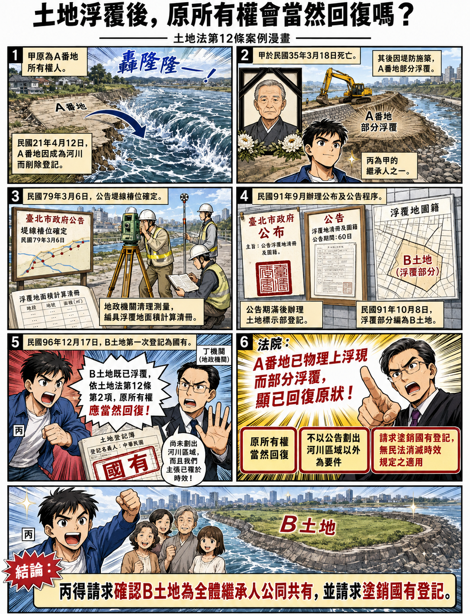
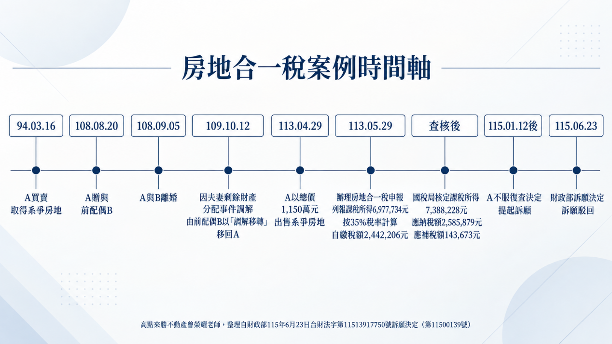
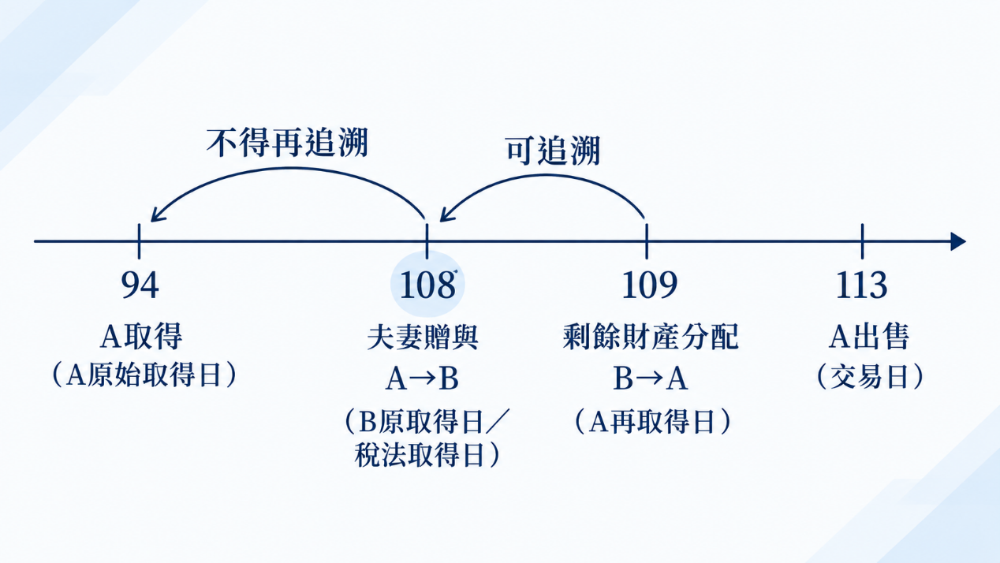
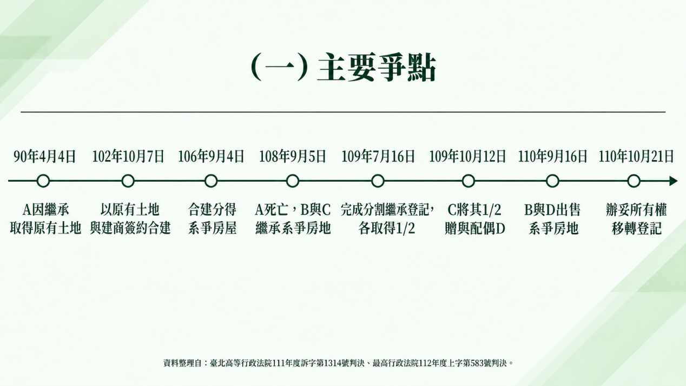
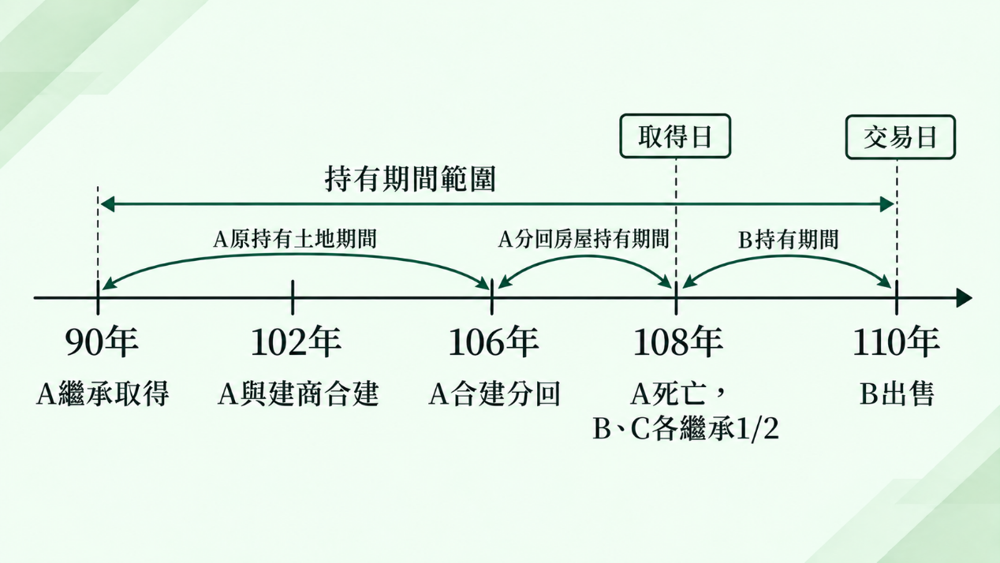
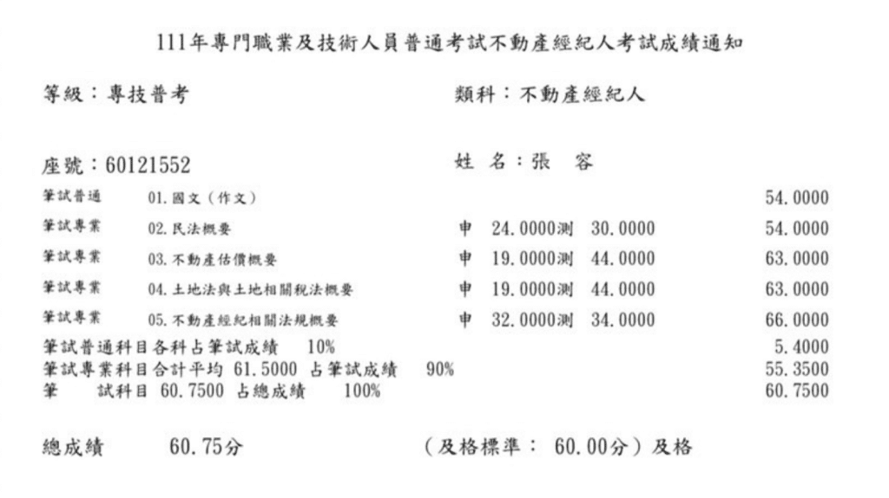

年度合輯：2026 年¶
共收錄 141 篇文章。
1. 農業用地興建個別農舍之條件¶
發布日期: 2026-01-08
• (一) 人的管制：
-
申請人已成年（即年滿18歲）（農建§2Ⅰ①）。
-
申請人為農民。農民之認定，由農民於申請興建農舍時，檢附農業生產相關佐證資料，經直轄市、縣（市）主管機關會同專家、學者會勘後認定之。但屬農民健康保險被保險人或全民健康保險第三類被保險人者，不在此限（農建§3-1）。
-
申請人無自用農舍。申請人已領有個別農舍或集村農舍建造執照者，視為已有自用農舍。但該建造執照屬尚未開工且已撤銷或原申請案件重新申請者，不在此限（農建§2Ⅰ④）。
-
申請人之戶籍所在地及其農業用地，須在同一直轄市、縣（市）內，且其土地取得及戶籍登記均應滿二年（農建§2Ⅰ②）。
-
申請人為該農業用地之所有權人（農建§2Ⅰ⑤）。亦即，興建農舍起造人應為該農舍坐落土地之所有權人（農建§9Ⅰ）。
• (二) 地的管制：
-
申請興建農舍之該筆農業用地面積不得小於0.25公頃（農建§2Ⅰ③）。
-
申請興建農舍之農業用地，有下列情形之一者，不得申請興建農舍： (1)非都市土地工業區或河川區。 (2)前款以外其他使用分區之水利用地、生態保護用地、國土保安用地或林業用地。 (3)非都市土地森林區養殖用地。 (4)其他違反土地使用管制規定。（農建§5Ⅰ）
-
該農業用地確供農業使用及屬未經申請興建農舍（農建§2Ⅰ⑤）。
-
該農舍之興建不得影響農業生產環境及農村發展（農建§2Ⅰ⑤）。
【註】 農建：農業用地興建農舍辦法
注：本文圖片存放於 ./images/ 目錄下
2. 農舍興建之借名登記案例：最高法院114年度台上字第1834號民事判決¶
發布日期: 2026-01-13
• (一) 案例 甲公司與乙地主簽立A農地租約後，因農舍興建須具農民身分，故委任乙之名義申請建造執照及使用執照，由甲公司出資建成B農舍，並將之作為展售中心使用，於租約屆滿後，試問B農舍之所有權人為何？
• (二) 重要概念及規定
-
基於私法自治及契約自由原則，當事人得自行決定契約之種類及內容，以形成其所欲發生之權利義務關係。
-
借名登記契約，係指當事人約定一方將自己之財產以他方名義登記，而仍由自己管理、使用、處分，他方允就該財產出名為登記之契約 (最高法院113年度台上字第2029號判決參照)。故借名登記契約之特性，在於借名人仍保留對財產之實際管理、使用及處分之權能。查，B農舍完成後，自始均由甲公司使用，未支付乙任何對價，且關於租期屆滿後，已明確約定B農舍得由乙以金錢向甲公司買回，足見B農舍固登記予乙名下，惟甲公司仍保有B農舍實際之管理、使用、處分之權能，核與借名登記契約之性質相符。
-
當事人為規避強行法規之適用，以迂迴方法達成該強行法規所禁止之相同效果行為，其事實上之效果違反法律規定之意旨，屬脫法行為，應非法之所許，自屬無效 (最高法院105年度台上字第1852號民事判決參照)。
-
農業發展條例第18條第4項規定，同條第1項、第3項農舍起造人應為該農舍坐落土地之所有權人；農舍應與其坐落用地併同移轉或併同設定抵押權；依同條第5項授權訂定之農業用地興建農舍辦法第2條、第3條規定，申請興建農舍之申請人應為農民，且其資格需符合各該條規定（包含該農舍坐落土地之所有權人）。上開相關規定，係基於農業發展、建全農地利用之目的而制定，自屬強行規定。
• (三) 結論 甲與乙就B農舍之所有權登記，成立借名登記契約。農業發展條例18條第1項、第3項、第4項及農業用地興建農舍辦法第2條、第3條規定，申請興建農舍之人應具備農民資格，係基於農業發展、建全農地利用之目的，屬強行規定。甲公司為規避上開規範以取得B農舍所有權，與乙成立之借名登記契約，屬脫法行為而無效，且甲公司不得以雙方有借名契約存在，自詡為實際出資人而取得B農舍之所有權，B農舍應由符合上開規範之登記所有人乙取得所有權。
參考資料： 臺灣高等法院臺中分院113年度重上字第146號民事判決 最高法院114年度台上字第1834號民事判決
注：本文圖片存放於 ./images/ 目錄下
3. 民法§1050 ｜離婚的要件與證人職責¶
發布日期: 2026-01-14
同學們大家好，今天我們來談談夫妻協議離婚時須符合哪些要件，以及作為離婚證人，會有哪些注意事項。
離婚定義
兩願離婚，應以書面為之，有二人以上證人之簽名並應向戶政機關為離婚之登記。
離婚要點
一、協議離婚的法定要件
1.以書面為之（簽署離婚協議書）。
2.有二人以上的離婚證人簽名。
3.夫妻雙方親自向戶政機關辦理離婚登記。
二、證人實務注意事項
1.證人不一定要陪同當事人到戶政事務所登記，但建議保留委託見證的紀錄，以避免爭議。
2.證人不一定要認識夫妻雙方，但仍須確實知悉雙方均有離婚意願。
3.證人原則上沒有身分限制（如可以是子女或父母），但應具備完全行為能力。
三、離婚證人的核心職責是確認夫妻雙方的離婚真意
離婚證人並非只是單純簽名即可。依據最高法院見解，證人的最主要任務是知悉夫妻雙方確實有離婚的真意。證人必須親眼或親耳聽到夫妻兩人都明確表達想要結束婚姻關係，不能僅憑其中一人的片面之詞就簽名。
Ding 老師提醒
以上就是關於協議離婚以及離婚證人的簡單介紹，婚姻關係的變動是一個很重要的事情，一旦證人未盡到此實質查證的責任，該離婚行為便可能被認定無效，導致雙方婚姻關係仍然存續，同學們有遇到的話一定要特別小心哦。
．延伸閱讀
繳
原文出處：Jasper 不動產
4. 遺產及贈與稅法§15及17-1｜遺產稅中分配請求權扣除額計算¶
發布日期: 2026-01-14
財政部在114年7月28日訂定發布「被繼承人死亡前二年內贈與配偶之財產併計遺產總額課徵遺產稅稽徵作業處理原則」並保障生存配偶的財產權，以落實憲法法庭113年憲判字第11號判決意旨，將擬制遺產視為被繼承人的現存財產，納入剩餘財產差額分配請求權扣除額計算基礎，保障配偶財產權益。
適用案件
1.113年10月28日起，已發生繼承事實，但尚未核課或尚未核課確定的遺產稅案件。
2.繼承事實發生在113年10月28日以後的遺產稅案件。
就分配請求權扣除額的計算原則舉例說明
被繼承人A於114年10月1日死亡，繼承人為其配偶B及子C。
A生前於114年1月1日贈與婚後投資獲利新臺幣1,100萬元現金予配偶B，
A死亡時留有婚後財產2,900萬元，配偶B清點婚後財產計200萬元（不含前開受贈現金1,100萬元）。繼承人114年10月7日申報A之遺產稅，經核定A之遺產總額4,000萬元。
計算方式如下：
1.被繼承人A的剩餘財產:
被繼承人婚後財產2,900萬元
+視為被繼承人的現存財產(擬制財產)1,100萬元
=4,000萬元
△原計算方式：被繼承人婚後財產2,900萬元
2.生存配偶B的剩餘財產:
200萬元（婚後財產，不含受贈配偶的1,100萬元現金）
3.分配請求權扣除額計算:
（被繼承人死亡時之剩餘財產4,000萬元-生存配偶之剩餘財產200萬元）÷2 = 1,900萬元
△原計算方式：
(被繼承人死亡時之剩餘財產2,900萬元-生存配偶之剩餘財產200萬元）÷2 = 1,350萬元
4.新舊制兩者差異：
分配請求權扣除額
1,900萬元-1,350萬元=550萬元
即遺產稅扣除額差了550萬元！
．延伸閱讀
概念比一比 25｜配偶的剩餘財產分配權 v.s. 遺產繼承權
繳
原文出處：Jasper 不動產
5. 遺產及贈與稅法§16｜不計入遺產總額¶
發布日期: 2026-01-14
被繼承人死亡時所遺留之財產，應納入遺產總額並課徵遺產稅，以落實量能課稅與財富再分配的立法精神。然而，基於特定政策考量、財產性質或取得方式的特殊性，部分項目依法得不計入遺產總額。這些排除規定旨在避免重複課稅、保障受益人權益，並促進社會公益或制度參與，就讓我們一起來了解，究竟有哪些項目在法律上得以排除在遺產課稅範圍之外吧！
遺產及贈與稅法 §16 內容
一、遺贈人、受遺贈人或繼承人捐贈(加入)予下列對象之財產
1.各級政府及公立教育、文化、公益、慈善機關。
2.公有事業機構或全部公股之公營事業。
3.於被繼承人死亡時，已依法登記設立為財團法人組織且符合行政院規定標準之教育、文化、公益、慈善、宗教團體及祭祀公業。
4.於被繼承人死亡時已成立之公益信託並符合下列規定者：
- (1)受託人為信託業法所稱之信託業。
- (2)各該公益信託除為其設立目的舉辦事業而必須支付之費用外，不以任何方式對特定或可得特定之人給予特殊利益。
- (3)信託行為明定信託關係解除、終止或消滅時，信託財產移轉於各級政府、有類似目的之公益法人或公益信託。
二、被繼承人所有之特定財產
1.自己創作之著作權、發明專利權及藝術品。
2.日常生活必需之器具及用品，其總價值在100萬元以下部分。
3.職業上之工具，其總價值在56萬元以下部分。
4.遺產中有關文化、歷史、美術之圖書、物品，經繼承人向主管稽徵機關聲明登記者。
但繼承人將此項圖書、物品轉讓時，仍須自動申報補稅。
5.死亡前五年內，繼承之財產已納遺產稅者。
- 前次繼承案免稅之農業用地、公共設施保留地等免稅土地不適用之。
6.土地
- (1)依法禁止或限制採伐之森林。但解禁後仍須自動申報補稅。
- (2)經政府闢為公眾通行道路之土地或其他無償供公眾通行之道路土地，經主管機關證明者。
但其屬建造房屋應保留之法定空地部分，仍應計入遺產總額。
三、其他
1.信託約定於被繼承人死亡時，給付其所指定受益人之人壽保險金額、軍、公教人員、勞工或農民保險之保險金額及互助金。
2.被繼承人配偶及子女之原有財產或特有財產，經辦理登記或確有證明者。
3.被繼承人之債權及其他請求權不能收取或行使確有證明者。
．延伸閱讀
繳
原文出處：Jasper 不動產
6. 民法§474｜消費借貸契約的注意事項¶
發布日期: 2026-01-14
借錢是每個人都會遇到的事情，今天來帶同學們一起了解該如何製作完整的消費借貸契約，以保障自己的權利。
消費借貸定義
1.稱消費借貸者，謂當事人一方移轉金錢或其他代替物之所有權於他方，而約定他方以種類、品質、數量相同之物返還之契約。
2.當事人之一方對他方負金錢或其他代替物之給付義務而約定以之作為消費借貸之標的者，亦成立消費借貸。
消費借貸要點
一、契約中應具備的基本內容
1.借款金額與幣別。
2.借款期限。
3.是否有利息，以及利率和計算方式（單利/複利、按日/按月計息）。
4.款項交付方式（現金收付、票據支付或匯款帳號）。
5.還款方式與期限（本金與利息的清償時間）。
二、高額借款時的進階保障內容
1.遲延利息與違約金：
約定借方未按時還款時，應如何加計遲延利息或支付違約金。
2.保證人或擔保品：
約定保證人或提供擔保品，以確保債權。保證人需簽名，擔保品則需附上相關資料，並應載明清償後解除擔保責任的方式。
3.加速條款：
約定借方若有任一期款項未按時支付，貸方有權要求立即收回部分或全部借款。
4.管轄法院與費用分擔：
事先約定若發生訴訟應由哪個法院管轄，以及訴訟費用由誰負擔。
三、證據留存的重要性
1.現金交付：
應撰寫並留存現金收據，清楚載明「借款收據」、金額、當事人簽名與收受日期。
2.匯款或轉帳：
必須同時保留借款契約。單純的匯款紀錄（金額、時間、戶名）無法證明款項性質為「借款」，借方可能抗辯為贈與或其他原因。若無契約證明，貸方可能敗訴。
3.其他證明方式：
若無書面契約，也可提出其他能證明借款事實的證據，如提及借款、利息或還款事宜的對話紀錄、通訊紀錄或證人。
Ding 老師提醒
以上就是消費借貸契約應具備的基本要件，無論款項交付方式為何，務必留下足以證明「雙方具有借貸關係合意」的書面契約或收據，因為單純的資金流動紀錄並不足以在訴訟上確立債權，充分的證據是保護貸方權益的核心，同學們要特別留意哦。
．延伸閱讀
繳
原文出處：Jasper 不動產
7. 絕對估值與相對估值¶
發布日期: 2026-01-15
• (一) 絕對估值：指著重勘估標的本身之估值符合市場行情，而不著重勘估標的與其他土地之地價高低層次（即地價等級）是否合理。
• (二) 相對估值：指著重勘估標的與其他土地之地價高低層次（即地價等級）的合理性，而不著重勘估標的本身之估值是否符合市場行情。
• (三) 應用：
- 公部門估價： (1)規定地價：強調相對估值。因為相對估值才可以確保土地所有權人地價稅負擔之公平性。如果公告地價較市場行情為低，則全體土地所有權人之地價稅皆減輕而已，不致引發土地所有權人質疑。
• (2) 土地現值查估：強調相對估值。因為相對估值才可以確保土地所有權人土地增值稅負擔之公平性。如果公告土地現值較市場行情為低，則全體土地所有權人之土地增值稅皆減輕而已，不致引發土地所有權人質疑。
• (3) 土地徵收補償地價查估： ①一般徵收：強調絕對估值。因為一般徵收採現金補償，絕對估值才可以確保土地徵收之合理補償。 ②區段徵收：強調相對估值。因為區段徵收大都採抵價地補償，即原土地所有權人按其應領地價補償費與區段徵收補償地價總額之比率計算領回抵價地。如果參加區段徵收之各所有權人之土地估值皆偏低，則前揭比率維持不變，因此領回抵價地不受影響。
- 私部門估價： 民間估價強調絕對估值，以確保買賣、租賃、融資、擔保等經濟活動之公平性及安全性。
注：本文圖片存放於 ./images/ 目錄下
8. 後順位繼承人未及於3個月內抛棄繼承即死亡，其再轉繼承人之抛棄繼承爭議¶
發布日期: 2026-01-20
根據112年民事類法律座談，提及一個案例： 被繼承人甲於民國110年12月24日死亡，第一順位繼承人於111年1月10日拋棄繼承，未通知後順位繼承人，本院於111年2月11日公告，第二順位繼承人早於甲死亡，第三順位繼承人乙於111年4月29日死亡，乙之繼承人丙於111年5月18日向本院聲明拋棄對甲之繼承權，應否准予備查？
此有正反兩說， 其最終審查結果為否定說： 乙於111年4月29日死亡，惟依民法第1175條規定，繼承之拋棄，溯及於繼承開始時發生效力，而乙既於繼承開始時即110年12月24日時尚生存，自因被繼承人甲之配偶與第一順位繼承人聲明拋棄繼承而成為被繼承人甲之法定繼承人，取得繼承權。而丙應係自乙處再轉繼承被繼承人甲之遺產，依法乙於被繼承人甲死亡之時即已繼承被繼承人甲之遺產，縱丙現因再轉繼承取得原屬被繼承人甲之遺產，丙於被繼承人甲死亡時仍非被繼承人甲之法定順位繼承人，自無從聲明拋棄繼承，然丙得拋棄乙之繼承權，無由拋棄甲之繼承權（臺灣新北地方法院111年度司繼字第1865號、最高法院110年度台簡抗字第290號裁定意旨參照）。
換言之，因前面順位皆拋棄，故輪到第三順位乙時，已經溯及到甲110年死亡時取得繼承權，相對而言，丙尚未取得甲的繼承權。由於乙來不及拋棄，導致乙死亡時，其對甲的遺產繼承權發生再轉繼承給丙，並與乙自有財產，一併都歸由丙依照民法第1148條繼承，此時丙無法僅對甲的遺產主張部分拋棄繼承，因為現在的繼承權是來自於乙的，故僅能就乙的全部遺產聲明拋棄繼承。
注：本文圖片存放於 ./images/ 目錄下
9. 建物拆除之補償標準¶
發布日期: 2026-01-22
• (一) 合法建物拆除之補償： 建物現值=重建價格–建物折舊 合法建物拆除之補償有二項標準：
-
以重建價格補償：建物拆除補償係以重建價格為補償標準。換言之，雖建物為中古屋，仍以重建之新成屋價格予以補償，不扣除建物折舊。其原因是如以建物現值（即重建價格扣除建物折舊之殘餘價格）補償，將使原建物所有權人無法以其補償金額再去興建同一區位、同一品質及同一面積之建物。如土地徵收對於建物，採重建價格補償即是（徵§31 I）。
-
以建物現值補償：建物拆除補償標準係以重建價格扣除建物折舊，以其殘餘價格為補償標準。例如： (1)都市更新權利變換而拆除建物（都更§57 V）。 (2)市地重劃而拆除建物（平§62-1 II）。 (3)照價收買土地而一併收買建物（平§34）。 上開三種情形，原建物所有權人無須以其補償金額再去興建建物，故以建物現值補償。
綜上，合法建物拆除以建物現值補償為原則，以重建價格補償為例外。 (二)違章建築拆除之補償：
-
原則：不予補償。如土地徵收對於違章建築，不予補償（徵§5 I③、III）。
-
例外：專案處理。如都市更新權利變換對於舊違章建築，可採分配房地處理（都更§62）。
【註】
-
平：平均地權條例。
-
徵：土地徵收條例。
-
都更：都市更新條例。
注：本文圖片存放於 ./images/ 目錄下
10. 分管契約遇到判決分割之效力¶
發布日期: 2026-01-27
• (一) 案例事實 甲為A地共有人之一，應有部分為250分之1，乙、丙、丁、戊4人則為A地原共有人之一，且前經全體共有人同意於A地建有B房並完成建物所有權第一次登記。然而，A地後經確定判決應予變價分割，並由甲1人單獨取得系爭土地所有權全部，試問該分管契約效力如何？甲得否訴請拆屋還地，並主張乙、丙、丁、戊應給付占有之不當得利損害金？
• (二) 判決結果
-
分割共有物判決後A地共有人間所訂之原分管契約，即因而消滅，B房失其占有權源。乙、丙、丁、戊4人應將B建物拆除，並將該部分土地騰空返還甲。
-
乙、丙、丁、戊4人應自分割判決確定日起至騰空返還之日止，按年給付甲不當得利損害金。
• (三) 判決理由重點摘述
-
以按無權占有為原因，請求返還土地者，占有人對土地所有權存在之事實無爭執，而僅以非無權占有為抗辯者，土地所有權人對其土地被無權占有之事實無舉證責任，占有人自應就其取得占有係有正當權源之事實證明之（最高法院85年度台上字第1120號民事判決意旨參照）。
-
共有物係屬全體共有人所共有，在分割前，各共有人固得約定範圍而使用之，但此項分管行為，不過定暫時使用之狀態，與消滅共有關係之分割有間。故共有物經法院判決分割確定時，先前共有人間之分管契約，即應認為終止（最高法院85年度台上字第1046號民事判決要旨參照）。
-
按共有物之分割，經分割形成判決確定者，即生共有關係終止及各自取得分得部分所有權之效力。於原物分割之情形，共有人對於他共有人分得之部分，既喪失共有權利，則其占有，除另有約定外，即難謂有何法律上之原因（最高法院51年台上字第2641號民事判例參照）。……因此，共有人基於分管契約占有共有土地特定部分興建房屋，於共有土地裁判分割確定時，除該特定部分適分歸於其，抑共有人間或共有人與拍定人另有約定外，其占有之正當權源即歸於消滅。
-
按分管契約，係共有人就共有物之使用、收益或管理方法所訂定之契約，共有人請求分割共有物，應解為有終止分管契約之意思。是經法院判決分割共有物確定者，無論所採行分割方法為何，均有使原分管契約發生終止之效力。僅分割方法採行變價分割時，因於該判決確定時，不當然發生共有物變賣之效果，共有物之所有權主體尚未發生變動，共有人間之共有關係應延至變賣完成時消滅而已。而分管契約既經判決分割共有物確定而消滅，共有物之用益及管理回復原來之關係，除非經共有人協議或依民法第820條第1項規定為決定，共有人不得任意占有使用共有物之特定部分。
-
此與民法第425條之1及第838條之1乃在規範房屋及土地因同屬一人情形時，土地所有人無從與自己所有之房屋約定使用權限，倘因而異其所有人，基於房屋一般價值甚高及其既有之使用權保護之考量，為調和土地與建物之利用關係，承認在房屋得使用期限內，有租賃關係或擬制有地上權存在之情形尚難謂為相同。
資料來源： 最高法院107年度台上字第879號判決 臺灣高等法院104年度重上字第560號民事判決
注：本文圖片存放於 ./images/ 目錄下
11. 公共設施保留地與公共設施用地之比較（一）¶
發布日期: 2026-01-29
• (一) 公共設施保留地之意義 公共設施保留地係指都市計畫事先指定之公共設施用地，保留供政府機關或各事業機構日後取得。
• (二) 私有公共設施保留地與私有公共設施用地之比較 應先說明，本比較所稱公共設施用地，指除公共設施保留地以外，供公共設施使用之土地。
-
存在地區： (1)公共設施保留地僅存在都市土地。亦即，非都市土地無公共設施保留地。 (2)公共設施用地存在於都市土地及非都市土地。
-
容積移轉： (1)公共設施保留地之取得，得以容積移轉方式辦理（都§83-1）。 (2)私有公共設施用地之取得不適用容積移轉。
-
私地與公地交換： (1)私有公共設施保留地得申請與公有非公用土地辦理交換（都§50-2）。 (2)私有公共設施用地不適用私地與公地交換。
-
徵收補償： (1)公共設施保留地按毗鄰非公共設施保留地之平均市價補償其地價（徵§30）。 (2)公共設施用地按標的本身市價補償其地價（徵§30）。
（待續）
注：本文圖片存放於 ./images/ 目錄下
12. 登記不實之損害賠償案例-114年度台上字第1947號¶
發布日期: 2026-02-03
• (一) 案例事實 民國50年辦理A地號土地第一次登記並放領給某甲，面積為620平方公尺。嗣於55年分割出A-1地號，面積為175平方公尺，原A地號則為445平方公尺。其中A-1地已輾轉給丁。然而，乙地政事務所發現分割前A地號土地於辦理第一次登記時，將其中已登記為B地號土地範圍之重疊位置及面積部分登載為所屬土地範圍之面積，而發生溢登載土地面積122平方公尺，嗣再重複登記在55年11月7日分割增加之A-1地號。遂於108年8月20日將A-1地號溢登面積122平方公尺之錯誤，按地籍測量實施規則第232條規定，將A-1地號面積更正登記為53平方公尺。乃至於丁依土地法第68條第1項規定，以受有土地面積減少122平方公尺之損害，向乙地政事務所請求損害賠償。
• (二) 判決結果 原判決（114年度上國更二字第1號）丁敗訴。 最高法院114年度台上字第1947號則廢棄原判決。
• (三) 判決重點
-
按我國土地法關於土地地籍之管理，採取強制登記原則，賦與登記事項有絕對效力，且地政機關負實質審查責任，此觀土地法第72條、第43條及土地登記規則第55條至第57條等規定即明。而土地法第68條第1項前段規定：「因登記錯誤遺漏或虛偽致受損害者，由該地政機關負損害賠償責任」，乃以貫徹土地登記之公示性及公信力，並保護權利人之權利與維持交易安全為規範目的。該規定文義既未明示以登記人員之故意或過失為要件，原則上自應由地政機關就登記不實之結果，負無過失之賠償責任，且不以該不實登記是否因受害人以外之第三人行為所致，而有不同。
-
丁主張致其受損害之原因事實應包含因第一次登記及放領作業有誤而使土地登記面積不實。該登記內容不實，是否該當土地法第68條第1項前段所定情形？上訴人是否因此受有損害？此攸關上訴人得否依土地法第68條規定請求賠償，自有詳加調查研求之必要。因此，不得率以更正登記係使A-1地號土地之圖簿、實地面積相符，無錯誤、遺漏或虛偽情事，進而為不利丁之判斷。
參考來源：最高法院民事判決114年度台上字第1947號
注：本文圖片存放於 ./images/ 目錄下
13. 公共設施保留地與公共設施用地之比較（二）¶
發布日期: 2026-02-05
- 租稅優惠： (1)地價稅：
①公共設施保留地：
• 公共設施保留地未作任何使用並與使用中之土地隔離，免徵地價稅。
• 公共設施保留地作農業使用，課徵田賦。田賦自民國76年停徵迄今。
• 公共設施保留地作自用住宅用地，按千分之二計徵地價稅。
• 公共設施保留地作自用住宅用地以外之建築使用，統按千分之六計徵地價稅（不累進）。（土稅§19）
②公共設施用地：
• 道路：無償供公眾通行之道路土地，經查明屬實者，在使用期間內，地價稅全免。但其屬建造房屋應保留之法定空地部分，不予免徵（土稅減§9）。
• 學校用地：財團法人或財團法人所興辦業經立案之私立學校用地、為學生實習農、林、漁、牧、工、礦等所用之生產用地及員生宿舍用地，經登記為財團法人所有者，全免。但私立補習班或函授學校用地，均不予減免（土稅減§8I①）。
• 公園及體育場所用地：私立公園及體育場所用地，按千分之十計徵地價稅（不累進）（土稅§18I②）。又，經事業主管機關核准設立，對外絕對公開，並不以營利為目的之私立公園及體育館場，其用地減徵百分之五十；其為財團法人組織者減徵百分之七十（土稅減§8I③）。
• 停車場用地：依都市計畫法規定設置之供公眾使用之停車場用地，按千分之十計徵地價稅（不累進）（土稅§18I④）。
• 其餘公共設施用地：上述以外之私有公共設施用地，無減免規定，持有時均應課徵地價稅。
• (2) 土地增值稅：
①公共設施保留地：
• 被徵收之土地，免徵土地增值稅；依法得徵收之私有土地，土地所有權人自願售與需用土地人者，免徵土地增值稅（土稅§39I）。
• 依都市計畫法指定之公共設施保留地尚未被徵收前之移轉，免徵土地增值稅（土稅§39Ⅱ）。
②公共設施用地：
• 都市土地：私有公共設施用地（如道路用地、學校用地、公園用地、體育場所用地、停車場用地等）之移轉，無減免規定，移轉時均應課徵土地增值稅。
• 非都市土地：非都市土地經需用土地人開闢完成或依計畫核定供公共設施使用，並依法完成使用地編定，其尚未被徵收前之移轉，經需用土地人證明者，免徵土地增值稅（土稅§39Ⅲ）。
• (3) 房地合一所得稅：
①公共設施保留地：
• 被徵收或被徵收前先行協議價購之土地，免徵所得稅（所§4-5I③）。
• 尚未被徵收前移轉依都市計畫法指定之公共設施保留地，免徵所得稅（所 §4-5I④）。
②公共設施用地： 所有公共設施用地，無減免規定，交易時均應課徵所得稅。
• (4) 遺產稅：
①公共設施保留地： 公共設施保留地因繼承而移轉，免徵遺產稅（都§50-1）。
②公共設施用地：
• 道路用地：被繼承者遺產中經政府闢為公眾通行道路之土地或其他無償供公眾通行之道路土地，經主管機關證明者，不計入遺產總額（其租稅效果等同免徵遺產稅）。但其屬建造房屋應保留之法定空地部分，仍應計入遺產總額（遺贈§16⑫）。
• 其餘公共設施用地：道路用地以外之私有公共設施用地，無減免規定，繼承時均應課徵遺產稅。
• (5) 贈與稅：
①公共設施保留地： 公共設施保留地因配偶、直系血親之贈與而移轉者，免徵贈與稅（都§50-1）。
②公共設施用地： 所有公共設施用地，無減免規定，贈與時均應課徵贈與稅。
綜上，對公共設施保留地土地所有權人之權益保障較公共設施用地為多，違反租稅平等原則。
【註】 都：都市計畫法。 徵：土地徵收條例。 土稅：土地稅法。 土稅減：土地稅減免規則。 遺贈：遺產及贈與稅法。 所：所得稅法。
注：本文圖片存放於 ./images/ 目錄下
14. 重測發生界址爭議之處理¶
發布日期: 2026-02-10
• (一) 重測發生界址爭議之意義 相鄰土地所有權人因重測指界時，對於土地間之界址認知不一致。
• (二) 界址爭議之處理重點
-
調處 (1)土地所有權人因設立界標或到場指界發生界址爭議時，準用第五十九條第二項規定處理之。（土法§46-2） (2)應由該管直轄市或縣（市）地政機關予以調處，不服調處者，應於接到調處通知後十五日內，向司法機關訴請處理，逾期不起訴者，依原調處結果辦理之。（土法§59 II）
-
調處或起訴中之註記 重測結果公告時，部分土地之界址爭議，尚未依土地法第五十九條第二項程序處理完畢者，應於公告文載明重測地籍圖經公告期滿確定後，登記機關不得受理申請依重測前地籍圖辦理複丈。並附記下列土地因界址爭議，正依法處理中字樣。（土地法第四十六條之一至第四十六條之三執行要點§16 I）
-
未解決前發生移轉 重測期間發生界址爭議尚未解決之土地，申請所有權移轉或他項權利設定登記者，應由權利關係人出具切結書敘明於界址確定後，其面積與原登記面積不符時，同意由地政機關逕為更正。（地測§201-1）
-
判決確定後之處理 (1)界址爭議經法院判決確定後，應即據以施測，並將施測結果公告。（土地法第四十六條之一至第四十六條之三執行要點§16 II） (2)亦即實施地籍圖重測時，因界址爭議事件經法院判決確定後據以補辦重測（應由土地所在地地政事務所依據法院判決意旨及鑑定書圖補正地籍調查表，並由重測機關辦理後續重測事宜），係依土地法第46條之2第2項準用同法第59條第2項規定辦理，並將重測結果依同法第46條之3予以公告（內政部89年11月28日台(89)內地第8916268號函）
注：本文圖片存放於 ./images/ 目錄下
15. 撤銷徵收或廢止徵收之行政程序¶
發布日期: 2026-02-12
撤銷徵收或廢止徵收之行政程序如下：
• (一) 申請：若申請人為需用土地人，應向中央主管機關（即內政部）申請。若申請人為原土地所有權人，應向直轄市或縣（市）主管機關（即直轄市或縣（市）政府地政局或地政處）申請。
• (二) 核准：撤銷或廢止徵收之核准機關為中央主管機關（即內政部）。
• (三) 公告通知：中央主管機關於核准撤銷或廢止徵收後，應將原案通知該管直轄市或縣（市）主管機關（徵§51Ⅰ）。直轄市或縣（市）主管機關於收到中央主管機關通知核准撤銷或廢止徵收案時，應公告三十日，並通知原土地所有權人於一定期間繳清應繳納之價額（徵§51Ⅱ）。
• (四) 繳清價額：原土地所有權人應於一定期間繳清應繳納之價額；未於一定期間繳清者，不發還其土地，並不得依規定申請收回該土地（徵§51Ⅱ）。前項一定期間，不得少於六個月（徵§51Ⅲ）。所稱應繳納之價額，指徵收補償地價、地價加成補償及遷移費。人口或物件已遷移者，無須繳納遷移費（徵§51Ⅳ）。另，徵收補償地價，於徵收前設定有他項權利或耕地租約者，包括他項權利人或耕地承租人原應受領之價金（徵§51Ⅴ）。
• (五) 發還土地：原土地所有權人繳清價額後，直轄市或縣（市）主管機關發還土地。另，撤銷或廢止徵收後，徵收前原設定之他項權利及耕地租約不予回復。但依規定由原土地所有權人及他項權利人申請於發給之抵價地設定抵押權或典權者，其原抵押權或典權准予回復（徵§52）。
【註】 徵：土地徵收條例。
注：本文圖片存放於 ./images/ 目錄下
16. 平均地權條例§79-1｜私法人購置住宅限制¶
發布日期: 2026-02-17
為防範私法人囤房牟利，自112年7月1日起，《平均地權條例》修法通過，將私法人購買住宅用房屋的難度大幅提高，除非符合特定的許可情形，否則不得購買，以保護國人的居住權益。
私法人、住宅定義
一、私法人
係指依據私法設立之組織，包含社團法人及財團法人。
例如：公司、工會。
二、不適用許可制之「住宅」情形
(1)住商用、住工用或住宅混合使用的房屋。
(2)無記載建物用途或用途為空白。
(3)建管前建物，當年度房屋稅單屬非住家用。
(4)建管後建物，經主管機關出具得作住宅以外用途證明。
需經許可之用途
1.宿舍
2.規模出租經營
3.長照等衛生福利機構場所
4.住宅合作社
5.合建、實施或參與都更危老
6.其他經內政部公告
申請流程與限制
1.流程：
應檢具使用計畫，經中央主管機關許可。
2.效期：
許可之文件有效期限為一年。
3.限制：
於登記完畢後五年內不得辦理移轉、讓與或預告登記。但因強制執行、徵收、法院判決或其他法律規定而移轉或讓與者，不在此限。
Lemon 老師提醒
上述管制規定情形，僅限於私法人「買受」供住宅使用之房屋時，若取得原因非屬於買受，而為其他移轉方式〈如信託、贈與、交換、第一次登記……等〉之情形則不受相關規定限制唷！
．延伸閱讀
繳
原文出處：Jasper 不動產
17. 預售屋買賣定型化契約應記載及不得記載事項§7-1｜預售屋履約擔保機制¶
發布日期: 2026-02-17
近年來房市景氣下滑，時有建商倒閉造成爛尾樓之消息，為保障預售屋交易，自民國100年起，內政部及消保會依法規定「預售屋履約保證」措施，以確保建商能夠按照預售屋買賣契約之約定，如時完成建物的施工和交屋，現行之預售屋履約保證機制有5種，讓我們一起瞭解各項機制的意義吧！
現行預售屋5種履約擔保機制
一、不動產開發信託
由建商或起造人將建案土地及興建資金信託予某金融機構或經政府許可之信託業者執行履約管理。
→興建資金依工程進度專款專用。
二、價金返還之保證
由建商與金融機構簽訂「價金返還之保證」契約，於該預售屋無法依約定完工交屋時，此金融機構負責承作價金返還保證，應返還買方已繳納之價金。
→價金返還之保證費用由賣方負擔。
三、價金信託
由建商與某金融機構簽定「價金信託」契約，將預售屋價金交付信託，設立專款專用帳戶，並由受託機構於信託存續期間，按信託契約約定辦理工程款交付、繳納各項稅費等資金控管事宜。
此信託行為建商為委託人，金融機構為受託人。
→受益人應屬建商，受託人係受託為賣方管理信託財產，但賣方未依約定完工或交屋者，受益權始歸屬於買方。
四、同業連帶擔保
由建商與其他依公司章程規定得對外保證之「同業同級公司」等相互連帶擔保，若賣方未依約定完工或交屋者，買方可持預售屋買賣契約向上述連帶擔保公司請求完成該建案後交屋。
連帶擔保公司不得為任何異議，亦不得要求任何費用或補償。
五、公會辦理連帶保證協定
由全國或各縣市「不動產開發商業同業公會」辦理數家建商共同成立之連帶保證協定，若賣方未依約定完工或交屋者，買方可持預售屋買賣契約向加入該連帶保證協定之任一公司請求共同完成本建案後交屋。
任一公司不得為任何異議，亦不得要求任何費用或補償。
民國114年修正草案檢討重點
重點一
買方所繳價金應專款專用於興建工程項目，避免工程未動工或興建初期，買方所繳價金即被用罄。
重點二
買賣契約應載明受託機構之信託專戶名稱及帳號，讓買方可將購屋款項直接匯入信託專戶，避免遭建商私自挪用。
重點三
簽約時應提供信託權益說明書，讓民眾充分了解建商提供的履約擔保機制及權益保障內容，並提醒其簽約前應審慎評估風險。
．延伸閱讀
繳
原文出處：Jasper 不動產
18. 經紀業管理條例 §11 ｜營業處所之經紀人設立規定¶
發布日期: 2026-02-17
經紀人證照除了可以向客戶展現你的專業價值之外，也是每一個不動產業都必須要具備的一張證照，今天就來向同學們介紹其中的原因吧。
營業處所定義
．營業處所
指經紀業經營仲介或代銷業務之店面、辦公室或非常態之固定場所。
根據條文定義，營業處所可以分為常態性和非常態性兩種
．常態性
路邊的仲介業店面和代銷業的文書辦公室
．非常態性
代銷業的預售屋接待中心
營業處所要點
一、常態性營業處所
1.至少應設置經紀人一人。
2.經紀營業員數每逾二十名時，應增設經紀人一人。
二、非常態性營業處所
1.至少應設置經紀人一人。
2.但其所銷售總金額達新臺幣六億元以上，該處所至少應置「專業」經紀人一人。
3.經紀營業員數每逾二十名時，應增設經紀人一人。
Ding 老師提醒
今天A代銷的預售屋接待中心，總銷售額為10億且有6位經紀人員，請問這個接待中心需要準備幾張經紀人證照呢? 答案是1張，你答對了嗎? 另外要注意經紀人員是可以「兼任」多家經紀業的，但只能「專任」一個營業處所哦。
．延伸閱讀
繳
原文出處：Jasper 不動產
19. 房屋稅條例§2~4｜房屋稅課徵範圍及對象¶
發布日期: 2026-02-18
法條依據：房屋稅條例§2、3、4
課徵範圍
1.附著於土地之各種房屋：
固定於土地上之建築物，供營業、工作或住宅用者。例如：辦公大樓、違建鐵皮屋。
2.增加上述房屋使用價值之建築物：
附屬於應徵房屋稅房屋之其他建築物，因而增加該房屋之使用價值者。例如：頂樓加蓋、大樓之地下室及屋突等。
課稅對象
1.原則：
房屋所有人。
2.以土地設定地上權之使用權房屋：
使用權人。
3.房屋設有典權：
典權人。
4.房屋為共同持有：
各共有人各按應有部分繳納。由共有人推定一人繳納，其不為推定者，由現住人或使用人代繳。代繳之房屋稅，在其應負擔部分以外之稅款，對於其他共有人有求償權。
5.所有人、使用權人或典權人住址不明，或非居住房屋所在地：
由管理人或現住人繳納之。如屬出租，應由承租人負責代繳，抵扣房租。
6.未辦建物所有權第一次登記且所有人不明之房屋：
使用執照所載起造人。
→無使用執照者：建造執照所載起造人。→無建造執照者：現住人或管理人。
7.房屋為信託財產者，於信託關係存續中：
受託人。受託人為二人以上者，準用共有房屋之規定。
Lemon 老師提醒
無論是否為合法房屋，只要符合課徵範圍定義之房屋，皆屬於房屋稅課徵範圍，若是無建造執照或使用執照之房屋，其房屋稅之納稅義務人依法為「現住人或管理人」。
．延伸閱讀
繳
原文出處：Jasper 不動產
20. 民法§1061｜婚生子女的認定¶
發布日期: 2026-02-18
在法律中，親子關係是很重要的一環，除了關係到財產繼承的權利外，更決定了父母與子女間的權利義務，今天就讓我們一起來了解婚生子女的判定標準吧。
婚生子女之定義
稱婚生子女者，謂由婚姻關係受胎而生之子女。
婚生子女的認定要點
一、婚生子女的認定
推定原則
法律以「受胎時間點」為判斷基準（非出生日期）。只要妻子的受胎時間點在婚姻關係存續中，所生子女即「推定」為夫的婚生子女。
推翻推定
若要推翻上述推定（例如證明孩子非夫所生），必須由夫妻之一方或子女本人在知悉是非婚生子女後兩年內提起「婚生否認之訴」。但子女於未成年時知悉者，仍得於成年後二年內為之。
※注意：親生父親無權提起「婚生否認之訴」。
二、準正效果
準正（先孕後婚）
即使受胎時父母並無婚姻關係（非婚生子女），但若生父與生母事後結婚，孩子即「視為」婚生子女（產生準正效果），法律上的權利義務與婚生子女完全相同
三、延伸思考
今天單身的A女懷了B男的小孩甲，之後A女再和不知情的C男結婚，此時甲能推定為C男的婚生子女嗎？
答案是否定的。首先A女懷甲的時間點，並非在和C男的婚姻關係中，因此甲不會推定為C男的婚生子女；再來C男並非甲的生父，因此C男和A女結婚後，也不會產生準正效果。既然沒有準正，甲就不會視為是婚生子女，自然也不能提起婚生否認之訴，因此當事人只能提出「確認親子關係不存在之訴」。
Ding 老師提醒
以上就是關於婚生子女認定的基本介紹，希望同學們都能對此有更多的理解哦。
．延伸閱讀
原文出處：Jasper 不動產
21. 民法§1164｜遺產的分割¶
發布日期: 2026-02-18
在處理過世親人遺留下來的財產時，繼承人們常常會因為應繼分比例和分配方式而爭吵，進而導致遺產不能被妥善利用。今天讓我們來快速了解法律對此的相關規定吧。
遺產的分割定義
繼承人得隨時請求分割遺產。但法律另有規定或契約另有訂定者，不在此限。
遺產的分割要點
一、遺產的性質為公同共有
§1151：
繼承人有數人時，在分割遺產前，各繼承人對於遺產全部(包含動產和不動產)為公同共有。
§828：
公同共有物的處分原則上應得全體公同共有人之同意。
§829：
公同關係存續中，各公同共有人，不得請求分割其公同共有物。
二、立法目的：解決遺產的分配問題
遺產分割的目的在於消滅「公同共有」關係，轉為「分別共有」或「單獨所有」。
§1164：
繼承人得隨時請求分割遺產。
三、提起遺產分割訴訟的注意事項
1.訴訟主體：
由一位或多位繼承人擔任原告，將其餘不同意的繼承人列為被告。
2.管轄法院：
向被繼承人死亡時的住所地法院，或主要遺產所在地的法院提起訴訟。
3.「全部」分割原則：
提起訴訟時，必須針對被繼承人的全部遺產（包含土地、建物、存款、股票、債權等）一併請求分割，不可僅針對單一特定遺產進行訴訟。
Ding 老師提醒
以上就是關於遺產分割的基本介紹，希望同學們都能對此有更多的理解哦。
．延伸閱讀
遺產及贈與稅法§15及17-1｜遺產稅中分配請求權扣除額計算
繳
原文出處：Jasper 不動產
22. 民法§824｜共有物分割的方法¶
發布日期: 2026-02-18
共有是一個非常常見的物之狀態，如何讓共有人能夠順利的分割共有物，立法者可是傷透了腦筋，今天就讓我們一起來了解共有物分割的方式吧。
共有物分割之要點
一、 兩大基本分割方式
1.原物分配
將共有物直接分割成數個部分，按應有部分的比例分配給各共有人，各自取得單獨所有權（例如將一塊地均分成數塊）。
2.變價分配
將共有物直接變賣為金錢，再由共有人按應有部分的比例分配價金（例如將土地賣掉分錢）。
二、分割模式的排列組合
由於實務上常遇到價值不均、難以利用或不適合分割的共有物，因此衍生出三種更彈性的分割模式：
1.原物分配兼金錢補償
在原物分配的基礎上，以金錢彌補因分配不均或價值不等所造成的損益差距。
2.部分原物分配、部分變價分配
僅將共有物中適合分割或有利用價值的部分進行原物分配，將剩餘不適合的部分變賣分錢。
3.部分原物分配、部分維持共有
將一部分的共有物分配給部分共有人單獨所有，另一部分則仍維持由部分共有人繼續共有。
三、變價分配時的優先承買權
變賣共有物時，除買受人為共有人外，共有人有依相同條件優先承買之權，有二人以上願優先承買者，以抽籤定之。
Ding 老師提醒
以上就是關於共有物分割的基本介紹，希望同學們都能對此有更多的認識哦。
．延伸閱讀
繳
原文出處：Jasper 不動產
23. 三分鐘小教室｜凶宅範圍的認定爭議¶
發布日期: 2026-02-18
凶宅在房市中是一個很重要的價格判斷因素，而目前的法院見解和行政函釋也有不小的差異，今天就讓我們一起來了解相關的規定吧。
凶宅範圍的認定爭議之要點
一、法院對凶宅的見解
1.客觀發生說：
多數法院認定只要曾發生「非自然身故」（如凶殺、自殺）即為凶宅。
2.綜合因素說：
少數法院認為除了是否發生「非自然身故」外，應綜合考量事件經過、公諸於世的程度等其他因素。
3.鬼屋不等於凶宅：
法院普遍認為「鬧鬼」屬於虛無縹緲的心理或宗教因素，缺乏科學證明，不能以此主張賠償。
二、行政函釋的定義，需同時符合1&2或1&3
1.時間限縮：
僅限於「賣方產權持有期間」內發生。
2.地點限縮：
發生在「專有部分」（主建物與附屬建物）。
3.行為要件：
需為陳屍在專有部分，或是在專有部分有求死並致死的行為（如起跳點）。
三、「洗凶宅」現象與法院的對應
1.爭議點：
內政部將時間限制在「賣方持有期間」，導致不肖人士可透過多次轉手來「洗白」凶宅背景，造成實務爭議。
2.法院的對應：
以善意取得為準， 若轉賣人 Y 買入時不知情（善意），則不需對後來的買受人 Z 負責。
Ding 老師提醒
以上就是目前凶宅範圍的認定爭議，不論法院、行政機關或是民間人士，其實都有不同的見解，因此同學們在買房時，務必做好充足的功課哦。
．延伸閱讀
繳
原文出處：Jasper 不動產
24. 民法§1091｜未成年人之監護人¶
發布日期: 2026-02-18
今天我們一起來了解未成年人的監護制度，當父母雙方皆無法行使或負擔親權時，法律該如何保障未成年子女的權益呢？讓我們一起看下去。
未成年之監護人定義
未成年人無父母，或父母均不能行使、負擔對於其未成年子女之權利、義務時，應置監護人。
未成年之監護人要點
一、監護制度的必要性
依民法第1084條規定，父母對未成年子女負有保護教養義務。當父母因故不能行使親權時，為確保未成年子女的利益受到適當保障，便需依民法第1091條規定另行選定監護人。
二、需選定監護人的法定情形
1.父母均不能行使、負擔對於未成年子女之權利義務。
2.父母死亡而無遺囑指定監護人。
3.遺囑指定之監護人拒絕就職。
三、「父母均不能行使」的實務認定
1.法律上不能： 父母受法院停止親權宣告。
2.事實上不能： 包括在監長期服刑、精神錯亂、重病、生死不明，以及其他事實上確實不能行使的情形（但不包含行使有困難）。
四、法定監護人選定順序（親屬順位）
1.與未成年人同居之祖父母。
2.與未成年人同居之兄姊。
3.不與未成年人同居之祖父母。
五、法院指定監護人
1.聲請人： 未成年子女本人、四親等內之親屬、檢察官、主管機關或其他利害關係人。
2.指定對象： 未成年人的三親等旁系血親尊親屬、主管機關、社會福利機構或其他適當的人選。法院得同時指定監護的方法。
Ding 老師提醒
以上就是未成年監護制度的簡單介紹，監護制度是社會安全網的重要環節，它確保了在父母缺位或能力不足時，未成年子女的利益和成長權益不會受到損害。而法律在握有最後裁量權的同時，希望為孩子找到最能提供保護與教養的適當人選。
．延伸閱讀
繳
原文出處：Jasper 不動產
25. 公平交易法§ 21｜廣告不實¶
發布日期: 2026-02-18
在資訊爆炸的現代社會，廣告是消費者決策的關鍵。然而當廣告與事實不符時，不僅侵害了消費者的知情權，也破壞了市場的公平競爭秩序。今天就一起來了解公平交易法中對廣告不實的規範吧。
廣告不實要點
一、廣告不實的定義與核心法律責任
1.定義：
虛偽不實或引人錯誤的表示
2.法律責任：
- （a）請求一般損害賠償。
- （b）業者故意時，最高可請求 3 倍懲罰性賠償。
- （c）可請求依業者獲利計算賠償，減輕舉證責任。
二、廣告不實與刑法詐欺罪的區別
廣告不實的範圍較廣，涵蓋誇大或模糊導致的誤解；而詐欺罪則要求行為人必
須具備欺騙的故意，且因此獲得不法利益或使他人受損，因此並非所有廣告不實皆構成刑法詐欺罪。
三、實務上常見的廣告不實樣態
1.「僅供參考」字樣的無效性：
企業經營者不得以在廣告或契約上標示「廣告僅供參考，請以實物為準」來主張免責，此類標示無法減輕或免除企業依《消保法》和《公平交易法》應負的法律責任。
2.誇大療效的保健食品：
這是政府大宗裁罰領域，常見手法包括誇大功效、宣稱療效與成分不符等，違者將面臨衛生單位或公平會的罰鍰。
3.房地產廣告不實：
包含暗示住宅用途但實際為商業區、不實宣傳詞（如「公園第一排」）、以及假公設（將非公設設施宣傳為公設）等。
4.網路關鍵字誤導：
利用購買同業產品名稱作為關鍵字廣告，誤導消費者購買的行為，也被認定為廣告不實。
四、消費者的自救與檢舉機制
消費者可至相關部會查詢產品資訊。若發現不實廣告，可向公平交易委員會等單位提出檢舉，公平會最高可處業者 2,500 萬元罰鍰。
Ding 老師提醒
廣告在生活中隨處可見，同學們一定要對宣傳內容保持警覺，避免一時上頭而花了冤枉錢哦。
．延伸閱讀
繳
原文出處：Jasper 不動產
26. 契稅條例§14｜免徵契稅之情形¶
發布日期: 2026-02-18
針對不具有實質財產利益移轉或基於實施公共政策之須，契稅條例中特別條列明文規定免課徵契稅，其目的在於避免重複課稅，兼顧租稅公平及行政效率。
免徵契稅之情形如下
1.各級政府機關、地方自治團體、公立學校因公使用而取得之不動產。但供營業用者，不適用之。
2.政府經營之郵政事業，因業務使用而取得之不動產。
3.政府因公務需要，以公有不動產交換，或因土地重劃而交換不動產取得所有權者。
4.建築物於建造完成前，變更起造人名義者。但建築物於建造完成前，因買賣、交換、贈與，以承受人為建造執照原始起造人或中途變更起造人名義，並取得使用執照者(同法第12條第2項)，不適用之。
5.建築物於建造完成前，其興建中之建築工程讓與他人繼續建造未完工部分，因而變更起造人名義為受讓人，並以該受讓人為起造人名義取得使用執照者。
Lemon 老師小例子
W建商破產惡性倒閉，
Lemon標購該建商未完工程建築物之已完成部分，再由Lemon繼續出資興建，並以Lemon為起造人名義取得使用執照者。
此情形Lemon並非以買賣、交換或贈與方式取得建築物，而是由Lemon出資完成，此時「變更起造人名義」並不屬於契稅核課對象，免課徵契稅。
．延伸閱讀
繳
原文出處：Jasper 不動產
27. 稅負比一比｜都市公保地vs非都市公設地¶
發布日期: 2026-02-18
公共設施保留地： 依「都市計畫」法所定都市計畫擬定、變更程序及依規定劃設之公共設施用地中，留待將來各公用事業機構、各該管政府或鄉、鎮、縣轄市公所取得者。
稅負優惠
| 都市土地 公共設施保留地 | 非都市土地 公共設施用地 | |
| 地價稅 | 免徵、2‰(自住用)、6‰(其他) | 無償供公眾通行之道路土地，免徵。 |
| 土地增值稅 | 免徵 | 免徵 |
| 贈與稅 | 因繼承或因配偶、直系血親間之贈與而移轉者，免徵。 | X |
| 遺產稅 | 因繼承或因配偶、直系血親間之贈與而移轉者，免徵。 | 經政府闢為公眾通行道路之土地或其他無償供公眾通行之道路土地，經主管機關證明者，不計入遺產總額。 |
| 房地合一稅 | 非課稅範圍 | X |
Lemon 老師提醒
實務上有許多現況為道路使用之土地，雖其產權均屬私人所有，但並非享有同等之稅負優惠，目前稅法優惠多適用於都市計畫之公保地，而非都市之公共設施用地則應依稅法明定之要件個別適用。
．延伸閱讀
稅負
原文出處：Jasper 不動產
28. 土地稅法§39｜非都公設地免徵土增稅¶
發布日期: 2026-02-18
修法理由：民國110年修法前，土地稅法僅針對「都市計畫法」指定的公共設施保留地予以免徵土地增值稅之適用，而「非都市土地」經編定為交通用地且依法核定為公共設施用地者，則不予免徵土地增值稅，此與憲法第7條保障平等權的原則不符，故財政部檢討修正後，增訂第39條第3項以保護納稅義務人之權益。
非都市土地移轉，免徵土地增值稅要件如下
1.屬依法得徵收：
未來將被徵收之非都市土地。
2.供公共設施使用：
需用土地人已開闢完成或依計畫核定之非都市土地。
例如：編定時現況已供作公路使用，編定為交通用地，或依核定計畫作學校預定地，編定為特定目的事業用地；但若現況為公路使用，編定為農牧用地，則應先辦理變更編定為交通用地後，始符合要件！
3.依法完成使用地編定：
依區域計畫法等規定完成使用地之編定，並依該法實施管制。
4.由需用土地人出具證明：
在移轉土地前，取具需用土地人核發之「非都市土地供公共設施使用證明書」
Lemon 老師提醒
依修法後之規定免徵土地增值稅之非都市土地，若將來變更為「非公共設施」使用，新所有權人再移轉時須承擔前階段稅負。
舉例來說，Lemon於110年取得非都市土地使用地編定為交通用地之甲地，取得當時公告現值為每平方公尺500元，並於113年依非都市土地供公共設施使用之規定出售予Flora時，免徵土地增值稅。嗣後Flora若無繼續作道路並於114年出售予時，無法取得需用土地人核發之證明書，則應從110年當時每平方公尺500元之公告現值計算土地增值稅。
．延伸閱讀
繳
原文出處：Jasper 不動產
29. 申報房屋稅籍有關事項及使用情形¶
發布日期: 2026-02-24
依據房屋稅條例第7條規定，「納稅義務人應於房屋建造完成之日起算三十日內檢附有關文件，向當地主管稽徵機關申報房屋稅籍有關事項及使用情形；其有增建、改建或移轉、承典時，亦同。」
因此，新、增、改建房屋應於建造完成之日起 30 日內送至所轄稅捐稽徵處申請設籍。應檢附附件： (一)建築物使用執照影本；未領使用執照者，請檢附建造執照影本。 (二)平面圖及立（側）面圖影本。 (三)地下室及共同使用部分協議書正本。 (四)未領建造執照或完工證明之房屋，請另附未辦保存登記 ( 所有權登記 ) 之房屋申請設立房屋稅籍承諾書正本及其他有關文件。 (五)若為鋼鐵造房屋，請檢附鋼鐵規格資料（如未檢附資料者，核實認定）。 (六)若裝設電梯，請附電梯工程合約書影本。 (七)若有三親等內親屬以外之他人設有戶籍，且無租賃關係，需填寫房屋所有人無租賃關係申明書或設籍人無租賃關係申明書。 (八)其他有關文件。
參考資料：財政部，稅務線上申辦－申請房屋設籍。
注：本文圖片存放於 ./images/ 目錄下
30. 房價上漲拉動地價上漲，而非地價上漲推動房價上漲¶
發布日期: 2026-02-26
• (一) 建設公司購地之最高價格 建設公司就建築基地在最有效使用下，預估銷售總金額，扣除建築成本、管銷費用及正常利潤，所得到之餘額，就是建設公司購買土地之最高支付價格。不動產估價技術規則第81條「土地開發分析法」之公式正是此一構想。
• (二) 土地開發分析法之啟示 土地開發分析法之公式如下： V=S÷（1+R）÷（1+i）−（C+M）……①其中：
-
V代表個別基地之地價：地價為因變數，S、C、M、i及R等為自變數。亦即，個別基地之地價（V）受到總銷售金額（S）、建築成本（C）、管銷費用（M）、綜合利率（i）、適當利潤率（R）等之影響。以函數關係表示如下： V=f(S, C, M, i, R)……②
-
S代表總銷售金額：建設公司於建築基地之建蔽率、容積率等容積管制下，規劃建物之可銷售樓地板面積（即建坪）。再就各層可銷售單價（即房價），乘以各層可銷售樓地板面積，就得到總銷售金額（即建案之總收入）。亦即： S=Σ(P×Q)……③ 其中： S：預期總銷售金額。 P：各層之可銷售單價（即房價）。 Q：各層之可銷售樓地板面積（即建坪）。
-
C代表建築成本：建築成本就是造價成本。不動產估價技術規則稱為「直接成本」。
-
M代表管銷費用：管銷費用包括規劃設計費、廣告費及銷售費、管理費、稅捐等，但不包括資本利息。不動產估價技術規則稱為「間接成本」。
-
i代表綜合利率：綜合利率為個案利率，而非年利率。亦即，建案興建一段期間所負擔之平均利率。
-
R代表適當利潤率：適當利潤率就是經濟學之正常利潤率。適當利潤率為個案利潤率，而非年利潤率。亦即，建案興建一段期間所要求之正常利潤率。
由③式可知，構成總銷售金額之因素為可銷售之房價（P）及可銷售之樓地板面積（Q）。又，可銷售之樓地板面積主要取決於容積率（以A代表），容積率代表土地使用強度。因此，②式可以改寫為：V=f(P, A, C, M, i, R)……④
由①式可知，房價（P）與地價（V）成正比，容積率（A）與地價（V）成正比，造價（C）與地價（V）成反比，管銷費用（M）與地價（V）成反比，綜合利率（i）與地價（V）成反比，適當利潤率（R）與地價（V）成反比。
• (三) 地價與房價之關係：
-
由④式可知，房價（P）為自變數，地價（V）為因變數。因此，房價影響地價，而非地價影響房價。
-
房價（P）與地價（V）成正比。亦即，房價上漲拉動地價上漲，而非地價上漲推動房價上漲。
• (四) 預售屋價格為不動產價格之核心 建設公司所採用之房價（P）為預售屋價，而非新成屋價。因此，預售屋價上漲帶動新成屋價上漲，新成屋價上漲再帶動中古屋價上漲。
綜上，預售屋價上漲帶動地價上漲，預售屋價上張又帶動新成屋價上漲及中古屋價上漲。要言之，預售屋價格為不動產價格上漲之領頭羊。 政府於不動產價格高漲時，採取抑制不動產價格高漲之措施，焦點應放在預售屋價格。只要預售屋價格受到抑制，其餘之新成屋價、中古屋價及地價等隨之熄火。
注：本文圖片存放於 ./images/ 目錄下
31. 騎樓地價稅減免¶
發布日期: 2026-03-03
根據土地稅減免規則第10條，供公共通行之騎樓走廊地，無建築改良物者，應免徵地價稅，有建築改良物者，依下列規定減徵地價稅。 一、地上有建築改良物一層者，減徵二分之一。 二、地上有建築改良物二層者，減徵三分之一。 三、地上有建築改良物三層者，減徵四分之一。 四、地上有建築改良物四層以上者，減徵五分之一。
範例：一棟總樓層10層樓之公寓大廈，基地面積為1,500平方公尺，每戶土地持分各1/10，而1樓供公共通行的騎樓走廊地面積為50平方公尺。 當任何一位土地所有權人向稅捐處申請減免地價稅，因本棟共10層樓，屬騎樓走廊地的上方有4層以上，故各樓層有持分基地的所有權人，皆可減徵騎樓走廊地面積的1/5，即50平方公尺×1/5＝10平方公尺。 因此，每一土地所有權人各可減徵10平方公尺的1/10（每戶持分），也就是1平方公尺的地價稅。
注：本文圖片存放於 ./images/ 目錄下
32. 都市更新整合不易成功之原因¶
發布日期: 2026-03-05
都市更新為現行政府強化建物結構、改善居住環境及提升居住品質之重要手段。雖政府給予容積獎勵、稅捐減免等優惠措施，然最困難在於整合費時且不易成功。其原因如下：
• (一) 愛比較心理：原住戶參加都市更新，不僅計算自己的利益，還會比較別人的利益；不僅計算本案的利益，還會比較別案的利益。比來比去，總覺得自己所獲得利益較別人少。
• (二) 稟賦效果：原住戶對其所擁有之房地，失去的評價往往高於買入的評價。買入的評價有市場行情可供參考，但失去的評價涉及個人主觀感受，難以評估。
• (三) 囚犯困境：都市更新之參與者，彼此間缺乏信任。因此，在集體行動中，個人所做出理性決策，卻造成集體不理性的結果。
• (四) 資訊不對稱：實施者與原住戶間存在資訊不對稱。實施者對更新案之資訊較多，原住戶對更新案之資訊較少。換言之，實施者是資訊強勢者，原住戶是資訊弱勢者，造成雙方不信任。
• (五) 競合關係：實施者與原住戶及原住戶之間存在既競爭又合作之關係。所謂競爭，指如果實施者房地分配多，就是原住戶房地分配少；如果某一原住戶房地分配多，就是其他原住戶房地分配少。所稱合作，指如果更新案成功，所有參與者皆共享其利；如果更新案失敗，所有參與者皆共蒙其弊。
• (六) 釘子戶現象：部分原住戶認為越晚簽訂同意書，分配條件愈好，甚至可以向實施者拿到桌底下之利益。
• (七) 拿翹行為：都市更新大戶若整合成功，獲利豐碩，因此大戶積極促成都市更新的成功，要價較低。反之，都市更新小戶若整合失敗，損失輕微，因此小戶採以小博大，拿翹行為，要價較高。
注：本文圖片存放於 ./images/ 目錄下
33. 共有物裁判分割方法之次序¶
發布日期: 2026-03-10
按民法第824條規定：「共有物之分割，依共有人協議之方法行之。 分割之方法不能協議決定，或於協議決定後因消滅時效完成經共有人拒絕履行者，法院得因任何共有人之請求，命為下列之分配： 一、以原物分配於各共有人。但各共有人均受原物之分配顯有困難者，得將原物分配於部分共有人。 二、原物分配顯有困難時，得變賣共有物，以價金分配於各共有人；或以原物之一部分分配於各共有人，他部分變賣，以價金分配於各共有人。 以原物為分配時，如共有人中有未受分配，或不能按其應有部分受分配者，得以金錢補償之。」
因此，共有物如需要終止共有關係，依前述民法第824條規定，除第1項協議分割外，第2項及第3項的裁判分割，會有三種分配結果：
-
原物分配：全部原物。
-
補償分配：部分原物、部分現金補償。
-
變價分配：全部變賣，分配價金。
其中，共有物裁判分割，應採原物、補償或變價方式，其評估標準為何？ 可參最高法院113年度台上字第1022號民事判決：「按定共有物分割之方法，固可由法院自由裁量，惟仍應斟酌各共有人之意願、利害關係及其分得部分所得利用之價值等情形，酌定適當公平之方法以為分割。審諸民法第824條第2項至第4項規定，法院裁判分割共有物，固得為原物分割及變價分割，但仍以原物分割為優先考慮，令共有人得享有共有物財產權之存續價值，至共有人中有不能按其應有部分受分配，得以適當之金錢補償之，並非僅有變賣一途。」
注：本文圖片存放於 ./images/ 目錄下
34. 三七五耕地因市地重劃及區段徵收而終止租約或註銷租約¶
發布日期: 2026-03-12
所謂終止租約，指業佃雙方合意而終止三七五租約。所謂註銷租約，指由政府介入而註銷三七五租約，屬於直轄市或縣（市）政府之行政處分。
• (一) 市地重劃：
- 註銷租約： (1)註銷時機：出租之公、私有耕地因實施市地重劃致不能達到原租賃之目的者，由直轄市或縣（市）政府逕為註銷其租約並通知當事人（平§63Ⅰ）。所稱因實施市地重劃致不能達到原租賃之目的者，指下列情形而言：
• ①重劃後未受分配土地者。
• ②重劃後分配之土地，經直轄市或縣（市）政府認定不能達到原租賃目的者。（平施§89）
• (2) 補償額度：依前項規定註銷租約者，承租人得依下列規定請求或領取補償：
• ①重劃後分配土地者，承租人得向出租人請求按重劃計畫書公告當期該土地之公告土地現值三分之一之補償。
• ②重劃後未受分配土地者，其應領之補償地價，由出租人領取三分之二，承租人領取三分之一。（平§63Ⅱ）
-
終止租約：重劃前訂有耕地三七五租約之土地，如無平均地權條例施行細則第89條所定不能達到原租賃目的之情形者，主管機關應於重劃分配結果公告確定後二個月內邀集權利人協調。協調成立者，應於權利變更登記後函知有關機關逕為辦理終止租約登記（市重§48）。
-
租約存續：上開如協調不成者，應於權利變更登記後函知有關機關逕爲辦理租約標示變更登記（市重§48）。
• (二) 區段徵收：
- 補償方式： (1)限期清理完成—發給抵價地補償： 土地所有權人申請發給抵價地之原有土地上訂有耕地租約者，直轄市或縣（市）主管機關應通知申請人限期自行清理，並依規定期限提出補償承租人之證明文件（徵§41 I）。此屬於終止租約。 (2)未限期清理完成—發給現金補償： 申請人未依前項規定辦理者，直轄市或縣（市）主管機關應核定不發給抵價地。直轄市或縣（市）主管機關經核定不發給抵價地者，應於核定之次日起十五日內發給現金補償（徵§41ⅡⅢ）。發給補償完竣，耕地三七五租約消滅。
• ①補償額度：依法徵收之土地為出租耕地時，除由政府補償承租人為改良土地所支付之費用，及尚未收穫之農作改良物外，並應由土地所有權人，以所得之補償地價，扣除土地增值稅後餘額之三分之一，補償耕地承租人（平§11Ⅰ）。
• ②代為扣交：上開補償承租人之地價，應由主管機關於發放補償或依法提存時，代為扣交（平§11Ⅱ）。
- 註銷租約： 土地所有權人申請發給抵價地之原有土地上訂有耕地租約者，除終止租約外，並得於申請時，請求徵收機關邀集承租人協調；其經協調合於下列情形者，得由地政機關就其應領之補償地價辦理代為扣繳清償及註銷租約，並以剩餘應領補償地價申領抵價地： (1)補償金額或權利價值經雙方確定，並同意由地政機關代為扣繳清償。 (2)承租人同意註銷租約。（平施§74-1）
【註】
-
平：平均地權條例。
-
平施：平均地權條例施行細則。
-
市重：市地重劃實施辦法。
-
徵：土地徵收條例。
注：本文圖片存放於 ./images/ 目錄下
35. 土地徵收之當事人¶
發布日期: 2026-03-17
各位同學好
今日專欄主要說明土地徵收之當事人間之法律關係，而該當事人包含以下三者：
-
被徵收人（土地與建物所有權人、他項權利人）
-
徵收請求權人（需用土地人）
-
徵收權人（代表國家核准徵收的中央主管機關；執行徵收的縣市主管機關）
按「土地徵收，依本條例之規定，本條例未規定者，適用其他法律之規定」、「本條例所稱主管機關：在中央為內政部；在直轄市為直轄市政府；在縣為縣市政府」、「申請徵收土地或土地改良物，應由需用土地人擬具詳細徵收計畫書，並附具徵收土地圖冊或土地改良物清冊及土地使用計畫圖，送由核准徵收機關核准，並副知該管直轄市或縣（市）主管機關。」、「徵收土地或土地改良物，由中央主管機關核准之」、「徵收土地或土地改良物應發給之補償費，由需用土地人負擔，並繳交該直轄市或縣（市）主管機關轉發之」土地徵收條例第1條第2項、第2條、第13條、第14條、第19條分別定有明文。
準此，土地徵收之核准機關為內政部，而補償機關為縣市政府，至於公用事業主體則為「需用土地人」之法律地位。次查土地徵收係國家因公共事業之需要，對人民受憲法保障之財產權，經由法定程序予以剝奪之謂。是土地徵收之法律關係，除法律另有規定（如：土地徵收條例第8條、第57條第2項)外，僅屬國家與需用土地人間之函請土地徵收，及國家與私有土地所有權人間之徵收關係等二面關係，需用土地人與所有權人間原則上不具有徵收法律關係。
參考資料：最高行政法院99年度判字第1146號行政判決
注：本文圖片存放於 ./images/ 目錄下
36. 租約標示變更登記與土地登記之標示變更登記之不同¶
發布日期: 2026-03-19
市地重劃實施辦法第48條規定：「重劃前訂有耕地三七五租約之土地，如無本條例施行細則第八十九條所定不能達到原租賃目的之情形者，主管機關應於重劃分配結果公告確定後二個月內邀集權利人協調。協調成立者，應於權利變更登記後函知有關機關逕為辦理終止租約登記。協調不成者，應於權利變更登記後函知有關機關逕為辦理租約標示變更登記。」所稱「有關機關」，指鄉（鎮、市、區）公所。所稱「租約標示變更登記」，指三七五租約由重劃前原所有權人之土地存續於重劃後分配與原所有權人之土地。因重劃前原所有權人土地之坐落、地號及面積與重劃後分配與原所有權人土地之坐落、地號及面積不同，故應辦理租約標示變更登記。
租約標示變更登記與土地登記之標示變更登記之不同如下：
• (一) 法律性質不同：租約標示變更登記屬於債權（即租約）內容變更登記，土地登記之標示變更登記屬於物權內容變更登記。
• (二) 登記機關不同：租約標示變更登記由鄉（鎮、市、區）公所辦理，土地登記之標示變更登記由地政事務所辦理。
• (三) 法律效果不同：租約標示變更登記，非屬登記生效，亦非屬登記對抗，其作用僅是為了行政管理。土地登記之標示變更登記，採登記生效；亦即，登記完畢發生物權變動之效果。
注：本文圖片存放於 ./images/ 目錄下
37. 廢止徵收之要件¶
發布日期: 2026-03-24
國防部因天線移植需要，於民國52年經核准徵收ABCD等四筆土地，且經證實確已依徵收計畫建造天線塔，惟兩座天線塔分別於82年間註銷及移至其他區位，改由市府環保局使用及作公共廁所，後經所有權人提出廢止徵收，試問有無理由？
參最高行政法院108年度判字第124號行政判決，說明如下：
• (一) 不論收回權或撤銷、廢止徵收有其各自要件 按私有土地經政府機關依法徵收後，長久期間不為使用或不依核准計畫使用，不但妨礙土地的有效利用，也損害原土地所有權人的權益，而且失去徵收的原意。所以，土地法第219條設有在合致一定要件時，原土地所有權人可以行使收回權的規定，89年2月2日制定的土地徵收條例，於該條例第9條也有關於原土地所有權人行使收回權的規定，並於第61條規定，在土地徵收條例施行前公告徵收的土地，其申請收回，仍依施行前的規定辦理。又土地法並沒有關於撤銷徵收或廢止徵收的規定，對此土地徵收條例則設有專章規範，針對違法或不當的徵收處分，或徵收處分因情事變更無繼續存在必要時，加以撤銷或廢止，使其溯及或向將來失效，來保障被徵收人的權益。惟不論是徵收土地的收回權行使，或者是徵收處分的撤銷或廢止，都各有其不同的要件。
• (二) 關於徵收處分的廢止，土地徵收條例第49條第2項第2、3款、第4項規定：「已公告徵收之土地，有下列情形之一者，應廢止徵收：......二依徵收計畫開始使用前，興辦之事業改變、興辦事業計畫經註銷、開發方式改變或取得方式改變。三已依徵收計畫開始使用，尚未依徵收計畫完成使用之土地，因情事變更，致原徵收土地之全部或一部已無徵收之必要。」、「前3項規定，於本條例施行前公告徵收之土地，適用之。」依此規定之徵收廢止，應依條文規範之要件逐一檢視是否合致，缺一不可，如需用土地人已依徵收計畫為被徵收土地之完成使用，即無得依前揭規定請求廢止徵收之可言。至於已依徵收計畫完成使用以後，徵收土地用途之變更，乃所有權之一般行使，與因情事變更致無徵收必要之情節無涉，此時，對於土地徵收條例施行後公告徵收之土地，縱或有同條例第9條第1項第3款「依原徵收計畫開始使用後未滿5年，不繼續依原徵收計畫使用」收回權行使之可能，因本件系爭土地之徵收，時間在土地徵收條例89年2月2日施行前之52年間，乃無此規定適用之餘地。
結論： 系爭被徵收土地已依徵收計畫開始並完成使用，與土地徵收條例第49條第2項第2、3款廢止徵收之要件不符，故不適用廢止徵收。 本件於徵收完成後，確依照徵收計畫建造天線鐵塔，實際進行使用徵收土地達近25年之久，即便事後用地機關就系爭土地放棄原核定之用途另行規劃新的用途，仍屬徵收完畢並已按徵收計畫完成徵收標的物的開發建設，於實際開始使用以後，用地機關才變更其用途者，即屬所有權之一般行使，不涉及「情事變更，致原徵收土地已無使用之必要」。
參考資料：最高行政法院108年度判字第124號行政判決、臺北高等行政法院 106年度訴字第184號行政判決
注：本文圖片存放於 ./images/ 目錄下
38. 平均地權條例第76條之照價收買¶
發布日期: 2026-03-26
依平均地權條例第28條規定，照價收買之時機有六種情形（即平均地權條例第16條、第26條、第26條之1、第47條之1、第72條及第76條）。其中，第76條規定：「出租耕地經依法編為建築用地者，出租人為收回自行建築或出售作為建築使用時，得終止租約。依前項規定終止租約，實際收回耕地屆滿一年後，不依照使用計畫建築使用者，直轄市或縣（市）政府得照價收買之。」茲分析如下：
• (一) 立法意旨： 一般而言，公告土地現值逐年上漲。倘出租耕地經依法編為建築用地，出租人即刻收回耕地，承租人之地價補償（以公告土地現值減除預計土地增值稅後餘額之三分之一為準）偏低。因此，出租人須俟建築使用前一年內，始得收回耕地，以限制出租人提前收回耕地，而影響承租人之補償金額。
• (二) 實務應用： 平均地權條例第76條提前收回耕地有照價收買制裁之規定，而耕地三七五減租條例第17條第1項第5款提前收回耕地卻無照價收買制裁之規定，二則法條在適用上失其均衡。因此，現行實務依平均地權條例第76條規定提前收回耕地，不予以照價收買之制裁。
注：本文圖片存放於 ./images/ 目錄下
39. 內政部虛坪改革方向之優缺點¶
發布日期: 2026-03-31
有關內政部日前虛坪改革方向包括二大重點，首先為檢討「建築技術規則」的「免計容積」規定，希望藉由合理規範社區管理室等公設的設置面積標準，避免出現娛樂交誼廳等不實用的公共設施；其次為修正「公寓大廈管理條例」，將「停車空間」由公共設施改為專有部分，使沒有買車位的住戶可免再負擔車道公設面積。
目前各方討論之優缺點，簡要整理如下，供同學準備考試之參考：
• (一) 優點
-
實坪制使產權結構更明確，產權面積等於實際使用面積。
-
使用者付費，用不到公共設施(如停車空間)不用花錢，使公共設施更公平分攤，公設比下降。
-
減少灌水、包裝，避免免計容積(如管委會空間)轉成非必要公共設施(如圖書室)，導致提高公設比及售價。
• (二) 缺點
-
地下停車空間並無獨立性，如何獨立為專有而成為單獨所有權。
-
地下停車空間如調整為專有部分後，將出現未購買者得否使用地下公共空間之爭議。
-
公設比下降，所減少的面積與價格，可能轉至單價或停車位價格反應，以致於未必能降低房價，減少民眾購屋負擔。
注：本文圖片存放於 ./images/ 目錄下
40. 債權物權化與物權債權化¶
發布日期: 2026-04-02
• (一) 債權物權化：
-
意義：將原本屬於債權效力之法律行為，提升為物權效力。
-
舉例： (1)買賣不破租賃：出租人於租賃物交付後，承租人占有中，縱將其所有權讓與第三人，其租賃契約，對於受讓人仍繼續存在。前項規定，於未經公證之不動產租賃契約，其期限逾五年或未定期限者，不適用之（民§425）。 (2)預告登記：不動產物權得喪變更之請求權，原屬債權效力。將此一請求權辦理預告登記後，提升為物權效力，而得以對抗第三人。
• (二) 物權債權化：
-
意義：將原本對於不動產之物權關係，轉化成債權關係。
-
舉例： 不動產證券化：投資人直接購買不動產，因而對不動產擁有所有權，屬於物權關係。發行不動產證券化，將其轉化為持有不動產之有價證券，因而對不動產僅擁有債權，屬於債權關係。
【註】 民：民法。
注：本文圖片存放於 ./images/ 目錄下
41. 土地徵收之學理類型¶
發布日期: 2026-04-07
• 一、公共利益目的之徵收 此類徵收，係指國家或其他需用土地人基於公益需要，依法取得私有土地之制度。依其徵收目的之不同，尚可細分如下：
• (一) 為興辦公共事業 依土地徵收條例第3條規定，國家因公益需要，為興辦國防、交通、公用、水利、公共衛生及環境保護等事業，得徵收私有土地。此類徵收之核心，乃在於為特定公共事業之興辦而取得土地，具有典型公用徵收之性質。
• (二) 作為開發手段 此類徵收之特色，在於徵收之發動仍係基於公共利益及整體開發目的，但開發完成後，部分土地可能轉供私人使用或收益。其常見類型如下：
-
產業用地之供給 產業創新條例第42條第1項，中央主管機關或直轄市、縣（市）主管機關為開發產業園區需用私有土地時，得徵收之。
-
土地整體開發 土地徵收條例第4條，新設都市地區或舊都市地區等為實施開發建設者，得為區段徵收。學術及實務上常將其認定為開發型徵收。
-
都市更新之推動 都市更新條例第43條規定，都市更新事業計畫範圍內重建區段之土地，除以權利變換方式實施外，如由主管機關或其他機關辦理者，另得以徵收、區段徵收或市地重劃方式實施之。
• 二、基於土地政策或經濟政策目的之徵收 土地法第209條規定：「政府機關因實施國家經濟政策，得徵收私有土地，但應以法律規定者為限。」此類型之徵收，其目的乃落實特定土地政策或經濟政策，故有學者稱之為「政策性徵收」，例如：
• (一) 土地法第29條規定，對於超過法定限額面積之私有土地，逾期不出賣所為之徵收，以調節地權分配。
• (二) 依土地法第14條第2項，前項依法不得私有而已成為私有之土地，得依法徵收；其目的在於排除違反公法秩序之私有狀態，使土地權屬回復合法狀態。
• 三、作為特別犧牲損失補償手段之徵收 對於因公益目的致使用受限制或禁止，而構成特別犧牲之私有土地，國家有時以徵收方式取得其所有權，並以徵收補償填補人民因此所受之特別損失。故徵收於此不僅具有取得土地之功能，亦兼具損失補償之意義。例如：
• (一) 水土保持法第20條規定經劃定為特定水土保持區之水庫集水區，所設置保護帶內之私有土地得辦理徵收。
• (二) 野生動物保育法第11條，經劃定為野生動物保護區之土地，必要時，得依法徵收或撥用，交由主管機關管理。
• 四、擴張性徵收請求 一般徵收後，考量被徵收所有權人之保障，避免其損失擴大，而對於原非屬徵收範圍之土地，於符合一定要件下，基於土地所有權人之申請，得予擴張徵收，例如：
• (一) 土地徵收條例第8條的「全部」徵收請求權：針對徵收後之不能為相當使用的殘餘部分申請一併徵收。
• (二) 土地徵收條例第57條的「完全」徵收請求權：就原僅徵收一定空間之區分地上權後，致土地不能為相當使用時，土地所有權人得進一步請求徵收其土地所有權。
• (三) 土地徵收條例第58條第2項：徵用期間逾3年，所有權人得請求需用土地人徵收土地或土地改良物所有權。
| 類型 | 條文 | 實質要件 | 行使期間 | 效果 |
|---|---|---|---|---|
| 類型 | 條文 | 實質要件 | 行使期間 | 效果 |
| 一併徵收 | 土徵條例第8條 | 一部土地或建築改良物被徵收後， 殘餘部分不能為相當之使用 |
徵收公告之日起1年內 | 得請求就殘餘部分一併徵收 |
| 完全徵收 | 土徵條例第57條第2項 | 上空或地下地上權取得後，土地不能為相當使用 | 自施工之日起至完工後1年內 | 得請求徵收土地所有權 |
| 長期徵用後徵收 | 土徵條例第58條第2項 | 徵用逾3年，或2次以上徵用合計逾3年 | 收到通知後30日內 | 得請求徵收土地或改良物所有權 |
注：本文圖片存放於 ./images/ 目錄下
42. 物價與不動產價格之關係¶
發布日期: 2026-04-09
• (一) 物價上漲率與通貨膨脹：
-
物價上漲率：物價上漲率一般以消費者物價指數為計算依據。消費者物價指數查價項目包括食、衣、住、行、育、樂等消費支出。至於房價及房租是否包括其中，茲說明如下： (1)房價：住宅屬於固定資產。家庭購置住宅為資本性支出，並非消費性支出，故物價上漲率不採計房價。 (2)房租：房租為家庭居住之消費性支出，物價上漲率採計房租。
-
通貨膨脹：指在短期間內，一般物價普遍快速上漲。一般而言，消費者物價指數在5%以上，即屬通貨膨脹。
• (二) 物價上漲對不動產價格之影響：
-
物價溫和上漲：物價溫和上漲對不動產價格影響輕微。亦即，物價溫和上漲對不動產價格之影響不顯著。
-
物價劇烈上漲：物價在短期間內劇烈上漲，即屬通貨膨脹。此時，貨幣貶值，民眾若持有貨幣就會遭受損失，因而民眾會將貨幣轉換為實體財產（如不動產、黃金等），造成不動產需求增加，不動產價格上漲。因此，物價劇烈上漲會影響不動產價格。
• (三) 不動產價格上漲對物價之影響：
-
不動產價格溫和上漲：不動產價格溫和上漲對物價影響輕微。亦即，不動產價格溫和上漲對物價之影響不顯著。
-
不動產價格劇烈上漲：不動產價格在短期間內劇烈上漲，即屬不動產價格高漲或不動產價格飆漲。此時，房租會隨之上漲，而房租為物價之計價項目，最後造成物價上漲。因此，不動產價格劇烈上漲會影響物價。
注：本文圖片存放於 ./images/ 目錄下
43. 三分鐘小教室 | 駕駛車輛時的應注意義務¶
發布日期: 2026-04-11
在生活中,一般人可能會認為只要「不超速、不違規」,即使發生車禍也應該沒有 責任,但在法律實務中,卻常出現鑑定報告無違規,但因刑法上的過失而被起訴甚至定 罪的情形。今天就帶同學們一起了解有關注意義務的觀念吧。
駕駛車輛時的應注意義務要點
一、交通法規外的「注意義務」
- 刑法第14條：行為人雖非故意，但按其情節應注意，並能注意,而不注意者，為過失。
- 因此對於駕駛人而言，注意義務不只存在於明確的速限或號誌，還包含抽象的「車前狀況」。
二、防衛駕駛
- 核心是「預測危險、避開危險」，不假設他人會遵守規則，並隨時準備應對突發狀況。
- 迴避可能性： 若對方的違規顯而易見，且駕駛人仍有充裕時間反應卻「閉著眼」開車不閃避，法院會認定駕駛人有「應注意且能注意」的過失。
三、舉證責任與無罪推定
- 檢察官的舉證責任： 檢察官不能空泛的指責駕駛人未注意，必須具體證明駕駛人在當時環境下，「如何」未注意、「如何」有閃避的可能。
- 鑑定意見的參考性： 雖然鑑定報告認為無過失，但法院不受其拘束，仍可依行車紀錄器或其他證據重新認定。
- 因果關係判定： 違規行為必須與死亡結果有因果關係。若法院認定「即使守法也會發生一樣結果」，則駕駛人仍應無罪。
四、實務上的防禦策略
- 認知反應時間： 在半夜的霧區，駕駛人從發現突發狀況到採取煞車的反應時間是否充足（夜間一般認定約 2 至 2.5 秒）。
- 物理侷限性： 被告人可以說明以當時的相對車速與距離，任何正常駕駛人都無法避免衝撞，進而推翻「能注意」的要件。
Ding 老師提醒
以上就是關於駕駛車輛時應注意義務的簡單介紹,提醒同學們在路上開車時，一定要做好防衛駕駛的準備哦。
．延伸閱讀
繳
原文出處：Jasper 不動產
44. 三分鐘小教室｜醫療委任代理人¶
發布日期: 2026-04-11
隨著醫療科技的進步，人們越來越希望能夠有尊嚴的善終，但如果病患陷入昏迷，或無法清楚表達意願時，預立的醫療決定該如何落實呢？ 今天就帶同學們一起了解醫療委任代理人的相關規定吧。
醫療委任代理人
一、擔任醫療委任代理人的條件
- 具備完全行為能力： 代理人必須是成年人，且未受法院監護或輔助宣告。
- 排除利害關係人： 為了避免謀財害命或其他衝突，受贈遺產者、大體或器官受贈者不得擔任。（法定繼承人不受此限）
- 法定書面要件： 必須簽訂書面委任契約才具效力，且不限指定一人。
- 健保卡註記（建議）： 雖然法律無強制，但建議將委任契約連同「預立醫療決定（AD）」一併註記於健保卡，以利急迫時查驗。
二、代理人的權限
- 資訊知情權： 聽取醫師告知病情、治療方針、用藥評估、預後情形及可能的不良反應。
- 簽署同意權： 代為簽署手術、侵入性檢查或治療的同意書。
- 意志傳達權： 若意願人已預立醫療決定（如拒絕維生設備），代理人應依其內容，代為表達意願人想尊嚴往生的意志。
三、代理人的核心價值
- 確保意願人在無法言語時，其預立的善終意願仍能被執行。
- 避免在世親屬在面臨重大醫療抉擇時，因意見分歧而產生爭吵或承擔巨大的心理壓力。
Ding 老師提醒
以上就是關於醫療委任代理人的簡單介紹，醫療委任代理人是聯繫「醫療專業」與「患者意願」的橋樑，事先選定好代理人人選，才得以實現「我的生命我做主」的期望。
．延伸閱讀
原文出處：Jasper 不動產
45. 土地稅法§54｜未申報特別稅率情形消滅之罰則¶
發布日期: 2026-04-11
適用特別優惠稅率之原因、事實消滅時，土地所有權人或管理人應於30日內主動向主管機關申報恢復徵稅，否則會有逃稅之相關罰則。
未申報特別稅率情形消滅之罰則
納稅義務人藉變更、隱匿地目等則或於適用特別稅率、減免地價稅或田賦之原因、事實
消滅時，未向主管稽徵機關申報者：
- 逃稅或減輕稅賦者，除追補應納部分外，處短匿稅額或賦額「三倍以下」之罰鍰。
- 規避繳納實物者，除追補應納部分外，處應繳田賦實物額「一倍」之罰鍰。
Lemon老師常見例子
原核准自用住宅土地，變更用途未辦理申報：
Lemon名下之房屋其土地經核准按自用住宅用地稅率(2‰)課徵地價稅，但於113年3月因學籍所需，將戶籍遷出，且未於戶籍遷出30日內向地方稅稽徵機關申報改課一般稅率，於115年查獲，應自114年起改按一般用地稅率課徵地價稅，除補徵114年差額地價稅外，並處短匿稅額3倍以下罰鍰。
．延伸閱讀
繳
原文出處：Jasper 不動產
46. 契稅條例§24~26｜契稅之罰則¶
發布日期: 2026-04-11
對於納稅義務人未能履行核實申報稅務情形，或逾期未繳納稅賦，各項稅法均有相關罰則，以落實稅務課徵之平等性，而考試重點中的契稅又是如何規範的呢？讓我們一起學習一下吧！
契稅罰則之適用情形
1.未依規定期限申報者
每逾3日，加徵應納稅額1/100之怠報金，最高以應納稅額為限。但不得超過新臺幣15000元。
例外：因不可抗力致不能如期申報者，應於不可抗力之原因消滅後10日內，聲明事由，經查明屬實，免予加徵怠報金。
2.未依規定期限繳納稅款者
每逾3日，加徵應納稅額1/100之滯納金；逾期30日仍不繳納稅款及滯納金或前條之怠報金者，移送法院強制執行。
例外：因不可抗力致不能如期繳納者，應於不可抗力之原因消滅後10日內，聲明事由，經查明屬實，免予加徵滯納金。
3.匿報或短報者
經主管稽徵機關查得，或經人舉發查明屬實者，除應補繳稅額外，並加處以應納稅額1倍以上3倍以下之罰鍰。
獎勵機制：告發或檢舉者，稽徵機關得以罰鍰20%獎給舉發人，並為舉發人絕對保守秘密。
．延伸閱讀
罰
繳
原文出處：Jasper 不動產
47. 保留徵收與公共設施保留地之比較¶
發布日期: 2026-04-14
保留徵收與公共設施保留地，雖然同樣都會在正式取得土地前，先對土地使用加以限制，但二者制度依據、功能定位與法律效果並不相同。
保留徵收係土地法上的制度，係就將來舉辦事業所需土地，預先公告徵收範圍並限制妨礙徵收之使用，其法定事由限於土地法第213條所列事項，且依第214條規定，原則上保留期間不得超過三年，逾期不徵收視為廢止；特定事業始得延長，且延長以五年為限。相對地，公共設施保留地係都市計畫法上的制度，屬都市計畫整體之一部分，都市計畫法第6條及第51條規定其不得為妨礙都市計畫或指定目的之使用，但得繼續為原來之使用或改為妨礙目的較輕之使用。司法院釋字第336號並明白指出，公共設施保留地不能比照土地法上保留徵收，預設取得期限並於屆滿時視為撤銷保留；其存廢應循都市計畫變更程序處理，兩者亦無特別法與普通法之關係。
| 面向 | 保留徵收 | 公共設施保留地 |
|---|---|---|
| 面向 | 保留徵收 | 公共設施保留地 |
| 法律依據 | 土地法 | 都市計畫法 |
| 制度意義 | 就將來需用土地，預先公告徵收範圍並限制其使用 | 依都市計畫預定為公共設施用地，於正式取得前先行保留 |
| 制度目的 | 保全將來公共事業用地，便利分期分區徵收 | 配合都市計畫整體發展，確保公共設施用地取得 |
| 使用限制 | 禁止妨礙徵收之使用 | 不得為妨礙其指定目的之使用 |
| 期間限制 | 原則上不得超過3年；特定事業得延長5年 | 無土地法上之預設取得期限 |
| 期滿效果 | 逾期不徵收，視為廢止 | 不因久未取得即當然失效，應循都市計畫變更程序處理 |
| 補償規範 | 保留期間內原則上無徵收補償， 須待正式徵收時始依徵收時地價補償 |
保留期間內原則上無徵收補償， 須待正式徵收時始依徵收時地價補償 |
| 權益保障 | 原來使用；免稅 | 繼續原來使用或改為妨礙目的較輕使用；稅捐減免； 容積移轉 |
注：本文圖片存放於 ./images/ 目錄下
48. 不動產租賃與三七五租佃之法律效力比較¶
發布日期: 2026-04-16
應先說明，本比較所稱不動產租賃，指三七五租佃以外之土地或房屋租賃。 不動產租賃與三七五租佃同屬於租賃權。然，二者之法律效力有如天壤之別。茲分析如下：
• (一) 買賣不破租賃：
-
不動產租賃：出租人於租賃物交付後，承租人占有中，縱將其所有權讓與第三人，其租賃契約，對於受讓人仍繼續存在。前項規定，於未經公證之不動產租賃契約，其期限逾五年或未定期限者，不適用之（民§425）。
-
三七五租佃：在耕地租期屆滿前，出租人縱將其所有權讓典與第三人，其租佃契約對於受讓受典人仍繼續有效，受讓受典人應會同原承租人申請為租約變更之登記（耕§25）。
綜上，不動產租賃及三七五租佃皆有「買賣不破租賃」之規定。然，不動產租賃有例外情形（即未經公證之不動產租賃契約，其期限逾五年或未定期限者，不適用之），而三七五租佃無例外情形。 (二)債權物權化：
-
不動產租賃：雖因「買賣不破租賃」，而使租賃權物權化。然，不動產租賃權與不動產他項權利競合時，不動產他項權利優先於不動產租賃權。
-
三七五租佃：三七五租佃因物權化之結果，而與不動產他項權利立於平等地位。因此，三七五租佃與不動產他項權利之優先性，應視成立先後而定。倘三七五租佃成立在先，則三七五租佃優先於不動產他項權利；倘不動產他項權利成立在先，則不動產他項權利優先於三七五租佃。茲以照價收買發給補償為例： (1)三七五租佃成立在先：照價收買土地設有他項權利者，他項權利補償費由直轄市或縣（市）主管機關於發給土地所有權人之補償地價內代為扣交他項權利人，並塗銷之。但他項權利價值之總和，以不超過該宗土地收買地價扣除土地增值稅及補償耕地承租人之地價後之餘額為限（平施§46Ⅰ）。 (2)抵押權成立在先：照價收買土地設有抵押權者，如其設定登記在耕地租約訂立之前，該抵押權人應優先於耕地承租人受償（平施§46Ⅲ）。
綜上，不動產租賃與不動產他項權利之法律效力仍受「物權優於債權」之拘束。然，三七五租佃與不動產他項權利之法律效力立於平等地位。(三)終止租約之補償：
-
土地徵收：土地徵收所稱應有之負擔，僅限於他項權利價值及依法應補償耕地三七五租約承租人之地價（徵§35Ⅱ），不包括不動產租賃。換言之，徵收之土地，如存在三七五租佃，政府應介入處理，並以補償地價扣除土地增值稅後餘額代為扣交給承租人（平§11ⅠⅡ）；如存在不動產租賃，政府不介入處理。
-
市地重劃：(1)不動產租賃：不動產租賃之出租土地，因重劃而不能達到原租賃之目的者，承租人得終止租約，並得向出租人請求相當一年租金之補償（平§63-1）。 (2)三七五租佃：出租之公、私有耕地因實施市地重劃致不能達到原租賃之目的者，由直轄市或縣（市）政府逕為註銷其租約並通知當事人。依前項規定註銷租約者，承租人得依下列規定請求或領取補償：
• ①重劃後分配土地者，承租人得向出租人請求按重劃計畫書公告當期該土地之公告土地現値三分之一之補償。
• ②重劃後未受分配土地者，其應領之補償地價，由出租人領取三分之二，承租人領取三分之一。（平§63ⅠⅡ）
- 都市更新權利變換：(1)不動產租賃：權利變換範圍內出租之土地及建築物，因權利變換而不能達到原租賃之目的者，租賃契約終止，承租人並得依下列規定向出租人請求補償。但契約另有約定者，從其約定：
• ①出租土地係供為建築房屋者，承租人得向出租人請求相當一年租金之補償，所餘租期未滿一年者，得請求相當所餘租期租金之補償。
• ②前款以外之出租土地或建築物，承租人得向出租人請求相當二個月租金之補償。（都更§58Ⅰ）
• (2) 三七五租佃：權利變換範圍內出租之土地訂有耕地三七五租約者，應由承租人選擇依都市更新條例第60條（分配房地）或耕地三七五減租條例第17條（補償承租人為改良土地所支付之費用、尚未收穫之農作改良物之價額，及終止租約當期之公告土地現值，減除土地增值稅後餘額之三分之一）規定辦理（都更§58Ⅱ）。
綜上，對三七五租佃之補償額度較多，對不動產租賃補償額度較少，二者之差距甚大。 【註】
-
民：民法。
-
平：平均地權條例。
-
平施：平均地權條例施行細則。
-
耕：耕地三七五減租條例。
-
都更：都市更新條例。
注：本文圖片存放於 ./images/ 目錄下
49. 殘餘地一併徵收請求權及接連地損失補償請求權之差異¶
發布日期: 2026-04-21
殘餘地一併徵收與接連地損失補償，皆屬土地所有權人主動提出，惟在制度目的與法律效果上均不相同。
| 差異處 | 殘餘地一併徵收請求權 | 接連地損失補償請求權 |
|---|---|---|
| 差異處 | 殘餘地一併徵收請求權 | 接連地損失補償請求權 |
| 法源 | 土地徵收條例第8條 | 土地法第216條 |
| 行使原因 | 徵收土地之殘餘部分面積過小或形勢不整， 致不能為相當之使用者 |
徵收之土地，因其使用影響於接連土地， 致不能為從來之利用，或減低其從來利用之效能 |
| 行使主體 | 原被徵收土地之所有權人 | 接連土地所有權人 |
| 行使期限 | 徵收公告之日起一年內申請 | 法律未明定行使期限（應適用行政程序法自徵收土地使用 致影響接連土地利用時起算十年間不行使而消滅） |
| 法律效力 | 請求需用土地人將殘餘土地一併徵收 | 請求需用土地人給予金錢補償 |
注：本文圖片存放於 ./images/ 目錄下
50. 預告登記對土地法第34條之1之影響¶
發布日期: 2026-04-23
共有人其中一人之土地持分經預告登記後，對土地法第34條之1第1項（多數決）及第4項（優先購買權）之影響，說明如下：
• (一) 多數決：
-
經預告登記部分，不計入同意共有人之人數及應有部分。
-
他共有人之應有部分經預告登記且涉及對價或補償者，應提出該共有人已受領與經原預告登記請求權人同意之證明文件及印鑑證明；為該共有人提存者，應提出已於提存書對待給付之標的及其他受取提存物所附之要件欄內記明提存物受取人領取提存物時，須檢附預告登記請求權人同意之證明文件及印鑑證明。登記機關應逕予塗銷該預告登記，於登記完畢後通知預告登記請求權人（土執§9）。
• (二) 優先購買權：
-
經預告登記部分，屬於不同意共有人。據此，部分共有人依土地法第34條之1第1項規定出賣共有土地全部時，不同意共有人有優先購買權。
-
預告登記屬於限制登記之一種。所稱限制登記，謂限制登記名義人處分其土地權利所為之登記（登§136Ⅰ）。據此，預告登記僅限制其出賣，未限制其購買，因此經預告登記之共有人仍有優先購買權。
綜上，共有人其中一人之土地持分經預告登記後，其他共有人仍得依土地法第34條之1第1項出賣其土地，而受預告登記之共有人仍得依土地法第34條之1第4項主張優先購買權。
【註】
-
登：土地登記規則。
-
土執：土地法第三十四條之一執行要點。
注：本文圖片存放於 ./images/ 目錄下
51. 不動產之法律定義¶
發布日期: 2026-04-28
「不動產」因各法規範目的不同，其對不動產之界定範圍並不完全一致。民法著重於物權客體之基本劃分，國有財產法重在國家財產之管理分類，不動產經紀業管理條例偏重交易客體之掌握，不動產估價法制則著眼於估價標的與權利價值之評估，不動產證券化條例更基於金融工具運作需要，而擴大不動產之範圍：
• 一、相關法規之定義
• (一) 民法 稱不動產者，謂土地及其定著物。不動產之出產物，尚未分離者，為該不動產之部分(民法§66)。此為我國不動產概念之基本定義，係以「土地」與「定著物」作為不動產之核心範圍。
• (二) 國有財產法 不動產，指土地及其改良物暨天然資源。而土地及改良物，其定義依土地法之有關規定(國產§3)。所稱天然資源，係指原始森林、天然氣、地熱、溫泉、水資源、地下資源及海底資源等(國有財產法施行細則§4)。可見國有財產法上之不動產概念，較民法更為廣泛，並考量天然資源攸關國計民生，具公益性，不宜被私人壟斷，而將其納入不動產範圍。
• (三) 不動產經紀業管理條例 不動產，指土地、土地定著物或房屋及其可移轉之權利；房屋指成屋、預售屋及其可移轉之權利(經紀§4)。本條例係以不動產交易管理為目的，因此除物之本體外，亦將可移轉之權利一併納入規範，例如設定地上權房屋之使用權等。
• (四) 不動產估價師法 不動產估價師受委託人之委託，辦理土地、建築改良物、農作改良物及其權利之估價業務。其中，權利估價，包括地上權、典權、永佃權、農育權、不動產役權、耕作權、抵押權、租賃權、市地重劃、容積移轉及都市更新權利變換之估價(不動產估價技術規則§114)。由此可知，估價法制上之不動產概念，除物之本體外，亦及於附隨其上之各類財產權利。
• (五) 不動產證券化條例 不動產，指土地、建築改良物、道路、橋樑、隧道、軌道、碼頭、停車場與其他具經濟價值之土地定著物及所依附之設施，但以該設施與土地及其定著物分離即無法單獨創造價值，土地及其定著物之價值亦因而減損者為限(證券§4)。此一定義係基於不動產金融化、收益化之制度目的，故其範圍較一般民法上之不動產概念更為擴張。
• 二、民法與土地法之比較
• (一) 意義 土地法並未如民法一般，直接以「不動產」作成統一性定義，而係分別就「土地」與「土地改良物」加以規範。土地法體系下之規範重心，不在抽象之不動產概念，而在以土地為核心，並將附著於土地上、足以增益土地利用價值之改良物納入規範範圍。
• (二) 定著物及建築改良物 土地法的建築改良物，與民法所稱之定著物，係非土地之構成部分，繼續附著於土地，不易移動其位置，而獨立地達一定經濟上使用目的之物，兩者應可視為同義(參陳立夫，2011，土地法研究(二)，新學林，第11頁)。
注：本文圖片存放於 ./images/ 目錄下
52. 禁止處分登記對土地法第34條之1之影響¶
發布日期: 2026-04-29
禁止處分登記包括法院或行政執行分署之禁止處分登記（如查封登記、假扣押登記、假處分登記、破產登記等）及政府機關之禁止處分登記（如地政機關依平均地權條例第59條所為登記、稅捐機關依稅捐稽徵法第24條所為登記、環保機關依土壤及地下水污染整治法第21條所為之登記等）。
共有人其中一人之土地持分經禁止處分登記後，對土地法第34條之1第1項（多數決）及第4項（優先購買權）之影響，說明如下：
• (一) 多數決：
-
經禁止處分登記部分，不計入同意共有人之人數及應有部分。
-
徵詢原囑託法院或機關： (1)無礙執行效果：他共有人之應有部分經法院或行政執行分署囑託查封、假扣押、假處分、暫時處分、破產登記或因法院裁定而為清算登記者，登記機關應依規定徵詢原囑託或裁定機關查明有無妨礙禁止處分之登記情形，無礙執行效果者，應予受理登記，並將原查封、假扣押、假處分、暫時處分、破產登記或法院裁定開始清算程序事項予以轉載，登記完畢後通知原囑託或裁定機關及債權人（土執§9⑥）。 (2)有礙執行效果：徵詢結果，有礙執行效果者，應以書面敘明理由及法令依據，駁回登記之申請（土執§9⑥）。 此外，他共有人之應有部分經有關機關依法律囑託禁止處分登記者，登記機關應洽原囑託機關意見後，依上開規定辦理（土執§9⑥）。
• (二) 優先購買權：
-
有礙執行效果：部分共有人不能依土地法第34條之1第1項出賣共有土地全部，因此無優先購買權可言。
-
無礙執行效果： (1)登記機關徵詢原囑託法院或機關結果，無礙執行效果，因此准於辦理部分共有人依土地法第34條之1第1項出賣其土地之登記。 (2)經禁止處分登記部分，屬於不同意共有人。據此，部分共有人依土地法第34條之1第1項規定出賣共有土地全部時，不同意共有人有優先購買權。 (3)禁止處分登記屬於限制登記之一種。所稱限制登記，謂限制登記名義人處分其土地權利所為之登記（登§136Ⅰ）。據此，禁止處分登記僅限制其出賣，未限制其購買，因此經禁止處分登記之共有人仍有優先購買權。
【註】
-
登：土地登記規則。
-
土執：土地法第三十四條之一執行要點。
注：本文圖片存放於 ./images/ 目錄下
53. 房屋稅計算範例¶
發布日期: 2026-05-05
甲為自然人，於115年期房屋稅課稅年度持有下列9戶住家用房屋，均坐落於臺中市，且均為甲單獨所有。甲已於法定期限內完成相關使用情形申報，且各戶均全年持有、全年使用情形不變。試問：甲114年期各戶房屋之房屋課稅現值、適用稅率及應納房屋稅各為多少？總應納房屋稅為多少？
| 房屋 | 使用情形 | 單價 | 面積 | 折舊率 | 年數 | 路段率 |
|---|---|---|---|---|---|---|
| 房屋 | 使用情形 | 單價 | 面積 | 折舊率 | 年數 | 路段率 |
| A | 自住使用，已設戶籍 | 12,000元 | 100㎡ | 1% | 10年 | 100% |
| B | 自住使用，已設戶籍 | 10,000元 | 80㎡ | 1% | 10年 | 100% |
| C | 出租且申報所得達標準 | 10,000元 | 90㎡ | 1% | 10年 | 100% |
| D | 繼承取得共有房屋 | 9,000元 | 100㎡ | 1% | 10年 | 100% |
| E | 空置未使用 | 8,000元 | 100㎡ | 1% | 10年 | 100% |
| F | 空置未使用 | 10,000元 | 100㎡ | 1% | 20年 | 100% |
| G | 空置未使用 | 12,500元 | 80㎡ | 1% | 20年 | 100% |
| H | 空置未使用 | 9,000元 | 100㎡ | 1% | 20年 | 100% |
| I | 繼承取得共有房屋 | 10,000元 | 80㎡ | 1% | 10年 | 100% |
註：請依據所附各縣市適用稅率級距計算。
[圖片1]
解答
• (一) 計算各戶房屋現值
房屋現值＝核定單價 × 面積 ×（1－折舊率 × 折舊年數）× 路段率
| 房屋 | 計算式 | 稅基(房屋現值) |
|---|---|---|
| 房屋 | 計算式 | 稅基(房屋現值) |
| A | 12,000 × 100 ×（1－1%×10）×1 00% |
1,080,000元 |
| B | 10,000 × 80 ×（1－1%×10）×10 0% |
720,000元 |
| C | 10,000 × 90 ×（1－1%×10）×10 0% |
810,000元 |
| D | 9,000 × 100 ×（1－1%×10）×10 0% |
810,000元 |
| E | 8,000 × 100 ×（1－1%×10）×10 0% |
720,000元 |
| F | 10,000 × 100 ×（1－1%×20）×1 00% |
800,000元 |
| G | 12,500 × 80 ×（1－1%×20）×10 0% |
800,000元 |
| H | 9,000 × 100 ×（1－1%×20）×10 0% |
720,000元 |
| I | 10,000 × 80 ×（1－1%×10）×10 0% |
720,000元 |
• (二) 判斷各房屋適用稅率
本題應先依房屋使用情形分類，而非單純以甲持有9戶全部合併適用同一稅率。
-
自住住家用房屋 A、B屋均供自住使用，且已設戶籍，合計2戶，未超過全國3戶限制，故適用自住住家用稅率：A、B屋＝1.2%。
-
出租達租金標準及繼承取得共有房屋 C屋為出租且申報所得達租金標準；D、I屋為繼承取得共有房屋。C、D、I合計為3戶，屬4戶以下，故適用稅率：C、D、I屋＝1.5%。
-
其他非自住住家用房屋 E、F、G、H屋均為空置未使用，屬其他非自住住家用房屋合計4戶，屬3至4戶級距，故適用較高稅率：E、F、G、H屋＝3.8%。
• (三) 計算各戶應納房屋稅
| 房屋 | 稅基(房屋現值) | 稅率 | 應納房屋稅 |
|---|---|---|---|
| 房屋 | 稅基(房屋現值) | 稅率 | 應納房屋稅 |
| A | 1,080,000元 | 1.2% | 12,960元 |
| B | 720,000元 | 1.2% | 8,640元 |
| C | 810,000元 | 1.5% | 12,150元 |
| D | 810,000元 | 1.5% | 12,150元 |
| E | 720,000元 | 3.8% | 27,360元 |
| F | 800,000元 | 3.8% | 30,400元 |
| G | 800,000元 | 3.8% | 30,400元 |
| H | 720,000元 | 3.8% | 27,360元 |
| I | 720,000元 | 1.5% | 10,800元 |
因此，甲114年期房屋稅總額為各戶加總＝172,220元。
文章圖片¶

注：本文圖片存放於 ./images/ 目錄下
54. 土地登記效力之態樣¶
發布日期: 2026-05-07
我國土地登記效力之態樣有三：
• (一) 登記生效要件主義：亦稱設權登記；凡基於法律行為之不動產物權登記，皆採登記生效要件主義。意謂須經土地登記完畢，始發生不動產物權變動之效力。換言之，不動產物權，依法律行為而取得、設定、喪失及變更者，非經登記，不生效力（民§758I）。
• (二) 登記處分要件主義：亦稱宣示登記；凡基於非法律行為之不動產物權變動，皆採登記處分要件主義。意謂於事實發生時，不待登記，即發生不動產物權變動之效力。惟日後擬處分該不動產物權，須先辦理土地登記。換言之，因繼承、強制執行、徵收、法院之判決或其他非因法律行為，於登記前已取得不動產物權者，應經登記，始得處分其物權（民§759）。
• (三) 登記對抗要件主義：凡屬債權登記，皆採登記對抗要件主義。意謂債權於契約成立時，即發生效力，登記之作用在於公示，以對抗第三人。如民法第826條之1、第836條之1、第836條之2、第841條之2、第873條之1、第913條等是。
【註】
民：民法。
注：本文圖片存放於 ./images/ 目錄下
55. 耕地租用、租佃與租賃規定之比較¶
發布日期: 2026-05-12
耕地租用，具有濃厚之農地政策與社會保護色彩，與一般房屋或基地租賃不同。其制度設計，不僅涉及租賃契約之私法關係，更與扶植自耕農、保障農民生活、維持農業生產秩序及因應農地政策調整密切相關。故我國法制上，除土地法就耕地租用之成立、地租、擔保、終止及爭議處理設有規範外，並另以耕地三七五減租條例作為特別法，建立較強之承租人保護體系；其後，農業發展條例於民國89年修正施行後，對新訂立之農業用地租賃契約，則改採較強調契約自由與農業經營彈性之制度。是以，耕地租用之說明，應特別區分舊制耕地租佃關係與89年後新制農業用地租賃之適用範圍與法律效果。
| 比較 | 耕地三七五減租條例 | 土地法 | 農業發展條例 |
|---|---|---|---|
| 比較 | 耕地三七五減租條例 | 土地法 | 農業發展條例 |
| 適用範圍 | 適用於耕地租佃；本條例有規定者優先適用 | 規範一般耕地租用；以自任耕作為目的， 約定支付地租使用他人農地者 |
民國89年修正施行後所訂立之農業用地租賃契約適用之 ；不適用耕地三七五減租條例 |
| 租金 | 不得超過主要作物正產品全年收穫總量之37.5% | 不得超過地價8% | 由當事人約定，不受土地法第110條限制 |
| 押金 | 不得預收地租及收取押租 | 不得預收地租；如有現金擔保，不得超過一年租額1/4 | 由當事人約定，不受土地法第112條限制 |
| 租約 | 應書面訂立，並申請登記 | 原則依一般租賃規範 | 租期逾1年未書面者，亦不適用民法視為不定期之規定 |
| 租期 | 不得少於6年；期滿原則續訂 | 定期屆滿，除收回自耕外，承租人續耕者視為不定期續約 | 有期限者屆滿即消滅；未定期限者，得隨時終止， 但應先通知 |
| 收回 | 期滿前僅得依法定事由終止；期滿收回自耕亦受嚴格限制 | 僅得依法定事由終止，如收回自耕、變更使用、 違法轉租、欠租達2年等 |
以契約自由為主；依約或依法定通知期間終止 |
| 補償 | 變更為非耕地使用或依法收回自耕時，原則有補償 | 較無補償規定 | 終止收回時，不適用平均地權條例等承租人補償規定 |
注：本文圖片存放於 ./images/ 目錄下
56. 公同共有繼承登記及分別共有繼承登記¶
發布日期: 2026-05-14
繼承登記分為公同共有繼承登記與分別共有繼承登記二種。遺產分割前辦理公同共有繼承登記，遺產分割後辦理分別共有繼承登記。實務上，繼承人得直接辦理分別共有繼承登記；繼承人亦得先辦理公同共有繼承登記，日後再辦理分別共有繼承登記。採用前者或後者，視其符合申請條件而定。
• (一) 公同共有繼承登記與分別共有繼承登記之比較：
-
申請人不同： (1)公同共有繼承登記：由任何繼承人為全體繼承人申請之（土§73I）。詳言之，繼承人為二人以上，部分繼承人因故不能會同其他繼承人共同申請繼承登記時，得由其中一人或數人為全體繼承人之利益，就被繼承人之土地，申請為公同共有之登記（登§120I）。 (2)分別共有繼承登記：經繼承人全體同意，得申請為分別共有登記（登§120I）。另，共有人不得以土地法第34條之1多數決將共有不動產由公同共有型態變更為分別共有型態。
-
繳納遺產稅不同： (1)公同共有繼承登記：繼承人為二人以上時，經部分繼承人按其法定應繼分繳納部分遺產稅款、罰鍰及加徵之滯納金、利息後，為辦理不動產之公同共有繼承登記，得申請主管稽徵機關核發同意移轉證明書；該登記為公同共有之不動產，在全部應納款項未繳清前，不得辦理遺產分割登記或就公同共有之不動產權利為處分、變更及設定負擔登記（遺贈 §41-1）。 (2)分別共有繼承登記：繳清全部遺產稅款、罰緩及加徵之滯納金、利息後，始得辦理分別共有登記。遺產稅未繳清前，不得分割遺產、交付遺贈或辦理移轉登記（遺贈§8I）。
-
效力不同： (1)公同共有繼承登記：繼承登記後，繼承人對該不動產維持公同共有關係（即共有人之間無持分劃分權利範圍）。 (2)分別共有繼承登記：繼承登記後，繼承人對該不動產維持分別共有關係（即共有人之間有持分劃分權利範圍）。
• (二) 法規應用：
-
土地或建築改良物，自繼承開始之日起逾一年未辦理繼承登記者，經該管直轄市或縣市地政機關查明後，應即公告繼承人於三個月內聲請登記，並以書面通知繼承人；逾期仍未聲請者，得由地政機關予以列冊管理。前項列冊管理期間為十五年，逾期仍未聲請登記者，由地政機關書面通知繼承人及將該土地或建築改良物清冊移請財政部國有財產署公開標售。經五次標售而未標出者，登記為國有（土§73-1）。 上開所稱繼承登記，包括公同共有繼承登記及分別共有繼承登記。換言之，凡辦竣公同共有繼承登記或分別共有繼承登記，皆不必受土地法第73條之1之拘束。
-
下列土地不得移轉、設定負擔或租賃於外國人：(1)林地；(2)漁地；(3)狩獵地；(4)鹽地；(5)礦地；(6)水源地；(7)要塞軍備區域及領域邊境之土地。前項移轉，不包括因繼承而取得土地。但應於辦理繼承登記完畢之日起三年內出售與本國人，逾期未出售者，由直轄市、縣（市）地政機關移請國有財產署辦理公開標售（土§17）。 上開繼承登記，因公同共有繼承登記與分別共有繼承登記而產生不同效果： (1)倘繼承登記為公同共有繼承登記，如繼承人其中一人為外國人，則該外國人不得就其公同共有部分單獨出售。日後，國有財產署亦不得針對該公同共有部分辦理公開標售。 (2)倘繼承登記為分別共有繼承登記，如繼承人其中一人為外國人，則該外國人得就其分別共有部分單獨出售。日後，國有財產署亦得針對該分別共有部分辦理公開標售。
-
土地經辦理查封、假扣押、假處分、暫時處分、破產登記或因法院裁定而為清算登記後，未為塗銷前，登記機關應停止與其權利有關之新登記。但公同共有繼承登記者，不在此限（登§141I）。上開禁止處分登記後，尚得辦理公同共有繼承登記，但不得辦理分別共有繼承登記。
【註】 土：土地法。 登：土地登記規則。 遺贈：遺產及贈與稅法。
注：本文圖片存放於 ./images/ 目錄下
57. 耕地不同原因收回之補償比較¶
發布日期: 2026-05-19
| 耕地變建地收回 | 耕地被徵收或照價收買 | 耕地被市地重劃 | 耕地被區段徵收 |
|---|---|---|---|
| 耕地變建地收回 | 耕地被徵收或照價收買 | 耕地被市地重劃 | 耕地被區段徵收 |
| 平均地權條例第77條 | 平均地權條例第11條 | 平均地權條例第63條 | 平均地權條例第55條之1 |
| 承租人改良土地所支出費用 (地主補償) | 改良土地費用 (政府補償) | 未明確規定 | 改良土地費用 (政府補償) |
| 尚未收穫之農作改良物 (地主補償) | 尚未收穫之農作改良物 (政府補償) | 未明確規定 （但土地改良物(含農作改良物)拆遷補償 費屬於重劃之共同負擔） |
尚未收穫之農作改良物 (政府補償) |
| 公告土地現值扣除預計土地增值稅後餘額的1/3 (地 主補償) |
土地所有權人所得補償地價扣除土地增值稅後餘額的1/ 3 (代為扣交) |
重劃後有分配土地者， 按重劃計畫書公告當期該土地公告土地現值1/3請求補 償 未分配土地者，補償地價由出租人2/3、 承租人1/3分配。 (地主補償) |
按區段徵收公告當期該土地之公告土地現值1/3之補償 。 (地主補償) |
注：本文圖片存放於 ./images/ 目錄下
58. 地籍圖重測申請複丈之要件¶
發布日期: 2026-05-21
土地法第46條之3第1項及第2項規定：「重新實施地籍測量之結果，應予公告，其期間為三十日。土地所有權人認為前項測量結果有錯誤，除未依前條之規定設立界標或到場指界者外，得於公告期間內，向該管地政機關繳納複丈費，聲請複丈。經複丈者，不得再聲請複丈。」準此，土地所有權人申請複丈之要件如下：
• (一) 土地所有權人認為測量結果有錯誤：倘非屬土地所有權人認為測量結果有錯誤，而是土地所有權人以指界錯誤之由，不得申請複丈（司法院釋字第374號解釋）。
• (二) 土地所有權人依規定設立界標或到場指界：倘土地所有權人未依規定設立界標或到場指界，不得申請複丈。
• (三) 公告期間內提出：重新實施地籍測量之結果，應公告30日。土地所有權人應於前揭公告期間內申請複丈，逾期不得申請複丈。
• (四) 繳納複丈費：土地所有權人應依規定繳納複丈費。倘複丈結果有錯誤，已繳複丈費予以退還。
• (五) 複丈以一次為限：複丈僅限一次，不得申請再複丈。
注：本文圖片存放於 ./images/ 目錄下
59. 建物測量成果圖與建物標示圖之差異¶
發布日期: 2026-05-26
兩者目的皆是為申辦建物所有權第一次登記，圖資內容也都包含建物平面圖與位置圖，惟其差異如下：
-
意義(1)建物測量成果圖 建物第一次測量，應測繪建物位置圖及其平面圖。登記機關於測量完竣後，應發給建物測量成果圖。因此，建物測量成果圖即向登記機關申辦建物第一次測量所繪製之平面圖與位置圖成果。 (2)建物標示圖 申請建物所有權第一次登記前，應先向登記機關申請建物第一次測量。但在中華民國102年10月1日以後領有使用執照之建物，檢附依使用執照竣工平面圖繪製及簽證之建物標示圖辦理登記者，不在此限。亦即建物標示圖係直接依據使用執照竣工圖說繪製平面圖與位置圖，免向登記機關申辦建物第一次測量，縮短申請建物所有權第一次登記辦理時間。
-
過程 (1)建物測量成果圖：應向登記機關申辦建物第一次測量。 (2)建物標示圖：免向登記機關申辦建物第一次測量。
-
繪製者 (1)建物測量成果圖
• A.由登記機關實地測量。
• B.於實施建築管理地區，依法建造完成之建物，其建物第一次測量，得依使用執照竣工圖說轉繪建物平面圖及位置圖，免通知實地測量。依規定轉繪之建物平面圖及位置圖，得由開業之建築師、測量技師、地政士或其他與測量相關專門職業及技術人員為轉繪人。
• (2) 建物標示圖 應由開業之建築師、測量技師或其他依法規得為測量相關簽證之專門職業及技術人員辦理依使用執照竣工平面圖繪製及簽證。
注：本文圖片存放於 ./images/ 目錄下
60. 概念比一比30｜都市更新 vs 危老重建¶
發布日期: 2026-05-27
近年因都市老舊建築比例提高、居住安全與防災議題受到重視，老屋重建逐漸成為社會關注的都市發展議題，也提高了在考試中的出題率！其中「都市更新」與「危老重建」為目前推動老舊建築改善的重要制度，兩者在重點項目上之差異，整理扼要來分享給同學們參考！
稅負優惠
| 都市更新 | 危老重建 | |
|---|---|---|
| 法源依據 | 都市更新條例 | 都市危險及老舊建築物 加速重建條例 |
| 適用對象 | 更新地區內老舊、窳陋社區 | 30年以上老屋且具危險性 |
| 實施主體 | 1.所有權人自組 2.委託建商 | 委建(地主合建) 建商或營造廠 |
| 同意比率 | 多數決 (依更新地區不同比例1/2~4/5) | 100% |
| 施行期限 | 無限期 | 至116/5/31止 |
| 實施方式 | 權利變換為主 (有代拆機制，可強制執行) | 協議合建(無強制) |
| 容積獎勵 | 基準容積1.5倍 | 基準容積1.4倍 |
| 審議時間 | 較長 | 較短 |
| 基地規模 | 符合地方政府都市更新自治條例或更新單元劃定基準。 | 無最小面積限制 |
| 補助資源 | 1.所有權人自組者，重建規劃費最高800萬元，另有工程補助費用。 2.委託建商者，無補助。 | 補助經費5.5萬 |
| 稅負優惠 | 1.移轉稅：辦理產權移轉減徵40%。 2.營所稅：規劃設計支出20%抵減。 3.持有稅：相同優惠。 | 僅持有稅有相同優惠。 |
Lemon 老師提醒
危老重建具有申請流程簡便、審議時間較短與基地規模限制較少的優勢，但需全體同意且容積獎勵較低；都市更新則具容積獎勵較高、政府協調與補助資源較多等特點，但程序較為複雜。
因此，在實務上，仍應依個案基地條件與住戶共識程度來評估適合的推動方式唷！
．延伸閱讀
繳
原文出處：Jasper 不動產
61. 遺產及贈與稅法§15、17、20｜生前贈與之農業用地-是否須併入遺產課稅？¶
發布日期: 2026-05-27
被繼承人於生前贈與子女農地，是否須併入遺產課稅，常引發疑義，今天就讓我們一起從法源面來解答吧!
法條內容整理說明
一、生前贈與 (§15)
被繼承人死亡前2年內贈與財產予繼承人(包含配偶及民法上各順序之繼承人)，於被繼承人死亡時，仍應視為被繼承人之遺產，併入其遺產總額課稅。
立法目的係在避免當事人於死亡前短期間內藉贈與財產規避遺產稅。
二、免併入遺產總額之例外 (§17)
若該贈與項目依法原本即免徵遺產稅（如作農業使用之農地，依法第17條第1項第6款可從遺產總額扣除者），即便發生在死亡前2年內，也不因為第15條的規定而併入遺產總額課稅。
換言之，符合農地扣除規定的贈與行為，不視為規避稅負，得免併入遺產稅總額。
三、後續使用義務與追繳規定 (§20)
受贈人若在受贈之日起5年內未將該農地繼續作農業使用，或未依主管機關命令之期限恢復農業使用情形，則可能被追繳贈與稅。
例外：因受贈人死亡、土地被徵收或依法變更為非農業用地等情況者，不在追繳範圍。
Lemon 老師提醒
雖然死亡前2年內贈與農業用地給子女時，符合條件者可從遺產總額扣除，即可免於依遺贈稅法第15條併入遺產總額課稅，但是受贈人在受贈後5年間仍應繼續從事農業使用，否則可能面臨追繳贈與稅的風險，且農地管制期間及相關合法使用期間的規範也須留意，如有疑問或不熟悉相關稅法規定，建議向轄區國稅局或免費客服專線洽詢，以確保自身權益唷！
．延伸閱讀
遺產及贈與稅法§15及17-1｜遺產稅中分配請求權扣除額計算
原文出處：Jasper 不動產
62. 民法§77｜限制行為人的意思表示¶
發布日期: 2026-05-27
在資訊發達的現代社會，小朋友很容易就在網路上買了不符合其身分的消費品，進而造成家長與店家的困擾，因此法律為了保護心智未成熟的兒少，對於其所簽署的契約設有一定的限制，今天就來一起了解相關的規定吧。
限制行為人的意思表示之定義
限制行為能力人為意思表示及受意思表示，應得法定代理人之允許。但純獲法律上利益，或依其年齡及身分、日常生活所必需者，不在此限。
限制行為人的意思表示之要點
一、限制行為能力人的行為效力
- 原則：7 歲以上、未滿 18 歲之未成年人為「限制行為能力人」。其法律行為（如買賣契約）原則上須經法定代理人同意。
- 例外：若是「純獲法律上利益」（如收紅包）或「依其身分年齡，日常生活所必需」（如買便當、搭捷運），則不需事先取得同意。
二、效力未定、同意與否
- 效力未定：限制行為能力人若進行不符合身分的交易（如購買奢侈品），在法定代理人表示前，該契約處於「效力未定」狀態。
- 同意與否：事前同意（允許）、事後同意（承認）。
- 若法定代理人事後不同意，則契約自始無效，雙方須回復原狀（退貨還錢）。
三、立法目的
法律課予商家確認義務，是為了避免兒少因思慮未周而陷入不當交易風險，防止不肖份子利用其欠缺判斷力來牟利。
Ding 老師提醒
以上就是關於限制行為人意思表示的基本介紹，不過要注意如果小朋友已經把買來的物品使用掉了（例如用遊戲點數買了虛擬寶物），此時家長就很難再主張全額退款了哦。
．延伸閱讀
原文出處：Jasper 不動產
63. 民法§18｜房東加裝監視器會影響房客的隱私權嗎？¶
發布日期: 2026-05-27
在現今社會中，房東為了管理方便或安全考量，常在公共區域（如交誼廳、走廊）安裝監視器。然而這種行為若未經房客同意，常引發「監控」與「隱私」的爭議。今天老師就帶同學們從刑事與民事的角度，對此進行簡單的法律分析吧。
「房東裝監視器影響房客隱私」要點
一、刑事責任：是否構成「妨害秘密罪」
- 構成要件： 需符合「無故」且竊錄「非公開活動」。
- 非無故：只要房東具備正當理由（安全管理、租約規範）即可。
- 非公開場合：交誼廳、走廊等公共空間基本不具備隱私性。
- 小結：房東在公共空間裝設監視器，原則上不構成刑事妨害秘密罪。
二、民事責任：是否侵害「隱私權」
- 拍攝一般公共空間通常不構成侵權。
- 例外：如果專門對準特定房客門口，足以監控房客進出時間、生活規律等，會有侵權的疑慮。
- 小結：拍攝角度是關鍵，若涉及特定房客的生活習慣，即有可能構成民事侵權。
Ding 老師提醒
總而而言，房東在公共空間裝設監視器並非「絕對權力」，法律雖容許公共區域的安全維護，但嚴禁針對特定個人的生活作息進行監控，因此同學們在租房時，一定要和房東建立共識哦。
．延伸閱讀
原文出處：Jasper 不動產
64. 土地登記之更正與地籍測量之更正的比較¶
發布日期: 2026-05-28
• (一) 土地登記之更正：登記人員或利害關係人，於登記完畢後，發現登記錯誤或遺漏時，非以書面聲請該管上級機關查明核准後，不得更正。但登記錯誤或遺漏，純屬登記人員記載時之疏忽，並有原始登記原因證明文件可稽者，由登記機關逕行更正之（土§69）。
• (二) 地籍測量之更正：已辦地籍測量之地區，發現錯誤，除有下列情形之一者，得由登記機關逕行辦理更正外，應報經直轄市或縣（市）主管機關核准後始得辦理：
-
原測量錯誤純係技術引起。
-
抄錄錯誤。
前項第1款所稱原測量錯誤純係技術引起，指原測量錯誤純係觀測、量距、整理原圖、訂正地籍圖或計算面積等錯誤所致，並有原始資料可稽：第2款所稱抄錄錯誤，指錯誤因複丈人員記載之疏忽所引起，並有資料可資核對（測§232）。
• (三) 兩者比較：
-
相同點： (1)二者同屬地籍錯誤之更正。 (2)二者皆須報請直轄市或縣（市）主管機關核准。
-
相異點：(1)原因不同：
• ①土地登記之更正： 發生原因有二： A.登記錯誤：指登記事項與登記原因證明文件所載之內容不符者（登§13）。 B.登記遺漏：指應登記事項而漏未登記者（登§13）。
• ②地籍測量之更正： 發生原因有二： A.測量錯誤：指施測方法所發生之錯誤。 B.抄錄錯誤：指複丈人員記載所發生之錯誤。
• (2) 條件不同：
• ①土地登記之更正：土地登記之更正須「不得違反原登記之同一性」（即不得變更原登記之法律關係）。此乃權利關係不實受土地法第43條（登記公信力）之保護。
• ②地籍測量之更正：地籍測量之更正無須「不得違反原登記之同一性」。此乃土地位置、土地形狀、土地面積等測量不實不受土地法第43條（登記公信力）之保護。
• (3) 逕行更正情形不同：
• ①土地登記之逕行更正：登記錯誤或遺漏，純屬登記人員記載時之疏忽，並有原始登記原因證明文件可稽者，由登記機關逕行更正之（土§69）。
• ②地籍測量之逕行更正：登記機關逕行更正之情形有二： A.原測量錯誤纯係技術引起：指原測量錯誤纯係觀測、量距、整理原圖、訂正地籍圖或計算面積等錯誤所致，並有原始資料可稽。 B.抄錄錯誤：指錯誤因複丈人員記載之疏忽所引起，並有資料可資核對。（測§232）
【註】
-
土：土地法。
-
登：土地登記規則。
-
測：地籍測量實施規則。
注：本文圖片存放於 ./images/ 目錄下
65. 私有土地面積最高額限制¶
發布日期: 2026-06-02
• (一) 一般性規定
-
原則 (1)直轄市或縣（市）政府對於私有土地，得斟酌地方情形，按土地種類及性質，分別限制個人或團體所有土地面積之最高額(土法§28 I)。旨在防止土地集中與壟斷，並兼顧土地之適當分配與利用。 (2)限制私有土地面積之最高額，應經中央地政機關之核定(土法§28 II)。
-
標準 依土地法第28條限制土地面積最高額之標準，應分別宅地、農地、興辦事業等用地(土法施§7)規範之： (1)宅地以十畝（10市畝=66.67公畝=2,016.67坪）為限。 (2)農地以其純收益足供一家十口之生活為限。 (3)興辦事業用地視其事業規模之大小定其限制。
-
處理 (1)私有土地受土地面積最高額限制時，由該管直轄市或縣（市）政府規定辦法，限令於一定期間內，將額外土地分劃出賣(土法§29 I)。 (2)不依規定分劃出賣者，該管直轄市或縣（市）政府得依本法徵收之(土法§29 II)。 (3)徵收之補償地價，得斟酌情形搭給土地債券(土法§29 III)。
• (二) 尚未建築之私有建築用地
-
原則 直轄市或縣（市）政府對於尚未建築之私有建築用地，應限制土地所有權人所有面積之最高額(平權§71 I)，以防止尚未建築建築用地過度集中與囤積，促進建築用地之利用。
-
標準 (1)以十公畝(302.5坪)為限(平權§71 II前段)。 (2)但工業用地、學校用地及經政府核准之大規模建築用地，應視其實際需要分別訂定之(平權§71 II後段)。 又計算尚未建築土地面積最高額時，對於因法令限制不能建築之土地，應予扣除(平權§71 III)。
-
處理 (1)超額土地，直轄市或縣（市）政府應通知土地所有權人於二年內出售或建築使用(平權§72 I前段)。 (2)逾期未出售或未建築使用者，得予照價收買，整理後出售與需用土地人建築使用(平權§72 I中段)。 (3)但在建設發展較緩之地段，不在此限(平權§72 I後段)。所稱建設發展較緩之地段，指公共設施尚未完竣地區或依法不得核發建造執照之地區。其範圍由直轄市或縣(市)主管機關劃定，作為限制最高額土地之依據(平權施§96)。
| 項目 | 土地法 | 平均地權條例 |
|---|---|---|
| 項目 | 土地法 | 平均地權條例 |
| 適用標的 | 私有土地 | 尚未建築之私有建築用地 |
| 規範用語 | 「得」限制 | 「應」限制 |
| 立法目的 | 防止土地集中與壟斷，兼顧土地之適當分配與利用 | 防止尚未建築建築用地過度集中與囤積， 促進建築用地之利用 |
| 最高額標準 | 宅地10畝；農地純收益足供一家10口之生活； 興辦事業用地視其事業規模之大小 |
原則上以10公畝為限 |
| 限期處理 | 限令於一定期間內分劃出賣 | 通知於2年內出售或建築使用 |
| 逾期不處理 | 得徵收 | 得照價收買 |
| 例外 | 條文本身未另設特別例外 | 建設發展較緩之地段 |
註：於尚未建築之私有建築用地，應優先適用平均地權條例；至其餘私有土地，則回歸土地法之一般規定。
注：本文圖片存放於 ./images/ 目錄下
66. 地價稅及空地稅之計算實例¶
發布日期: 2026-06-04
甲於台北市有一筆土地，面積500平方公尺，申報地價每平方公尺800元，設台北市累進起點地價50,000元，空地稅按地價稅基本稅額加徵二倍，試計算甲應繳納多少地價稅及空地稅？
【解答】
• (一) 地價稅：[圖片1]
-
申報地價總額： 800×500＝400,000元
-
地價稅： 50,000×10‰+(300,000-50,000)×15‰+(400,000-300,000)×25‰＝6,750元
• (二) 空地稅： 400,000×10‰＝4,000元 4,000×2＝8,000元
答：地價稅為6,750元，空地稅8,000元。
文章圖片¶

注：本文圖片存放於 ./images/ 目錄下
67. 一般徵收與區段徵收之差異¶
發布日期: 2026-06-09
• 一、一般徵收之概念 一般徵收，係指國家因公益之必要，為興辦特定公用事業，依法一次個別的取得私有土地或土地改良物所有權之制度。其目的在於取得特定公用事業所必需之土地，屬土地徵收制度中最基本、最典型之類型。其法律效果，係由需用土地人終局取得土地或土地改良物所有權，而原所有權人及其他權利人之權利義務，於補償完竣時終止。
• 二、區段徵收之概念 區段徵收，係指國家基於新都市開發、舊都市更新或其他整體開發建設之需要，對一定區域內之土地，因應重新分宗整理之必要，而就全區土地予以徵收之制度。其於完成公共設施開闢、土地整理及重行分配後，再將部分土地分配予原土地所有權人或予以處分，以達成整體開發之目的。故區段徵收不僅具有徵收之性質，並兼具土地整理、公共設施配置及開發利益分配之功能。土地法第212條即明定：「於一定區域內之土地，應重新分宗整理，而為全區土地之徵收」。應特別注意的是，區段徵收雖具有「共同開發、利益共享」之制度特徵，且往往帶有較明顯之財務與開發效益分配考量，但其本質上仍屬土地徵收之一種類型，具有公權力強制性，並非以土地所有權人自主合意參與為前提，故與一般合意共同開發有本質上之差異。
• 三、一般徵收與區段徵收之比較 一般徵收係以取得特定公共事業所需土地為目的之基本型徵收；區段徵收則係以一定區域整體開發為目的之開發型徵收。二者雖同屬土地取得制度，但其制度目的、適用情形、取得範圍、補償方式等均不相同。
| 面向 | 一般徵收 | 區段徵收 |
|---|---|---|
| 面向 | 一般徵收 | 區段徵收 |
| 法源依據 | 土地徵收條例第3條 | 土地徵收條例第4條 |
| 制度目的 | 取得特定公用事業所需用地 | 進行一定區域之整體開發建設，具較為明顯之財務目的 |
| 適用情形 | 興辦交通、水利、機關等特定事業 | 新設都市、舊都市更新、都市土地變更、非都市開發、 農村社區更新、大型建設 |
| 取得範圍 | 事業所必須之土地 | 一定開發區域內土地全部 |
| 補償方式 | 以現金補償為原則 | 除現金補償外，亦得申請發給抵價地 |
| 經費負擔 | 由需用土地人編列預算撥付 | 透過標、讓售剩餘土地償還成本以達財務自償 |
| 公共設施 | 僅限於該事業所需之公設 | 除大型建設外，一併配置區內基礎公設（道路、公園、 綠地等） |
資料來源：曾榮耀編撰，2026，土地法規理論與實務，高點文化。
注：本文圖片存放於 ./images/ 目錄下
68. 土地稅有關一處、一次、一屋、一戶之綜合整理¶
發布日期: 2026-06-11
• (一) 一處：自用住宅用地之地價稅適用優惠稅率（2‰），土地所有權人與其配偶及未成年之受扶養親屬以一處為限。
• (二) 一次：自用住宅用地之土地增值稅適用優惠稅率（10%），一人一生以一次為限。
• (三) 一屋：自用住宅用地之土地增值稅適用一人一生一次優惠稅率（10%）後，如再出售自用住宅用地時，土地所有權人與其配偶及未成年子女，無該自用住宅以外之房屋（即僅有一屋），則不受前揭一次之限制（亦即，仍得再適用10%之優惠稅率，而無次數之限制）。
• (四) 一戶：自住房屋之房屋稅優惠稅率（1%），所有權人、配偶及未成年子女於全國僅持有一戶房屋，始得適用。
注：本文圖片存放於 ./images/ 目錄下
69. 不動產經紀人證書被撤銷¶
發布日期: 2026-06-16
近來某議員的不動產經紀人證書經網紅檢舉遭內政部及台北市政府撤銷，其主要原因在不動產經紀業管理條例有規範經紀人員的積極資格與消極資格：
• (一) 積極資格 中華民國國民經不動產經紀人考試及格並依本條例領有不動產經紀人證書者，得充不動產經紀人。(經§13) 經不動產經紀人考試及格者，應具備一年以上經紀營業員經驗，始得向直轄市或縣 (市) 政府請領經紀人證書。(經§14)
• (二) 消極資格 有第六條第一項第一款至第四款或第七款情形之一者，不得充任經紀人員。已充任者，應撤銷或廢止其證書或證明。(經§14)
-
無行為能力或限制行為能力者。
-
受破產之宣告尚未復權者。
-
犯詐欺、背信、侵占罪、性侵害犯罪防治法第二條所定之罪、組織犯罪防制條例第三條第一項、第二項、第六條、第九條之罪，經受有期徒刑一年以上刑之宣告確定，尚未執行完畢或執行完畢或赦免後未滿三年者。但受緩刑宣告者，不在此限。
-
受感訓處分之裁定確定，尚未執行完畢或執行完畢後未滿三年者。
-
受停止執行業務處分尚未執行完畢，或廢止經紀人員證書或證明處分未滿五年者。
其中，主要是對於曾犯詐欺、侵占、背信、貪污等誠信犯罪者予以限制，以保障不動產交易安全。因此，該議員必須要在執行完畢滿三年才能重新申領證書。但應注意並非撤銷其考試及格證書，而是撤銷經紀人證書。
注：本文圖片存放於 ./images/ 目錄下
70. 優先購買權之法律性質¶
發布日期: 2026-06-18
優先購買權有請求權性質及形成權性質二說。通說採形成權性質。亦即因優先購買權人一方之意思表示，而使法律關係發生變動。然，若優先購買權人須向政府申請核准，始得適用，宜採請求權性質。如土地法第73條之1、地籍清理條例第12條、祭祠公業條例第52條等是。
茲以下圖表示優先購買權法律性質及效力之架構。 [圖片1]
文章圖片¶

注：本文圖片存放於 ./images/ 目錄下
71. 耕地承租人未自任耕作之效力¶
發布日期: 2026-06-23
各位同學好 本週專欄來談有關於土地法上課提到的耕地租用(佃)之概念，根據最高法院112年度台上字第2852號民事判決為案例，茲整理重點如下：
• A. 為甲土地之所有權人，於民國64年間將甲土地出租予B之被繼承人耕作，雙方並約定承租人不得擅自興建建物或變更土地用途。嗣後，B之被繼承人於甲土地上興建鐵架、水塔及建物，並將部分建物作為餐廳營業使用。其後，B之被繼承人死亡，B等人為其全體繼承人。 A主張，B之被繼承人未自任耕作，且將耕地作為非農業使用，已違反耕地租約及耕地三七五減租條例之規定，故租約應屬無效。A遂依所有物返還請求權及不當得利之規定，請求B拆除地上物、返還甲土地，並給付相當於租金之不當得利。 B則抗辯，B之被繼承人與A間另有租地建屋契約，並非無權占有；且A長期知悉地上物存在，仍收取相關款項，嗣後始請求拆屋還地，應有違誠信原則及權利失效。試問：A之請求有無理由？
判決重點 按承租人應自任耕作，並不得將耕地全部或一部轉租於他人。承租人違反前項規定時，原訂租約無效，得由出租人收回自行耕種或另行出租，耕地三七五減租條例第16條第1、2項定有明文。所謂自任耕作，係指承租人應以承租土地供自己從事耕作之用；若承租人以承租土地建築房屋、居住或供其他非耕作使用，均屬未自任耕作。即使未自任耕作情形僅存在於承租土地之一部，全部租約仍向後歸於無效，租賃關係消滅，且不因出租人嗣後繼續收取費用，而使無效之租約恢復效力。
本題結論 本題中，B之被繼承人承租A所有之甲土地後，並未將土地作為耕作使用，反而於其上興建地上物，並將部分建物作為餐廳營業使用，已屬未自任耕作。依耕地三七五減租條例第16條規定，原耕佃租約應向後歸於無效。又B主張另有租地建屋契約，若未能證明其存在，且A縱曾收取相關費用，也不當然使無效租約恢復效力。因此，B繼承人占有甲土地欠缺合法權源，A依民法第767條第1項請求拆除地上物、返還土地，並依民法第179條請求相當於租金之不當得利，應屬有理由。
資料來源：參考最高法院112年度台上字第2852號民事判決。
注：本文圖片存放於 ./images/ 目錄下
72. 股市與房市之關連性¶
發布日期: 2026-06-25
就一般民眾而言，最常見之投資標的不外股票及房屋。因此，股市與房市呈現關連性。
• (一) 股市與房市同方向發展：民眾投資股市，所賺到的錢，累積至一定金額，就會去購買房屋。因此，股市與房市同方向發展。亦即，股市繁榮，房市跟著繁榮。
• (二) 股市與房市反方向發展：民眾投資股市，所賺到的錢，不去購買房屋，而是再投入股市，造成股市有泡沫化現象。因為房市管制嚴格，獲利有限，且房市正值不景氣，無利可圖。最後造成股市與房市反方向發展。亦即，股市繁榮，房市蕭條。
綜上，現階段股市與房市呈現反方向發展，就如同上開(二)所述。
注：本文圖片存放於 ./images/ 目錄下
73. 3分鐘小教室｜淺談病人自主權利法¶
發布日期: 2026-06-29
過去的醫療環境常出現由家屬決定病人的生死，甚至屢傳過度醫療或隱瞞病情的憾事，為了保障病人的尊嚴和自主權，立法者設立了病人自主權利法，讓每個人都能在清醒時，為自己將來面臨的醫療行為畫下底線。
主題要點
一、知情、選擇與決定的權利
1.病人主體性： 醫方告知對象必須以「病人本人」為優先。除非病人同意，否則醫師不應先跳過病人告知家屬。
2.排除家屬干預： 關係人（家屬、配偶等）不得妨礙病人自己做出的醫療決定，解決了臨床上常見的「家屬父權」問題。
二、拒絕醫療的權利：從「末期」延伸到「重症」
1.擴大適用範圍： 比起安寧緩和醫療條例僅限「末期病人」，病主法擴大到：不可逆轉昏迷、永久植物人、極重度失智，以及其他經公告之痛苦難忍疾病。
2.增加拒絕選項： 除了拒絕急救（DNR），還增加了拒絕「維持生命治療」（如葉克膜、抗生素）與「人工營養及流體餵養」（鼻胃管）的權利。
三、嚴謹的程序要件：預立醫療決定 (AD)
要讓醫療決定生效，必須完成以下三步驟：
1.醫療照護諮商 (ACP)： 意願人、二親等親屬及醫療委任代理人共同參與專業諮商，達成共識。
2.簽署與見證： 經公證人公證或 2 人以上見證。
3.註記健保卡： 正式上傳並註記於健保卡才具備法律效力。
四、病主法與安寧緩和醫療條例的互補
1.病主法： 門檻較高，必須由本人預立，第三人（家屬）不能代簽。
2.安寧緩和醫療條例： 當末期病人意識不清且未預立決定時，允許最近親屬代為簽署拒絕急救，作為法律的補底保障。
Ding 老師提醒
病人自主權利法的施行，象徵者台灣醫療人權的一大里程碑，透過病人事先的溝通和法律註記，除了可以避免家屬在關鍵時刻的天人交戰，也讓病人在最後一哩路中，仍然是自己人生的掌舵者。
．延伸閱讀
原文出處：Jasper 不動產
74. 3分鐘小教室｜何為農建地?¶
發布日期: 2026-06-29
實務上常見之「農建地」並非正式土地使用分區，而是在現行都市計畫內農業區中，於發布前已為建地目、可建築用地或具合法住宅者，得續作住宅使用，並受建築強度與用途限制，係屬歷史既存權利之延續。
何為農建地判斷重點
一、適用對象
農業區土地都市計畫發布前，符合以下條件之一：
- 已屬「建地目」 →謄本地目
- 已編定為可建住宅之建築用地
- 已有合法建築物供居住使用→建管前合法建物之認定：土地登記規則§79
二、建物強度
- 高度：簷高 ≤ 14 公尺
- 樓層限制：最多 4 層
- 建蔽率≤ 60%
- 容積率≤ 180%
三、建物用途
- 原則：僅限「居住使用」。
- 例外允許： 建築物「第一層」可作小型商店、飲食店。
- 使用限制：不得違反農業區土地使用分區規定。
Lemon 老師提醒
此專題雖非常見考題，但在不動產從業實務中常見提升農地價值的專業。判斷重點在於都市計畫發布前農建地的資格、建蔽率與容積率限制、用途規範，分享給同學作實務知識補充。
．延伸閱讀
遺產及贈與稅法§15、17、20｜生前贈與之農業用地-是否須併入遺產課稅？
原文出處：Jasper 不動產
75. 3分鐘小教室｜實價登錄之裁罰整理¶
發布日期: 2026-06-29
實價登錄制度自101年施行，歷經多次修法，已大幅提升不動產交易資訊之透明性與市場公平性。然而，其裁處規定會因買賣、租賃及預售屋等不同成交類型而有所差異，且在資訊正確性、罰鍰標準及加重處罰上各有重點！為協助同學更有效率地閱讀法規重點，特將相關規定加以整理，俾利快速理解與記憶。
裁罰類型重點整理
| 成交類型 | 違規情形 | 處罰金額 | 加重處罰 |
| 買賣 | 逾期「未」申報 | 3 ~ 15萬元 | 2次未改正 →30萬~100萬元； 可按次處罰； 含建物按戶（棟）計。 |
| 買賣 | 價格不實 | 3 ~ 15萬元 | 2次未改正 →30萬~100萬元； 可按次處罰； 含建物按戶（棟）計。 |
| 買賣 | 價格以外資訊不實 | 6千 ~ 3萬元 | 未改正 →按次處罰至完成。 |
| 租賃 | 逾期申報 | 1萬 ~ 5萬元 | 未改正 →按次處罰至完成。 |
| 租賃 | 租金、面積不實 | 1萬 ~ 5萬元 | 未改正 →按次處罰至完成。 |
| 租賃 | 租金、面積以外不實 | 6千 ~ 3萬元（未改正才罰） | 未改正 →按次處罰至完成。 |
| 預售屋 | 逾期申報 | 3萬 ~ 15萬元（按戶棟計） | 2次未改正 →30萬~100萬元（按戶棟計）， 按次處罰。 |
| 預售屋 | 租金、面積不實 | 3萬 ~ 15萬元（按戶棟計） | 2次未改正 →30萬~100萬元（按戶棟計）， 按次處罰。 |
| 預售屋 | 租金、面積以外不實 | 6千 ~ 3萬元（未改正才罰） | 未改正 →按次處罰至完成。 |
．延伸閱讀
原文出處：Jasper 不動產
76. 3分鐘小教室｜房客違反生活公約或規約時，房東可以終止租約嗎？¶
發布日期: 2026-06-29
房東為了保護自己的房產以及維護鄰里和諧，通常會要求房客遵守其制定的生活公約，當房客違反生活公約時，房東能否隨時要求房客搬離並終止租約呢？讓我們一起來了解一下吧。
主題要點
一、公約與規約的法律效力
1.生活公約： 必須在簽約時納入契約內容或作為附件，並充分告知房客，才具備約束力。若簽約後房東片面修改，需經房客同意才生效。
2.公寓大廈規約： 雖然法律規定承租人有遵守規約的義務，但房東若要以此作為「終止租約」的依據，仍應在租賃契約中明確約定。
二、房東終止租約的三大法律門檻
即便房客違約，房東也不能立即趕人，需遵守民法與租賃條例的程序
1.先踐行阻止義務： 房客違規時，房東必須先口頭或書面「阻止」。若房客經勸阻後仍繼續違約，房東才取得終止權。
2.30 日前的提前通知： 為了保障房客的居住權，房東必須在預計終止日期的 30 天前通知房客，不能要求「立刻搬走」。
3.書面通知並檢附事證： 通知必須採用書面形式（實務上常用存證信函），並同時檢附相關違規證明。
Ding 老師提醒
簡單來說，生活公約並非是房東的絕對權利，而房東在行使終止權時，仍須遵守「先勸阻、後書面通知、給予緩衝期」的法定程序，這些程序保障了房客不會突然面臨流離失所的困境，也確保房東不會因為程序瑕疵，而陷入不必要的法律糾紛。
．延伸閱讀
原文出處：Jasper 不動產
77. 租約租用(佃)的自任耕作意涵¶
發布日期: 2026-06-30
• 一、案例事實 甲公司所有A、B、C等多筆土地，長期出租予乙等人或其先人作為魚塭、養殖使用，雙方曾簽訂多份土地租賃契約。租期屆滿後，乙等人主張雙方間為耕地三七五租賃關係，且乙等人願意繼續承租，遂請求甲公司會同辦理三七五租約續訂登記。 甲公司則抗辯：乙等人在魚塭旁搭建塭寮、簡易房舍、貨櫃、水泥路、神明廳、廚房、床鋪、衛浴等設施，已非單純養殖使用，而有在承租土地上建築房屋供居住使用、未自任耕作之情形；同時，部分承租人未居住於當地、另有工作或不具自耕能力，亦不得主張續租。 試問：乙等人請求甲公司會同辦理三七五租約續訂登記，有無理由？
• 二、相關法條
-
農業發展條例第20條規定，民國89年1月4日修正施行後所訂立的農業用地租賃契約，原則上不適用耕地三七五減租條例；但在該日以前已依三七五條例、土地法或其他法律訂定租約者，除另有約定外，其權利義務、續約、修正及終止，仍依原法律規定。
-
土地法第106條規定，以自任耕作為目的，約定支付地租使用他人農地者，為耕地租用；且耕作包括漁牧。
-
耕地三七五減租條例第6條第1項規定，耕地租約應以書面為之；租約的訂立、變更、終止或換訂，應由出租人會同承租人申請登記。
-
耕地三七五減租條例第16條規定，承租人應自任耕作，並不得將耕地全部或一部轉租於他人；違反者，原訂租約無效，出租人得收回自行耕種或另行出租。
-
耕地三七五減租條例第20條規定，耕地租約於租期屆滿時，除出租人依本條例收回自耕外，如承租人願繼續承租者，應續訂租約。
• 三、重要判決觀念以下判決文字為配合案例說明，已將當事人及土地資料改以代號表示。
-
所謂承租人應「自任耕作」，係指承租人應以承租之土地供自己從事耕作之用而言，解釋上並非播種、施肥、去草、除蟲、採收等農作過程，悉須由承租人本人親自為之。苟將農作過程之一部分交與他人操作，而本身仍總理其事者，仍不違自耕之本旨，殊非法所不許（最高法院85年度台上字第423號判決意旨參照）。
-
於A、B、C等承租土地上所搭建之建物，係用以放置養殖所需飼料及工具等物品，而水產養殖需要較多人力與時間投入，甚至需要守夜以免遭到偷竊，塭寮內為此設計休憩及用餐空間，亦與養殖有合理關聯性。至於神明廳，僅係供承租人乙等人自行祭拜，祈求進行養殖工作能夠平安豐收，使人心靈上得到安全感並保有希望，從民間信仰與精神層面上觀之，亦應認與養殖間具有合理關聯。是揆諸首揭說明，自難認乙等人有不自任耕作之情。
-
訂立三七五租約，並無限制承租人需設戶籍於當地、不得另有工作之條件，尚難以承租人未設籍於當地、另有工作，遽認承租人不具自耕能力或未自任耕作；且縱承租人未能悉數親自操作全部農事作業，但以自己為耕作主體，總理其事，而委由其親屬參與協助耕作或僱請第三人操作部分者，即尚難謂不自任耕作或係將耕地轉租於他人。
• 四、結論 乙等人請求甲公司會同辦理三七五租約續訂登記，有理由。 本案重點有三：第一，系爭租約可認定在民國89年1月4日前即已簽訂，仍有耕地三七五減租條例適用；第二，土地法第106條所稱耕作包括漁牧，因此魚塭養殖仍可能屬耕地租用範圍；第三，乙等人雖於土地上設置塭寮、簡易房舍、神明廳、廚房、床鋪、衛浴等設施，但法院認為上開設施多與水產養殖、工具飼料放置、臨時休息、守夜及民間信仰有合理關聯，尚難認為係供居住使用或有不自任耕作之情形。 此外，三七五租約並未要求承租人必須設籍當地或不得另有工作；只要承租人仍以自己為耕作主體、總理其事，即使由親屬協助或僱請他人操作部分農事，也不當然構成不自任耕作或轉租。因此，甲公司拒絕會同辦理續訂登記之抗辯，難認有理由。
資料來源：臺灣高等法院臺南分院110年度上字第32號民事判決。
注：本文圖片存放於 ./images/ 目錄下
78. 股票市場與不動產市場之比較¶
發布日期: 2026-07-02
最近，股票市場受AI發展之影響，非常熱絡；不動產市場受政府打房之影響，非常低迷。這兩個市場形成強烈對比，茲分析這兩個市場性質之差異如下： (一)股票為全國性市場，不動產為地區性市場。 (二)股票具有集中市場，不動產無集中市場。 (三)股票市場之資訊充分流通，不動產市場之資訊未充分流通。 (四)股票市場之流動性高，不動產市場之流動性低。 (五)同一上市公司之每一張股票具有產品同質性，每一筆不動產具有產品異質性。 (六)股票可以細分交易（零股交易），故買賣總價較低。不動產無法細分交易，故買賣總價較高。 (七)股票交易之稅費負擔較輕，不動產交易之稅費負擔較重。 (八)股票市場之交易成本較低，不動產市場之交易成本較高。 (九)股票市場之運行較有效率，不動產市場之運行較無效率。 (十)股票市場不易發生市場失靈，不動產市場容易發生市場失靈。
注：本文圖片存放於 ./images/ 目錄下
79. 區權會決議不合理，少數區權人只能接受嗎？—從最高法院判決看多數決的界線¶
發布日期: 2026-07-07
• 一、案例事實 A大廈為商場與住宅混合之綜合大廈，甲為A大廈商場部分之區分所有權人。甲將其所有之商場樓層出租予他人經營老人養護機構。 嗣後，A大廈召開區分所有權人會議，作成兩項決議：第一，修改住戶規約中有關管理費收費標準之規定，調整特定營業使用類別之管理費；第二，修改地下停車場管理辦法，增列貨車、機車、救護車、特種營業用車及其他車輛不得進入地下停車場之規定。甲認為，上開決議實際上是針對其將商場出租作為老人養護機構使用而來，不僅增加其管理費負擔，也影響其承租人使用地下停車場之便利，屬於藉由多數決形成對少數區分所有權人不利之決議，構成權利濫用，並違反誠信原則、公序良俗。甲遂請求確認該等區分所有權人會議決議無效。 試問：區分所有權人會議以多數決作成之決議，若少數區分所有權人認為內容不合理，是否即得主張該決議無效？
• 二、相關法條
-
公寓大廈管理條例第3條第7款規定，區分所有權人會議，係指區分所有權人為共同事務及涉及權利義務之有關事項，召集全體區分所有權人所舉行之會議。
-
公寓大廈管理條例第9條第1項規定，各區分所有權人按其共有之應有部分比例，對建築物之共用部分及其基地有使用收益之權。但另有約定者，從其約定。
-
公寓大廈管理條例第10條第2項規定，共用部分、約定共用部分之修繕、管理、維護，由管理負責人或管理委員會為之；其費用由公共基金支付或由區分所有權人按其共有之應有部分比例分擔。但修繕費係因可歸責於區分所有權人或住戶之事由所致者，由該區分所有權人或住戶負擔。其費用若區分所有權人會議或規約另有規定者，從其規定。
-
公寓大廈管理條例第23條第1項規定，有關公寓大廈、基地或附屬設施之管理使用及其他住戶間相互關係，除法令另有規定外，得以規約定之。
-
公寓大廈管理條例第31條規定，區分所有權人會議之決議，除規約另有規定外，應有區分所有權人三分之二以上及其區分所有權比例合計三分之二以上出席，以出席人數四分之三以上及其區分所有權比例占出席人數區分所有權四分之三以上之同意行之。
-
民法第56條第2項規定，總會決議之內容違反法令或章程者，無效。
-
民法第72條規定，法律行為有背於公共秩序或善良風俗者，無效。
-
民法第148條規定，權利之行使，不得違反公共利益，或以損害他人為主要目的；行使權利、履行義務，應依誠實及信用方法。
• 三、重要判決觀念
-
多數決不是不能審查，但不能只因少數區權人權益受影響，就當然認定決議無效 區分所有權人會議經由多數決作成之決議，與少數區分所有權人之權益發生衝突時，其是否係藉由多數決方式，形成對少數區分所有權人不利之分擔決議或約定，應有充分理由，始不悖離「按應有部分比例分擔」之原則。 且是否係以損害該少數區分所有權人為主要目的，基於公平法理，法院固得加以審查，惟應從大廈全體住戶因該決議之權利行使所能取得之利益，與該少數區分所有權人及國家社會因其權利行使所受之損失，比較衡量以定之。 倘該決議之權利行使，大廈住戶全體所得利益極少，而該少數區分所有權人及國家社會所受之損失甚大者，非不得視為以損害他人為主要目的；不能單憑該決議對少數區分所有權人現擁有之權益有所減損，即認其係藉由多數決方式，形成對少數區分所有權人不利之分擔決議或約定，認以損害他人為主要目的，而屬權利濫用，或違反公序良俗。（最高法院97年度台上字第2347號民事判決）
-
管理費調整若有使用類別、公共支出、管理成本等合理基礎，未必構成權利濫用 A大廈為一商場與住宅混合之大廈，其規約按住家、辦公室、停車位及其他依消費場所意外險實施辦法所規定之行業不同，採不同之收費標準，應為法之所許。 而按管理費用是用於人事費、稅捐、維護修繕公寓大廈各項公共設施與日常開支所需及其他基地、共用部分之經常管理費用，故調漲管理費自需有正當且必要之理由。 且由於甲所出租作為老人養護機構使用之空間，其區分所有權合計占全部區分所有權一定比例，所使用者又為出入人員眾多，管理較難之空間，依公寓大廈管理條例第10條第2項之規定，其共有之應有部分比例分擔亦已達相當比例，是以調整後其支出之管理費用，占全部之比例，並未悖離「按應有部分比例分擔」之原則，A大廈管理委員會之決議應有充分理由，甲上開主張不可採。（最高法院97年度台上字第2347號民事判決）
-
停車場管理辦法若是基於安全、管理、設備維護目的，也未必當然違法 A大廈之地下停車場為整棟建物之共同部分，車場車位為約定專用，其定有地下停車場管理辦法加以規範。 依該停車場管理辦法規定可見，訂定停車場管理之目的，在於維護汽車昇降機之使用，及為維護社區住戶居住安全，乃限制汽車以外之車輛，如貨車因載重物品容易致昇降機損壞，且出入人員未能明確辨別，機車因進出太過快速機動性強，不易管理，所以為避免管理維護上增加困擾，憑證通行，一證一車，汽車以外之車輛及機車禁止進入。 系爭決議增訂「救護車、特種營運用車及其他之車輛」不得進入等，亦係基於管理不易，出入人員複雜，乃本諸相同之理由禁止進入，用以強化原先規定而已，與甲主張不明車輛或大樓住戶以外之人士所駕駛之車輛不得進入之本旨相同，難謂有增限他種車輛不得進入之管制。（最高法院97年度台上字第2347號民事判決）
• 四、結論 甲主張區分所有權人會議決議無效，未必有理由。
-
區分所有權人會議作成決議後，少數區分所有權人若認為內容不合理，並非完全沒有救濟空間。若決議內容違反法令、規約、公序良俗，或係以損害特定少數區分所有權人為主要目的，仍可能依民法第56條第2項、第72條、第148條等規定，主張該決議無效。
-
但是，少數區分所有權人不能只因為決議結果對自己不利，就當然認為該決議是「多數暴力」或權利濫用。法院會進一步審查：該決議是否具有管理上之正當目的、是否有必要性、是否符合共用部分管理維護之需要、是否有充分理由偏離單純按應有部分比例分擔之原則，以及大廈全體住戶所得利益與少數區分所有權人所受損失之間，是否明顯失衡。
-
本案中，A大廈為住商混合大樓，區分所有權人會議依使用類別調整管理費，若係基於公共設施維修、日常管理、人員出入增加、管理成本提高等理由，且調整後負擔比例仍未明顯悖離應有部分比例分擔原則，即難認為當然構成權利濫用。至於地下停車場管理辦法限制特定車輛進入，若係基於汽車昇降機維護、社區安全、出入人員辨識及管理困難等考量，也未必當然違法。
-
因此，區權會決議雖然尊重多數決，但多數決仍有界線；少數區權人若要主張決議無效，重點不在於單純表示「我覺得不合理」，而是必須具體指出該決議欠缺充分理由、負擔明顯失衡，或係以損害特定少數區權人為主要目的。換言之，社區自治不是多數說了就算，但少數要翻轉決議，也必須提出足以證明決議違法或權利濫用的具體理由。
資料來源： 最高法院97年度台上字第2347號民事判決。 最高法院92年度台上字第2517號民事判決。 公寓大廈管理條例。 民法第56條、第72條、第148條。
注：本文圖片存放於 ./images/ 目錄下
80. 類空地稅及類照價收買¶
發布日期: 2026-07-09
平均地權條例對於「空地」，得採空地稅或照價收買加以制裁。其相關規定如下：
• (一) 空地：指已完成道路、排水及電力設施，於有自來水地區並已完成自來水系統，而仍未依法建築使用；或雖建築使用，而其建築改良物價値不及所占基地申報地價百分之十，且經直轄市或縣（市）政府認定應予增建、改建或重建之私有及公有非公用建築用地（平§3⑦）。
• (二) 空地稅及照價收買：直轄市或縣（市）政府對於私有空地，得視建設發展情形，分別劃定區域，限期建築、增建、改建或重建；逾期未建築、增建、改建或重建者，按該宗土地應納地價稅基本稅額加徵二倍至五倍之空地稅或照價收買。經依前項規定限期建築、增建、改建或重建之土地，其新建之改良物價值不及所占基地申報地價百分之五十者，直轄市或縣（市）政府不予核發建築執照（平§26）。
新市鎮開發條例為督促區內土地限期使用，亦有類似規定。然，因不符合平均地權條例之空地定義，故不稱為「空地稅及照價收買」，而稱為「加徵地價稅及強制收買」。亦即：
主管機關為促進新市鎮之發展，得依新市鎮特定區計畫之實施進度，限期建築使用。逾期未建築使用者，按該宗土地應納地價稅基本稅額之五倍至十倍加徵地價稅；經加徵地價稅滿三年，仍未建築使用者，按該宗土地應納地價稅基本稅額之十倍至二十倍加徵地價稅或由主管機關照當期公告土地現值強制收買。前項限期建築之土地，其限期建築之期限，不因移轉他人而受影響，對於不可歸責於土地所有權人之事由而遲誤之期間，應予扣除（新§18ⅠⅡ）。
【註】 平：平均地權條例。 新：新市鎮開發條例。
注：本文圖片存放於 ./images/ 目錄下
81. 外牆漏水，到底是住戶自己修，還是管委會要修？¶
發布日期: 2026-07-14
• 一、案例事實 A大廈為已成立管理委員會之公寓大廈。甲為A大廈某戶區分所有權人，近年發現其室內靠外牆處出現滲漏水、壁癌及油漆剝落情形。經初步檢查，疑似係因大廈外牆磁磚老化、防水層破損或外牆構造年久失修所造成。 甲遂請求A大廈管理委員會安排外牆防水及修繕，並由公共基金或全體區分所有權人依比例分擔費用。惟管理委員會表示，漏水位置對應甲住家外側，應由甲自行負責；部分住戶也認為「外牆就在你家外面」，不應由全體住戶共同負擔。試問：公寓大廈外牆漏水時，應由個別住戶自行修繕，還是由管理委員會負責修繕、管理、維護？
• 二、相關法條(一)公寓大廈管理條例第3條第4款規定，共用部分，指公寓大廈專有部分以外之其他部分及不屬專有之附屬建築物，而供共同使用者。 (二)公寓大廈管理條例第7條第3款規定，公寓大廈之基礎、主要樑柱、承重牆壁、樓地板及屋頂之構造，屬於不得為約定專用部分之共用部分。 (三)公寓大廈管理條例第8條第1項規定，公寓大廈周圍上下、外牆面、樓頂平臺及不屬專有部分之防空避難設備，其變更構造、顏色、設置廣告物、鐵鋁窗或其他類似行為，除應依法令規定辦理外，並應受規約或區分所有權人會議決議之限制。 (四)公寓大廈管理條例第10條第1項規定，專有部分、約定專用部分之修繕、管理、維護，由各該區分所有權人或約定專用部分之使用人為之，並負擔其費用。 (五)公寓大廈管理條例第10條第2項規定，共用部分、約定共用部分之修繕、管理、維護，由管理負責人或管理委員會為之；其費用由公共基金支付或由區分所有權人按其共有之應有部分比例分擔。但修繕費係因可歸責於區分所有權人或住戶之事由所致者，由該區分所有權人或住戶負擔。 (六)公寓大廈管理條例第36條第2款規定，管理委員會之職務包括共有及共用部分之清潔、維護、修繕及一般改良。 (七)公寓大廈管理條例第56條第3項規定，辦理公寓大廈建物所有權第一次登記，獨立建築物所有權之牆壁以牆之外緣為界；建築物共用之牆壁，以牆壁之中心為界；附屬建物以其外緣為界辦理登記；有隔牆之共用牆壁，以牆壁之中心為界，無隔牆設置者，以使用執照竣工平面圖區分範圍為界，其面積應包括四周牆壁之厚度。
• 三、重要判決觀念(一)外牆涉及大樓整體外觀及防水功能，不能簡單認定為個別住戶專有部分 本件系爭外牆係屬大廈之外牆面，與大樓外觀息息相關，而本件外牆之滲漏水修補係因外牆磁磚老化，衡情必涉及外牆磁磚之汰換與防漏處理等情，亦經新北市建築師公會於鑑定報告書列舉明確。如認此重要部位屬區分所有權人之專有部分未經其他共有人同意而得任意處置，無異將影響公寓大廈之整體外觀，亦有違公寓大廈管理條例第7條第3款、第8條第1項制定之原意所在。（臺灣高等法院104年度上易字第605號民事判決）(二)在區分所有權人內部關係上，建築物外牆仍應認為由區分所有權人共有 公寓大廈管理條例第56條第3項規定，辦理公寓大廈建物所有權第一次登記，獨立建築物所有權之牆壁以牆之外緣為界；建築物共用之牆壁，以牆壁之中心為界；附屬建物以其外緣為界辦理登記；有隔牆之共用牆壁，以牆壁之中心為界，無隔牆設置者，以使用執照竣工平面圖區分範圍為界，其面積應包括四周牆壁之厚度。蓋區分所有權人之單獨所有權，如以區分所有之空間為範圍，違反物權須以物為標的之原則，故以上開規定規範建築物登記所有權之範圍，俾維持區分所有建築物為物的性質，但解釋上應認為此屬於區分所有權之對外關係（例如買賣、課稅等），於區分所有權人相互間之內部關係，仍應認為建築物之外牆為區分所有權人所共有。（臺灣高等法院104年度上易字第605號民事判決）(三)共用牆體、防水層等共用部分漏水，原則上由管理委員會負責修繕 按共用部分指公寓大廈專有部分以外之其他部分及不屬專有之附屬建築物，而供共同使用者；公寓大廈共用部分不得獨立使用供做專有部分。公寓大廈基礎、主要樑柱、承重牆壁、樓地板及屋頂之構造，並不得為約定專用部分。共用部分、約定共用部分之修繕、管理、維護，由管理負責人或管理委員會為之。其費用由公共基金支付或由區分所有權人按其共有之應有部分比例分擔之。（臺灣臺北地方法院113年度訴字第4056號民事判決）(四)若漏水原因來自共用部分，管委會即負有維護、修繕責任 是連續壁、樓板及排水溝渠均為系爭公寓大廈之共用部分而為區分所有權人所共有，揆諸前開規定，公寓大廈共用部分之修繕、管理、維護本應由管理委員會負責，被告既為系爭公寓大廈管理委員會，對於系爭地下室天井區域自有維護、修繕之責，其修繕費用由公共基金支付。（臺灣臺北地方法院113年度訴字第4056號民事判決）
• 四、結論 (一)甲請求A大廈管理委員會辦理外牆漏水修繕，原則上有理由。 (二)公寓大廈之外牆，雖然在位置上可能正好對應到某一戶的室內牆面，但外牆涉及大樓整體外觀、建築物結構、防水功能及全體住戶共同利益，並非當然屬於個別住戶可以單獨處分或自行負責的專有部分。司法實務見解亦指出，在區分所有權人相互間之內部關係上，建築物外牆仍應認為由區分所有權人共有。 (三)若漏水原因來自外牆磁磚老化、防水層破損、共用牆體或其他共用部分，原則上應依公寓大廈管理條例第10條第2項，由管理委員會負責修繕、管理、維護，修繕費用則由公共基金支付，或由區分所有權人按共有應有部分比例分擔。 (四)不過，若能證明漏水是因特定住戶擅自施工、破壞外牆、防水層、結構體，或違規設置鐵窗、冷氣、管線、招牌等可歸責行為所造成，仍可能依公寓大廈管理條例第10條第2項但書，由該特定住戶負擔修繕費用。
資料來源： 臺灣高等法院104年度上易字第605號民事判決。 臺灣臺北地方法院113年度訴字第4056號民事判決。
注：本文圖片存放於 ./images/ 目錄下
82. 營建成本上漲，是否會造成房價上漲？¶
發布日期: 2026-07-16
建材、工資等營建成本上漲，社會普遍認為房價會跟著上漲，但筆者不以為然。茲分短期分析及長期分析說明如下：
• (一) 短期分析：房價是房屋需求與房屋供給所決定，而非生產成本所決定。如圖所示，D代表房屋需求曲線，S代表房屋供給曲線。D與S之交點，決定房價P0及房屋交易量Q0。基上，就短期分析而言，營建成本上漲，不會造成房價上漲。
[圖片1]
• (二) 長期分析：營建成本係房屋之生產成本之一。因此生產成本增加，房價隨之上漲。如圖所示，營建成本上漲，S左上移至S′，則房價由P0上漲為P1。基上，就長期分析而言，營建成本上漲，會造成房價上漲。
• (三) 結論：
-
就短期分析而言，營建成本上漲，不會造成房價上漲；就長期分析而言，營建成本上漲，會造成房價上漲。然，所謂經濟分析，一般指短期分析或短期現象，而非指長期分析或長期現象。
-
營建成本上漲，短期不會造成房價上漲。此時，建設公司無利可圖或甚至虧損，因此建設公司遂減少推出新案，導致市場上之房屋供給減少。經過數年後，房價才會因房屋供給減少而上漲。前揭所稱「數年後」，即長期分析。
文章圖片¶
注：本文圖片存放於 ./images/ 目錄下
83. 違規住戶一定能用惡鄰條款趕走嗎？¶
發布日期: 2026-07-21
• 一、案例事實 甲社區為已成立管理委員會之公寓大廈，乙為甲社區A屋之住戶。乙曾自行增建、變更A屋外觀，並占用甲社區共有土地，因而與甲社區管理委員會及其他住戶發生爭議。 甲社區管理委員會認為，乙上開行為已違反法令及社區規約，且乙與社區住戶間長期相處不睦，彼此之間已有多件民事、刑事訴訟，顯示雙方已難以維持共同居住關係。因此，甲社區管理委員會依公寓大廈管理條例第22條第1項第3款規定，請求法院判命乙自A屋強制遷離。 試問：住戶違反法令或規約時，是否只要社區住戶認為難以相處，管理委員會即可依公寓大廈管理條例第22條第1項第3款，請求法院強制其遷離？
• 二、相關法條
-
公寓大廈管理條例第5條規定，區分所有權人對專有部分之利用，不得有妨害建築物之正常使用及違反區分所有權人共同利益之行為。
-
公寓大廈管理條例第6條第1項第1款規定，住戶於維護、修繕專有部分、約定專用部分或行使其權利時，不得妨害其他住戶之安寧、安全及衛生。
-
公寓大廈管理條例第8條第1項規定，公寓大廈周圍上下、外牆面、樓頂平臺及不屬專有部分之防空避難設備，其變更構造、顏色、設置廣告物、鐵鋁窗或其他類似行為，除應依法令規定辦理外，並應受規約或區分所有權人會議決議之限制。
-
公寓大廈管理條例第9條第2項規定，住戶對共用部分之使用應依其設置目的及通常使用方法為之。
-
公寓大廈管理條例第22條第1項第3款規定，住戶有「其他違反法令或規約情節重大者」，由管理負責人或管理委員會促請其改善，於3個月內仍未改善者，管理負責人或管理委員會得依區分所有權人會議之決議，訴請法院強制其遷離。
-
公寓大廈管理條例第22條第2項規定，前項住戶如為區分所有權人時，管理負責人或管理委員會得依區分所有權人會議之決議，訴請法院命區分所有權人出讓其區分所有權及其基地所有權應有部分。
• 三、重要判決觀念(一)第22條第1項第3款所稱「情節重大」，須達嚴重違反義務、無法維持共同群居關係之程度 公寓大廈管理條例第22條第1項第3款規定所稱「違反法令或規約情節重大，得訴請強制遷離」之情形，應以該住戶違反法令或規約而嚴重違反對他區分所有人之義務，致無法維持共同群居關係，經管委會促請其改善，於3個月內仍未改善，經區分所有權人會議決議訴請法院強制遷離始足當之。 (二)強制遷離須審查比例原則，不能逾越適當性、必要性與限制妥當性 另外，應考量強制遷離有無逾越遷離之適當性、必要性、限制妥當性，俾符合比例原則。 (三)即使有增建、變更外觀及占用共有土地，仍不當然構成情節重大 乙雖有自行增建及變更A屋外觀並占有甲社區共有土地，而違反法令及社區規約之情事，惟情節尚非重大，且乙已經拆除系爭增建物，將共有土地返還予區分所有權人全體。 (四)住戶間相處不睦、相互興訟，不當然可作為強制遷離理由 另乙與甲社區住戶間，雖因相處不睦而有相互興訟之情事，然此為乙與甲社區住戶權利之正當行使。 (五)不能只因住戶提起多件民、刑事訴訟、彼此關係不佳，就限制其居住自由 如僅以乙對於甲社區住戶提出多件民、刑事訴訟，彼此關係不洽，即認有強制遷離乙，而限制乙居住自由之情事，尚難認符合比例原則。
• 四、結論 甲社區管理委員會依公寓大廈管理條例第22條第1項第3款，請求乙自A屋強制遷離，無理由。 本案可以看出，公寓大廈管理條例第22條第1項第3款所謂「其他違反法令或規約情節重大者」，並不是只要住戶有違規行為，或社區住戶認為彼此難以相處，即可啟動強制遷離。法院仍會審查該違規行為是否已嚴重違反對其他區分所有權人之義務，是否已達無法維持共同群居關係之程度，以及強制遷離是否符合比例原則。 惡鄰條款是公寓大廈共同生活秩序中的最後手段，不是一般住戶糾紛、鄰里不和或輕微違規的快速驅離工具。若違規行為已改善，或尚未嚴重到無法維持共同居住關係，法院未必會准許強制遷離。管理委員會若要依第22條第1項第3款提起訴訟，必須具體證明違規內容、違規程度、未改善狀況，以及強制遷離確有必要。
資料來源：臺灣高等法院108年度上易字第1330號民事判決。
注：本文圖片存放於 ./images/ 目錄下
84. 土地撥用與土地徵收之比較¶
發布日期: 2026-07-23
今年，公務人員高考「土地法規（含土地登記）」考試科目，第一題是「經濟部水利署如何取得縣所有之閒置國小用地」。部分考生以「土地徵收」作答，其實應以「土地撥用」作答。理由是「土地徵收」只能徵收私有土地，不得徵收公有土地。相對地，政府機關取得公有土地唯有靠「土地撥用」。茲分析土地徵收與土地撥用之不同如下表。
| 種類
項目 | 土地撥用 | 土地徵收 |
| --- | --- | --- |
| 種類 項目 | 土地撥用 | 土地徵收 |
| 需求 | 政府機關 國營事業（限於非公司組織） | 政府機關 國營事業（限於政府資本超過50%） |
| 供給 | 公有土地 | 私有土地 |
| 目的 | 公共利益（包括公共用途及非公共用途） | 限於公務或公共用途 |
| 型態 | 有償撥用：取得土地所有權（對價：
公告土地現值） 無償撥用：取得土地使用權（對價：
無） | 土地徵收：取得土地所有權（對價：
土地徵收補償市價） 土地徵用：
取得土地使用權（對價：
每年補償費為公告土地現值之10%） |
注：本文圖片存放於 ./images/ 目錄下
85. 民法§972｜訂定婚約¶
發布日期: 2026-07-23
訂婚在台灣習俗中是宣告成家的重要儀式，但在法律上，它其實是一份「以結婚為目的」的契約，今天我們就一起來探討民法中有關訂婚的相關規定吧。
訂定婚約之定義
婚約，應由男女當事人自行訂定。
一、成立要件
- 年齡限制： 不論男女，須年滿 17 歲方可訂婚。
- 親自訂定： 必須由男女雙方親自約定，禁止指腹為婚等代理行為。
- 家長同意： 未成年人（未滿 18 歲）訂婚，須徵得法定代理人同意。
二、法律效力
- 不具強迫性： 法律尊重婚姻自主，即便訂婚，也不能強迫對方履行結婚義務，亦不能請求法院判命結婚。
- 非必要程序： 訂婚並非結婚的法定前置作業，直接結婚同樣具備完全法律效力。
三、解除與賠償
- 解除方式： 可雙方合意解除；若有法定事由（如：與他人性交），一方可單方面解除。
- 損害賠償：財產損害如喜餅費、訂席支出等；精神損害為無過失的一方可請求精神慰撫金。
- 贈與物返還： 婚約解除後，可請求對方返還因訂婚所贈與的禮物（如鑽戒、聘金）。
Ding 老師提醒
以上就是關於訂婚的基本介紹，訂婚雖然無法「保證」婚姻的完成，卻是雙方權益的「防護網」，保障受害方在感情破裂時，可以依法要求對方負擔財產或情感上的補償。
．延伸閱讀
原文出處：Jasper 不動產
86. 所得稅法§103｜個人房地合一稅之罰則¶
發布日期: 2026-07-23
政府為抑制短期炒作並促進稅制公平，自房地合一稅上路以來，已成為個人不動產交易課稅的重要制度之一，為避免透過短期買賣或不實申報規避稅負，主管機關對於漏報、短報、虛報成本及未依規定期限申報等行為，均設有明確罰則。
個人房地合一稅之罰鍰情形
- 未依限申報(無稅額)：處3千元以上，3萬元以下罰鍰。
- 有漏報或短報情事：處以所漏稅額2倍以下之罰鍰。
- 未依限申報且有應補稅額：除依法核定應補稅額發單補徵外，並按補徵稅額處3倍以下罰鍰。
滯納金
- 原則：納稅義務人逾限繳納稅款者，應加徵滯納金。
- 加計利息：應自滯納期限屆滿之次日起，至納稅義務人繳納之日止，依同法第123條規定之存款利率，按日加計利息，一併徵收。
- 滯納金：每逾3日按滯納數額加徵1%滯納金；逾30日仍未繳納者，移送強制執行。
Lemon 老師舉例
Lemon於2026年5月以900萬元出售2020年12月受贈取得的房地，並於5月5日完成過戶，他先自行試算應納稅額為50萬元，並至銀行繳納，卻未依規定完成申報程序。
經國稅局查核後，核定應納稅額為150萬元。在扣除已繳納的50萬元後，Lemon仍須補繳100萬元，並因未依規定完成申報程序，另被處以罰鍰。
．延伸閱讀
原文出處：Jasper 不動產
87. 契稅條例§2、16｜契稅課徵範圍及申報起算日¶
發布日期: 2026-07-23
契稅係針對不動產買賣、承典、交換、贈與、分割及因占有取得所有權等情形課徵，依不同取得原因而有不同之申報起算日，本篇為同學彙整相關規定，以確保了解契稅之申報基礎。
契稅課徵範圍
- 原則：不動產之買賣、承典、交換、贈與、分割或因占有而取得所有權者，均應申報繳納契稅。
- 例外情形：在開徵土地增值稅區域之土地，免徵契稅。
取得原因及適用之申報起算日
- 一般移轉：契約成立之日。
- 因占有移轉：依法申請為所有人之日。
- 產權糾紛：以法院判決確定之日。
- 向政府機關標購或領買公產：政府機關核發產權移轉證明書之日。
- 向法院標購拍賣：法院發給權利移轉證明書之日。
- 新建房屋由承受人取得使用執照案件：主管建築機關核發使用執照之日起滿三十日為申報起算日。
Lemon 老師提醒
契稅之納稅義務人(即取得權利人)應自契稅案件之申報起算日起30日內，向當地主管機關申報契稅，但未辦建物所有權第一次登記之房屋買賣、交換、贈與、分割，因無地政機關核給權狀，為保障當事人權益，避免產權發生糾紛，應由「雙方當事人」共同申報。
．延伸閱讀
原文出處：Jasper 不動產
88. 民法§188｜僱用人的連帶責任¶
發布日期: 2026-07-23
員工如果在下班時間穿著公司制服、開著公司車，不小心在路上和他人發生意外，公司也會需要負責嗎？今天我們就一起來了解何謂僱用人的連帶責任吧。
僱用人的連帶責任之定義
受僱人因執行職務，不法侵害他人之權利者，由僱用人與行為人連帶負損害賠償責任。但選任受僱人及監督其職務之執行，已盡相當之注意或縱加以相當之注意而仍不免發生損害者，僱用人不負賠償責任。
僱用人的連帶責任之要點
一、僱主連帶責任的認定要件
- 外觀理論： 只要車輛印有公司商標或標誌，足以讓第三人認為該員工是在為公司服務，法律上就傾向認定為執行職務。
- 執行職務的寬鬆解釋： 實務上認為，員工駕駛公司車「往返住家與洽公地點」或「下班途中」，仍屬於執行職務的延伸範圍。
二、雇主的免責與監督義務
- 舉證責任： 公司若想免責，必須證明已盡到「相當之注意」。
- 實質監督： 僅有書面規章是不夠的，必須有實質作為（如：出車前酒測、嚴格管理紀錄）。若公司知情卻不作為（如：知悉員工抽菸卻未宣導、未設感應器導致火災），則會被視為未盡監督責任。
三、雇主賠償後的「求償權」
- 雖然公司必須先連帶賠償給被害人（保障被害人領到錢），但事後公司可以依《民法》第 188 條第 3 項，向肇事員工追討全部代墊的賠償金額。
四、風險分擔與保障受害者
- 危險負擔： 公司透過員工獲利，自然應承擔員工行為帶來的風險。
- 保護弱勢： 員工經濟能力通常較弱，要求公司連帶負責，能確保被害人不至於求償無門。
Ding 老師提醒
以上就是關於僱用人連帶責任的基本介紹，實務上法院對僱主責任的界定，通常採取「客觀外觀」而非「主觀意圖」，因此雇主在提供員工福利時(如公務車)，也要確保員工們的守法意識哦。
．延伸閱讀
原文出處：Jasper 不動產
89. 農地房地合一稅免納要件與農用證明之核發¶
發布日期: 2026-07-28
各位學員可先參考最近地政界滿多人討論的案件： 水泥地覆土逃稅！溪州博士課長放水判5年半@newsebc - YouTube 臺灣高等法院 臺中分院 114 年度上訴字第 788 號刑事判決
我們這邊就不討論圖利罪，主要著重在考試範圍，也就是有關房地合一稅之相關規定進行說明。尤其，這次地政士土地稅法規就考到這邊，如果有背到我們上課所說的「自(住)、農(用)、徵(收)、(公)保」就沒問題了：
（一）原則：房地交易所得應課徵所得稅 《所得稅法》第4條之4規定，個人或營利事業交易2016年1月1日以後取得的房屋、房屋及其坐落基地，或依法得核發建造執照的土地，原則上應依房地合一制度課徵所得稅。 同條亦規定，依《農業發展條例》申請興建的農舍，不列入房地合一制度所稱的「房屋」範圍；但是農舍坐落的土地，仍須另外判斷是否屬房地合一課稅土地，以及是否符合農地免稅規定。
（二）例外：農用且不課徵土地增值稅之農地免稅 《所得稅法》第4條之5第1項第2款規定，符合《農業發展條例》第37條及第38條之1，可以申請不課徵土地增值稅的土地，其交易免納所得稅。 其中，《農業發展條例》第37條第1項則規定，必須同時具備兩個主要條件：
-
土地是「作農業使用之農業用地」。
-
移轉給自然人。
符合者，才得申請不課徵土地增值稅。 因此，房地合一稅免稅並不是看到土地登記或使用分區屬於農業用地就自動適用，而是必須進一步確認土地在移轉時確實作農業使用，且需不課徵土地增值稅。
（三）農用證明之核發原則 農業用地作農業使用證明（實務一般簡稱農用證明）的作用，是由農業主管機關透過書面資料及現場勘查，確認土地是否真正作農業使用。依本案所適用的《農業用地作農業使用認定及核發證明辦法》第5條，具有下列情況，即不得認定為作農業使用：
-
農業設施或農舍超過核准面積；
-
未依核定用途使用；
-
阻斷排灌水系統；
-
現場有與農業經營無關或妨礙耕作的障礙物；
-
有砂石、廢棄物、柏油或水泥等使用情形。
本案水泥鋪面未拆除，只以泥土覆蓋，正屬於不得認定為農業使用的情形。 因此，從這個判決來看，由於農用證明不只影響農地管制，也同時影響稅捐負擔義務，以致核發農證的公務員負有高度的實質審查義務。
（四）本案免除的是房地合一所得稅，不只是土地增值稅 這是本案最值得注意的地方。一般人申請農用證明，常只想到「農地移轉不課土地增值稅」；但在房地合一制度下，只要土地符合《農業發展條例》第37條得不課徵土地增值稅的資格，也會連動適用《所得稅法》第4條之5，使該土地交易免納房地合一所得稅。因此，農用證明實際上具有雙重稅捐效果。本案地主透過違法農證取得的具體利益，就是免繳130萬元左右的房地合一所得稅。
注：本文圖片存放於 ./images/ 目錄下
90. 簡介「可負擔住宅」¶
發布日期: 2026-07-30
桃園市政府釋出捷運站周邊容積獎勵之建商回捐住宅，推出「可負擔住宅」。
• (一) 特色：
-
申請條件：(1)設籍桃園市1年以上。 (2)申請人及其配偶為25歲以上，未滿45歲，育有或懷有未成年子女。 (3)申請人及其配偶每人每月平均收入應高於桃園市最低生活標準之2.5倍至3.5倍。
-
產權處理：產權信託於桃園住都中心（行政法人）名下，民眾只取得房屋使用權。
-
貸款條件：由政府擔保，比照首購，協助承購人向銀行辦理優惠貸款。
-
轉售限制：只能透過市政府平台轉售，轉售價格不得超過原買價。
• (二) 優點：
-
提供婚育家庭，長期且穩定之居住空間，解決現行「社會住宅」無法長期居住之缺點。
-
信託管理機制，全面去商品化，解決過去「合宜住宅」淪為套利商品之缺點。
-
協助婚育家庭取得住宅，提供可負擔價格及可負擔貸款，鼓勵結婚生子。
-
可負擔住宅只售不租，銜接只租不售之社會住宅與自由市場之「自有住宅」的過渡選項。
• (三) 缺點：
-
可負擔住宅相當於房屋買賣，屬於一次性消費，缺乏循環機制，無法讓更多民眾受惠。
-
可負擔住宅之量體，隨著政府整體開發之脚步，藉助建商增額容積之回饋，來源受限。
-
可負擔住宅是住宅市場之一種創新制度。執行過程，恐會產生一些意想不到的問題，有待克服。
-
可負擔住宅推行能否成功，取決於政府、銀行及購屋者三方面是否認同，缺一不可。
注：本文圖片存放於 ./images/ 目錄下
91. 基地部分設定地上權後出賣之優先購買權範圍¶
發布日期: 2026-08-04
土地所有人僅就一筆土地之一部分設定地上權，地上權人並於其上建屋；嗣土所有人負債，債權人聲請拍賣整筆土地。拍定後，地上權人究竟只能優先承買地上權範圍內的基地，還是得承買整筆土地？問題看似只是面積計算，實際上同時牽涉土地能否分割、剩餘土地能否單獨使用，以及土地法第104條所稱「同樣條件」是否包括整體買賣標的。
• 一、早期函釋：原則限於地上權範圍 司法院（72）廳民二字第0109號函所設案例，正是300坪土地中僅100坪設定地上權並建屋，嗣整筆土地遭拍賣。研究意見認為，土地法第104條旨在使土地利用權與所有權歸於同一主體，故除基地有不能分割情形外，地上權人只能就100坪地上權範圍行使優先承買權。惟該函雖保留「不能分割」的例外，並未進一步說明此時應承買全部土地，或僅取得一定應有部分（陳立夫，2024：85）。
• 二、執行實務：不能分割時如何處理，見解並不一致 司法院94年第4期民事業務研究會認為，執行法院應先測量優先承買範圍，並查明該部分能否分割及單獨使用；如可分割，得分標拍賣；如不能分割，或分割後形成畸零地、不能單獨使用，優先承買權人應就全部土地合併主張，不得只買房屋坐落部分（司法院，2005：80-82）。 然而，臺灣高等法院暨所屬法院95年法律座談會民執類提案第17號並未正式採取此說。其審查意見反而主張：可分割時辦理分割；不可分割時，由地上權人按其權利範圍與拍定人成立共有關係。最終問題（一）由提案機關同意保留，並無統一結論（臺灣高等法院，2006：民執類提案第17號）。
• 三、最高法院近年見解：部分承買為原則，不能分割為例外 最高法院111年度台上字第2832號判決認為，承租人僅承租基地一部分時，除土地不能分割外，優先承買權原則上僅限於承租範圍；部分承買時，「同樣條件」則可解為實質相同，並綜合價金、付款方式、期限、點交及其他條件，依個案與誠信原則判斷。陳立夫教授指出，此一標準亦適用於部分設定地上權或典權的情形（陳立夫，2024：85-86）。
• 四、學者看法：同樣條件之適用有疑問 陳教授對上述見解提出重要質疑：出賣人與第三人既以整筆土地作為買賣標的，若優先購買權人僅買其中一部分，買賣標的已被改變，所成立的契約終究不同於原契約，是否仍符合「同樣條件」，並非沒有疑問。分割後土地的面積、形狀、臨路及利用條件也可能改變，價金未必能按面積機械拆算；第三人是否仍願購買剩餘土地，出賣人是否因此承受減價損失，也須一併考量（陳立夫，2024：85-87）。 陳教授並援引最高法院106年度台上字第1263號判決，指出「同樣條件」包括買賣標的；原契約既以整筆土地為標的，基地承租人即可能依相同標的優先購買全部，不以房屋坐落範圍為限。不過，陳教授的論述較接近對「部分承買說」的反思，尚不宜概括成只要整筆出售，地上權人一律有權承買全部（陳立夫，2024：86）。
• 五、本專欄看法 此類案件不宜只以地籍上能否分割作為唯一標準。法院應依序查明：地上權登記及建物實際使用範圍、分割是否合法且是否仍能單獨使用，以及原交易的價金與附隨義務能否合理分離。若部分承買將使剩餘土地失去通常利用價值，或根本改變第三人所接受的交易組合，要求地上權人承買全部，較能維持「同樣條件」；反之，如土地及契約條件均可明確分離，將優先承買範圍限於地上權及建物使用所必要部分，則較符合土地法第104條促使基地與房屋權利合一、又避免先買權過度擴張的目的。
參考文獻 陳立夫（2024），〈土地法第104條規定之基地優先購買權〉，《月旦實務選評》，第4卷第7期，頁82-90。 黃健彰（2024），〈基地承租人的先買權——以評析最高法院111年度台上字第2832號民事判決為主（一）〉，《新學林法學》，第6期，頁93-112。 司法院（1983），（72）廳民二字第0109號函。 司法院（2005），94年第4期民事業務研究會——強制執行專題第21則，《民事法律專題研究（二十）》，頁80-82。 臺灣高等法院（2006），95年法律座談會民執類提案第17號。 最高法院（2017），106年度台上字第1263號民事判決。 最高法院（2023），111年度台上字第2832號民事判決。
注：本文圖片存放於 ./images/ 目錄下
92. 不動產自益信託與他益信託之稅負比較¶
發布日期: 2026-08-06
不動產信託分為自益信託與他益信託二種。兩者之稅負比較如下：
• (一) 持有稅：不論自益信託或他益信託，地價稅及房屋稅之納稅義務人皆為受託人（即名義所有權人）。
• (二) 移轉稅：
-
自益信託：不動產自益信託之移轉，分為信託行為成立時，辦理「信託登記」；及日後信託關係消滅時，辦理「塗銷信託登記」。前揭二個時點，皆不計徵贈與稅、不課徵土地增值稅及契稅。
-
他益信託：他益信託相當於贈與，按贈與稅課徵規定，對贈與人課徵贈與稅，對受贈人課徵土地增值稅及契稅。同理，不動產他益信託之移轉，分為信託行為成立時，辦理「信託登記」；及日後信託關係消滅時，辦理「信託歸屬登記」。前揭二個時點之課徵規定如下： (1)信託登記：向委託人（即贈與人）課徵贈與稅，但此時不課徵土地增值稅及契稅。 (2)信託歸屬登記：向歸屬權利人（即受贈人）課徵土地增值稅及契稅，但此時不課徵贈與稅。
注：本文圖片存放於 ./images/ 目錄下
93. 土地浮覆後，原所有權是否當然回復？—從臺灣高等法院114年度重上更一字第121號判決談土地法第12條¶
發布日期: 2026-08-11
[圖片1] 圖片來源：本專欄依據判決整理重點內容，並去識別化後，請ChatGPT生成圖片。
• 一、案例事實甲為日據時期A番地之所有權人。A番地於民國21年4月12日因成為河川而削除登記。甲嗣於民國35年3月18日死亡，丙為甲之繼承人之一。
其後，A番地因堤防施築後部分浮覆。臺北市政府於民國79年3月6日公告「防潮堤線加高工程堤線樁位」確定，地政機關並經清理測量，編具浮覆地面積計算清冊，記載A番地「流失前」與「浮覆後」之面積，並核對原圖簿資料。
嗣後，地政機關於民國91年9月間辦理公布及公告程序，並於公告期滿後辦理土地標示部登記；A番地浮覆部分於民國91年10月8日編為B土地。B土地後於民國96年12月17日第一次登記為國有。
丙主張，A番地因部分浮覆而編為B土地後，依土地法第12條第2項規定，原所有權人甲之所有權應當然回復；B土地應屬甲全體繼承人公同共有。B土地登記為國有，已妨害甲全體繼承人之所有權，故請求確認B土地為甲全體繼承人公同共有，並請求丁機關塗銷B土地之國有登記。
丁機關則抗辯：B土地雖經公告浮覆，但尚未劃出河川區域，仍屬水道，與土地法第12條第2項所稱回復原狀要件不合；又B土地自民國79年3月6日浮覆後，始終供作防汛堤防使用，丁機關已因時效取得所有權，且丙於民國111年9月30日提起本件訴訟時，其回復請求權亦已罹於時效。
試問：A番地因成為河川而削除登記，嗣後部分浮覆，經地政機關於民國91年編為B土地，並於民國96年第一次登記為國有，原所有權人甲之繼承人能否依土地法第12條第2項主張所有權當然回復，並請求確認B土地為甲全體繼承人公同共有及塗銷國有登記？
• 二、相關法條 (一)土地法第12條第1項規定，私有土地，因天然變遷成為湖澤或可通運之水道時，其所有權視為消滅。 (二)土地法第12條第2項規定，前項土地，回復原狀時，經原所有權人證明為其原有者，仍回復其所有權。 (三)民法第767條第1項中段規定，所有人對於妨害其所有權者，得請求除去之。 (四)民法第828條第2項準用第821條規定，各公同共有人對於第三人，得就公同共有物之全部為本於所有權之請求。
• 三、重要判決觀念(一)土地法第12條所稱所有權視為消滅，並非土地物理上滅失，所有權亦僅擬制消滅 土地法第12條第1項所謂私有土地因成為公共需要之湖澤或可通運之水道，其所有權視為消滅，並非土地物理上之滅失，所有權亦僅擬制消滅，當該土地回復原狀時，依同條第2項規定，原土地所有人之所有權當然回復，無待申請地政機關核准，亦不以其經公告劃出河川區域以外，及完成所有權第1次登記為要件。
• (二) 私人土地經劃入河川區域內，僅是私權行使得受限制，對所有權歸屬並無影響 又私人所有土地經劃入河川區域內，僅其私權行使得基於公共利益以法律為必要之限制，就其所有權之歸屬並無影響。
• (三) A番地已物理上浮現而部分浮覆，客觀上可具體計算面積、範圍，顯已回復原狀 B土地因堤防施築後浮覆，經臺北市政府依水利法第82條規定，於79年3月6日公告『防潮堤線加高工程堤線樁位』確定，並經清理測量編具『浮覆地面積計算清冊』記載『流失前』、『浮覆後』之面積，核對原圖簿資料無誤，於91年9月間辦理公布及公告程序，並於公告期滿辦理土地標示部之登記。 可見A番地已物理上浮現而部分浮覆，客觀上可具體計算面積、範圍與原地籍圖簿進行比對，並辦理土地標示部登記，顯已回復原狀，依上開說明，原所有權人甲之所有權當然回復，並無待地政機關核准，亦不以公告劃出河川區域以外為要件。
• (四) 日治時期為人民所有，嗣登記為國有之土地，人民請求國家塗銷登記，無民法消滅時效規定之適用 日治時期為人民所有，嗣因逾土地總登記期限，未登記為人民所有，致登記為國有且持續至今之土地，在人民基於該土地所有人地位，請求國家塗銷登記時，無民法消滅時效規定之適用。因此，甲就B土地之所有權因浮覆而當然回復，並不因逾總登記期限而受影響。 B土地登記為國有，已構成對甲全體繼承人所有權之妨害，則丙先位訴請確認其與甲之其他繼承人因繼承而公同共有B土地，及依民法第767條第1項中段、第828條第2項準用第821條規定，請求丁機關塗銷系爭登記，為有理由，並無民法消滅時效規定之適用。
• 四、本專欄說明 本件丙請求確認B土地為其與甲之其他繼承人公同共有，並請求丁機關塗銷B土地之國有登記，為有理由。
本判決認為，土地法第12條第1項所稱私有土地因成為公共需要之湖澤或可通運之水道，其所有權視為消滅，並非土地物理上滅失，所有權亦僅為擬制消滅。當土地回復原狀時，依土地法第12條第2項規定，原土地所有人之所有權當然回復，無待申請地政機關核准，亦不以經公告劃出河川區域以外為要件。
因此，B土地於民國96年12月17日第一次登記為國有，已構成對甲全體繼承人所有權之妨害。丙依民法第767條第1項中段、第828條第2項準用第821條規定，請求丁機關塗銷B土地之國有登記，為有理由，並無民法消滅時效規定之適用。
至於丁機關所為消滅時效抗辯，本判決引用憲法法庭112年憲判字第20號判決主文及最高法院113年度台上字第969號判決要旨，認為日治時期為人民所有，嗣因逾土地總登記期限未登記為人民所有，致登記為國有且持續至今之土地，在人民基於該土地所有人地位請求國家塗銷登記時，無民法消滅時效規定之適用。
值得注意的是，法務部法律字第11403512980號函，已就「浮覆地所有權回復請求權之消滅時效爭議」整理近期學說及司法實務發展：
該函先指出，最高法院110年度台上大字第1153號大法庭裁定曾認為，日據時期已登記之土地，因成為河道、水道經塗銷登記，臺灣光復後土地浮覆，原所有人如未依我國法令辦理土地總登記，該土地仍屬未登記之不動產，原所有人依民法第767條第1項規定行使物上請求權時，有民法消滅時效規定之適用。
惟憲法法庭112年憲判字第20號判決作成後，近期學說及司法實務見解就浮覆地所有權回復請求權之消滅時效爭議，多認為應依該憲法判決意旨處理。法務部函並整理學說見解指出，河川土地私有權之返還爭議，與憲判20號具有同質性，所不同者僅土地曾因自然變遷成為公共需用之湖澤或可通運之水道，然此項差異並不構成對浮覆地案件進行差別待遇之理由，而應與憲判20號作相同處理。
法務部函另整理司法實務見解指出，近年司法實務見解多援引憲判20號意旨，針對國家基於公權力主體地位行使統治高權，將人民私有未辦理登記之土地逕行登記為國有之情形，採取「國家不得為時效完成抗辯」之基礎，就人民基於浮覆之私有土地所有人地位，請求國家塗銷登記時，無民法消滅時效規定之適用。
因此，本件判決引用憲判20號處理消滅時效問題，是與近年浮覆地案件之實務趨勢相符。不過仍應注意，憲判20號原因案件與本案浮覆地之事實結構並非完全相同（可參憲判20號不同意見書及相關學者文章）；本判決係先依土地法第12條判斷B土地已回復原狀、原所有權人甲之所有權當然回復，再於丁機關抗辯消滅時效時，引用憲判20號及相關最高法院見解，認為人民基於土地所有人地位請求國家塗銷國有登記，無民法消滅時效規定之適用。
資料來源：
-
臺灣高等法院114年度重上更一字第121號民事判決。
-
法務部法律字第11403512980號函。
文章圖片¶

注：本文圖片存放於 ./images/ 目錄下
94. 簡介「青安3.0方案」¶
發布日期: 2026-08-13
政府於2010年12月推出「青年安心成家購屋優惠貸款」（青安1.0方案），嗣於2023年8月1日～2026年7月31日推出「青安2.0方案」，再於2026年8月1日～2029年7月31日推出「青安3.0方案」。
• (一) 目的：
-
協助無自有住宅之青年購屋貸款。
-
將有限資源落實於真正需要協助之首購及自住族群。
• (二) 特色：
-
增加年齡限制（排除高齡）：申貸人須未滿50歲，且申貸年齡加計核貸年限不得超過80。
-
增加所得限制（排除富有）：借款人個人年所得不得超過200萬元。
-
增加總價限制（排除高價）：購屋總價上限，台北市房屋總價3,500萬元，新北市及新竹市縣2,500萬元，其他縣（市）2,000萬元。
-
增加優惠利率期間限制（排除長期優惠）：青安3.0案優惠利率期間為6年，第7年起不再給予利率優惠。拉年輕人一把，而非拉他一輩子。讓政府有限資源，照顧更多的人。
• (三) 貸款條件：
-
貸款年限：最長40年。
-
寬限期：最多5年。
-
貸款利率：前3年補貼2碼，第4年起逐年減少0.5碼，公股銀行0.5碼補貼至第6年。
-
貸款額度：最高貸款比例8成。一般首購最高貸款額度1,000萬元，結婚兩年內最高貸款額度1,200萬元，育有未成年家庭最高貸款額度1,500萬元。
• (四) 青安3.0方案是否會造成房價上漲：2023年「青安2.0方案」上路，適逢房市熱潮，因此部分人士將房價高漲怪罪青安方案。至於2026年「青安3.0方案」上路應不致造成房價上漲。其理由如下：
-
目前房市量縮價穩，部分地區甚至下跌。
-
中央銀行選擇性信用管制尚未鬆綁，房市回溫可能性低。
-
現行房市買盤由自住需求支撐，投機性需求已消聲匿跡。
-
目前銀行維持審慎授信，謹慎放款。
-
「青安3.0方案」新增年齡、所得、房價之限制，遏止假性需求，限制轉售圖利或出租牟利。
注：本文圖片存放於 ./images/ 目錄下
95. 買房後才知道簽約當天發生自殺事件，有關仲介之凶宅資訊揭露義務¶
發布日期: 2026-08-18
[圖片1] 圖片來源：本專欄依據判決整理重點內容，並去識別化後，請ChatGPT生成圖片。
• 一、案例事實 甲於民國109年6月間，經由乙仲介公司居間，得知丙欲出售其所有之A屋及其基地持分，並於民國109年8月6日簽訂不動產買賣契約，買賣價格為665萬元。
嗣後，甲於民國113年1月19日委託其他仲介公司銷售A屋，經該仲介公司進行屋況調查後，發現A屋於民國109年8月6日晚上10時38分，有租客於屋內上吊自縊之情事，現場勘查時間為同日晚上11時25分。
甲主張，A屋買賣契約所附之房地產標的現況說明書，對於持有期間是否曾發生非自然死亡情形，或本標的是否曾發生非自然死亡情形，均未記載。於簽約後至繳清尾款、完稅，甚至辦妥移轉登記交屋前，丙、乙仲介公司及其經紀人員丁，亦均未就此一情形如實說明。甲若知悉此重大瑕疵，絕無意願購買A屋。
丙則抗辯，其出售A屋時完全不知有租客上吊自縊之事；縱有甲所述之事，甲於交屋後正常使用A屋經營安親班、補習班已近四年之久，期間一切如常，並無物之瑕疵，亦未影響通常效用。
乙仲介公司及丁則抗辯，甲於6月至7月間看屋多次，至8月6日與前屋主見面議價敲定成交價格；其等至收受法院通知時才知道此事，並無知情未告知之情形。
試問：A屋於簽約當日發生租客上吊自縊事件，買受人於數年後出售時才查知，得否向出賣人請求減少價金？仲介公司及經紀人員是否應負違反調查、據實告知義務之損害賠償責任？
• 二、相關法條 (一)民法第567條：「居間人關於訂約事項，應就其所知，據實報告於各當事人。對於顯無履行能力之人，或知其無訂立該約能力之人，不得為其媒介。以居間為營業者，關於訂約事項及當事人之履行能力或訂立該約之能力，有調查之義務。」 (二)不動產經紀業管理條例第4條第5款：「仲介業務，係指從事不動產買賣、互易、租賃之居間或代理業務。」 (三)不動產經紀業管理條例第24條之2第3款、第4款：「經營仲介業務者經買賣或租賃雙方當事人之書面同意，得同時接受雙方之委託，並依下列規定辦理：一、公平提供雙方當事人類似不動產之交易價格。二、公平提供雙方當事人有關契約內容規範之說明。三、提供買受人或承租人關於不動產必要之資訊。四、告知買受人或承租人依仲介專業應查知之不動產之瑕疵。五、協助買受人或承租人對不動產進行必要之檢查。六、其他經中央主管機關為保護買賣或租賃當事人所為之規定。」 (四)不動產經紀業管理條例第26條第2項：「經紀業因經紀人員執行仲介或代銷業務之故意或過失致交易當事人受損害者，該經紀業應與經紀人員負連帶賠償責任。」
• 三、重要判決觀念 (一)凶宅雖無法律上定義，但依交易慣例係指曾發生凶殺或自殺致死之房屋 非自然身故情事之房屋即一般所稱之凶宅，雖無法律上之定義，然依一般不動產買賣之交易慣例，係指曾發生凶殺或自殺致死之情事之房屋。
• (二) 非自然身故情事雖未造成物理性損傷，仍會影響購買意願及購買價格，造成經濟性價值減損，應認屬物之瑕疵 此一因素，雖或未對此類房屋造成直接物理性之損傷，惟就一般社會大眾言，仍屬於心理層面嫌惡狀況，對居住於其內之住戶而言，除對居住品質會發生疑慮外，在心理層面止亦會造成相當大之負面影響。…因此，在房地產交易市場及實務經驗中，具有非自然身故情事之房屋，會嚴重影響購買意願及購買價格，亦造成該等房屋之市場接受程度及價格之低落情事。…非自然身故之情事，將對不動產之個別條件產生負面影響，造成經濟性之價值減損，進而影響其市場價格，應認屬物之瑕疵。
• (三) 仲介業者收取佣金，應負善盡預見危險及調查之義務 仲介業之業務，涉及房地買賣之專業知識，一般之消費者委由仲介業者處理買賣事宜。而仲介業者針對其所為之仲介行為，既向消費者收取高額之佣金，應就其所從事之業務負善盡預見危險及調查之義務。…因此，丁、乙仲介公司對於買賣A屋之必要資訊負有調查及誠實告知買受人即甲之義務。經查，A屋於109年8月6日發生租客上吊自縊之情形，已如前述，A屋於109年9月25日始交屋，丁、乙仲介公司自應有據實查證之義務，丁收受報酬，自應有詳實查證之義務，卻疏於查證，自難以不知情為由。
• (四) 仲介人員違反據實告知及調查義務，仲介公司應連帶負損害賠償責任 經紀人丁自有違反據實告知之義務，違反民法第567條居間人應據實告知及調查義務，並違反不動產經紀業管理條例第24之2條第3款提供買受人必要之資訊，自係違反保護他人之法律，甲依據民法第184條第2項規定，請求丁應負損害賠償責任；依不動產經紀業管理條例第26條第2項規定，請求丁、乙仲介公司應負連帶損害賠償責任，應屬有據。
• (五) 出賣人與仲介業者對買受凶宅之損害，性質上屬不真正連帶債務 丙、丁、乙仲介公司分別基於請求減少價金、違反居間義務之原因，就甲買受凶宅之損害各負全部給付義務，性質上屬不真正連帶債務，則丙及丁、乙仲介公司，如任一人為給付者，另一人於該給付範圍內免給付之責。
• 四、結論 本件甲向丙購買A屋後，於數年後委託其他仲介銷售時，才發現A屋於簽約當日晚上發生租客上吊自縊事件。法院認為，具有非自然身故情事之房屋，雖未造成直接物理性損傷，但就一般社會大眾而言，仍屬心理層面嫌惡狀況，會嚴重影響購買意願、購買價格及市場接受程度，並造成經濟性價值減損，應認屬物之瑕疵。
就仲介責任部分，法院認為，仲介業者涉及房地買賣專業知識，且向消費者收取高額佣金，應就其所從事之業務負善盡預見危險及調查之義務。A屋於民國109年8月6日發生租客上吊自縊，並於民國109年9月25日始交屋，丁及乙仲介公司自應有據實查證之義務。丁收受報酬，卻疏於查證，自難以不知情為由免責。
因此，法院認為，丁違反民法第567條居間人據實告知及調查義務，並違反不動產經紀業管理條例第24條之2第3款提供買受人必要資訊之義務，甲得依民法第184條第2項請求丁負損害賠償責任，並依不動產經紀業管理條例第26條第2項，請求丁及乙仲介公司負連帶損害賠償責任。
資料來源：臺灣新北地方法院113年度訴字第520號民事判決。
文章圖片¶
注：本文圖片存放於 ./images/ 目錄下
96. 地價上漲帶動房價上漲，抑或房價上漲帶動地價上漲？¶
發布日期: 2026-08-20
社會普遍認為地價上漲帶動房價上漲，但筆者認為房價上漲帶動地價上漲。茲分短期分析及長期分析說明如下：
• (一) 短期分析：
-
房價是由房屋需求與房屋供給所決定，而非生產成本（包括土地成本、營建成本等）所決定。
-
民眾對於房屋需求增加，導致房價上漲。建設公司因房價上漲而投資興建房屋有利可圖，遂競相購買土地，造成土地需求增加，地價隨之上漲。因此，房價上漲帶動地價上漲。
• (二) 長期分析：土地成本係房屋之生產成本之一。生產成本增加（即地價上漲），房價跟著上漲。因此，地價上漲帶動房價上漲。
• (三) 結論：
-
就短期分析而言，房價上漲帶動地價上漲；就長期分析而言，地價上漲帶動房價上漲。然，所謂經濟分析，一般指短期分析或短期現象，而非指長期分析或長期現象。
-
房價上漲，立即帶動地價上漲。然，地價上漲，短期不會帶動房價上漲。此時，建設公司無利可圖或甚至虧損，因此建設公司遂減少推出新案，導致市場上房屋供給減少。經過數年後，房價才會因房屋供給減少而上漲。前揭所稱「數年後」，即長期分析。
-
「房價影響地價，而非地價影響房價。」此正是不動產估價之土地開發分析法（詳見不動產估價技術規則第70條及第81條）之精髓所在。
注：本文圖片存放於 ./images/ 目錄下
97. 土地徵收收回權及優先購買權之比較¶
發布日期: 2026-08-25
• 一、徵收收回權 被徵收之土地，除區段徵收及本條例或其他法律另有規定外，有下列情形之一者，原土地所有權人得於徵收公告之日起二十年內，向該管直轄市或縣（市）主管機關申請照原徵收補償價額收回其土地，不適用土地法第二百十九條之規定： 一、徵收補償費發給完竣屆滿三年，未依徵收計畫開始使用者。 二、未依核准徵收原定興辦事業使用者。 三、依原徵收計畫開始使用後未滿五年，不繼續依原徵收計畫使用者。 該管直轄市或縣（市）主管機關收受申請後，經查明合於前項規定時，應報原核准徵收機關核准後，通知原土地所有權人於六個月內繳還原受領之補償地價及地價加成補償，逾期視為放棄收回權。 第一項第一款之情形，係因不可歸責於需用土地人之事由者，不得申請收回土地。 第一項第一款所稱開始使用，指興辦事業之主體工程動工。但依其事業性質無需興建工程者，不在此限。
• 二、優先購買權 私有土地經依徵收計畫使用後，依法變更原使用目的，土地管理機關標售該土地時，應公告一個月，被徵收之原土地所有權人或其繼承人有依同樣條件優先購買權。但優先購買權人未於決標後十日內表示優先購買者，其優先購買權視為放棄。 依第八條第一項規定一併徵收之土地，須與原徵收土地同時標售時，適用前項之規定。 前二項規定，於區段徵收不適用之。
• 三、收回權與優先購買權之比較兩者差異茲整理如下表：
| 比較項目 | 收回權 | 優先購買權 |
|---|---|---|
| 比較項目 | 收回權 | 優先購買權 |
| 法律依據 | 土地徵收條例第9條 | 土地徵收條例第59條 |
| 制度目的 | 保障原土地所有權人於徵收後， 因土地未依徵收計畫或原定事業使用時， 得回復原有土地關係 |
保障原土地所有權人於土地已依徵收計畫使用後， 嗣後變更原使用目的並再行標售時，得優先承購 |
| 發生原因 | 被徵收土地未依徵收計畫開始使用、未依原定事業使用、 開始使用後未滿五年不繼續依原計畫使用 |
私有土地已依徵收計畫使用後，依法變更原使用目的， 且由土地管理機關標售該土地 |
| 權利主體 | 原土地所有權人（或繼承人） | 原土地所有權人（或繼承人） |
| 行使期間 | 自徵收公告之日起二十年內 | 決標後十日內 |
| 權利內容 | 得照原徵收補償價額收回其土地 | 得依與得標人相同條件優先承購標售土地 |
| 法律效果 | 回復原土地所有權關係 | 僅取得優先承購機會，並非當然回復原所有權 |
| 取得土地之對價 | 原徵收補償價額 | 決標金額 |
| 與區段徵收之關係 | 不適用 | 不適用 |
注：本文圖片存放於 ./images/ 目錄下
98. 地政士法§27｜地政士之禁止行為¶
發布日期: 2026-08-26
依地政士法之主旨，地政士應精通專業法令及實務，並應依法誠信執行業務，對於地政士有嚴格規範之禁止行為，若違反規範除停止執業外，亦有明定個別懲處機制。
禁止行為→懲戒方式
1.違反法令執行業務
→應予停止執行業務或除名。
2.允諾他人假藉其名義執行業務
→應予停止執行業務或除名。
3.以不正當方法招攬業務
→應予申誡或停止執行業務。
4.為開業、遷移或業務範圍以外之宣傳性廣告
→應予申誡或停止執行業務。
5.要求、期約或收受規定外之任何酬金
→應予停止執行業務或除名。
6.明知為不實之權利書狀、印鑑證明或其他證明文件而向登記機關申辦登記
→應予停止執行業務或除名。
Lemon 老師提醒
最常見的依本條文禁止行為而受懲處之項目為地政士刊載地政士業務範圍以外之宣傳性廣告，例如室內設計、土地一胎二胎貸款等，非屬地政士法第16條規範之執行業務範圍，因此，同學在未來執業後，對於執業宣傳內容要更嚴謹把關唷！
．延伸閱讀
地政士法 § 4 ~ 7、16 ｜地政士的充任要件及執行業務之項目
原文出處：Jasper 不動產
99. 平均地權條例§79-1｜私法人免經許可購置住宅¶
發布日期: 2026-08-26
私法人原則上禁止購置住宅，係為了避免私法人炒房，影響保障本國人之住宅正義，但在特定且受高度監管或具公益、必要性之用途下，內政部公告明訂9大類免經許可即可買受之住宅用途。
9大類免經許可之用途→應檢附之證明文件
1.公(國)營事業或受政府捐助之財團法人：
→受政府捐助或公(國)營事業之主管機關證明文件。
2.金融控股公司or銀行轉投資之資產管理公司or為銀行合資且全資轉投資設立之資產管理公司：
→AMC未列於彙整名單者，應附主管機關證明其為金融控股之公司或銀行轉投資之資產管理公司之文件。
→不動產證明文件，如投標證明
3.不動產經紀業買回瑕疵物件：
→仲介契約、海砂屋或輻射屋之證明文件。
4.都市更新
→核准之重建計畫。
5.危老重建：
→核准之重建計畫。
6.合建後，買受分配之住宅：
→合建契約。
7.文化資產：
→主管機關依文化資產保存法公告之文件。
8.行使優先購買權：
→檢具足資證明確有優先購買權情事之證明文件，如土地法34-1。
9.參與法院拍賣：
→法院核發之拍定證明書。
Lemon 老師提醒
私法人購置上述9種用途之住宅，免經內政部許可，且不受5年不得移轉限制。但應於送件至「地政事務所」辦理所有權移轉時，檢附上述證明文件，經地政事務所查核確認後，即可辦理所有權移轉登記。
．延伸閱讀
原文出處：Jasper 不動產
100. 民法§1149｜非婚伴侶的遺產權利¶
發布日期: 2026-08-26
在現今社會中，不婚主義與同居風氣日益盛行，越來越多人不願被「結婚證書」所綑綁一生；然而在數十年後伴侶離世時，這份沒有名分的愛情，卻會在遺產分配上遇到殘酷的法律問題，今天就來和同學們一起來認識非婚伴侶的遺產相關規定吧。
非婚伴侶的遺產權利之定義
被繼承人生前繼續扶養之人，應由親屬會議依其所受扶養之程度及其他關係，酌給遺產。
非婚伴侶的遺產權利之要點
一、核心限制：非婚伴侶確定「沒有繼承權」
- 依據現行民法，法定繼承人僅限於配偶及特定的血親。
- 無論兩人同居時間多長、感情多深厚，只要沒有辦理合法的結婚登記，存活的一方在法律上就不是配偶，因此絕對沒有法定遺產繼承權。
二、事前規劃：非婚伴侶可透過「遺贈」或「死因贈與」取得財產
- 遺贈（立遺囑）： 透過預立遺囑將財產無償贈與伴侶。但需注意這不可侵害到其他法定繼承人的「特留分」，否則繼承人有權主張扣減。
- 死因贈與（簽契約）： 雙方生前簽訂契約，約定「一方死亡時，贈與契約生效」。此方式在實務上較為罕見。
三、法定救濟：非婚伴侶符合條件可主張「遺產酌給請求權」
- 必須是過世一方「生前繼續扶養之人」。
- 被繼承人生前未給予相當的遺贈。
- 酌給標準： 由親屬會議（或法院）審酌請求人的年齡、身體、生活狀況、雙方情誼厚薄及遺產總額後，決定具體發放的數額。
Ding 老師提醒
法律上對於非婚伴侶的遺產權利保障，屬於「被動救濟微薄，主動規劃為主」的態度，因此對於不婚族而言，一定要在伴侶還健在時做好彼此的遺產規劃，以免日後造成存活伴侶和原生家庭的紛爭哦。
．延伸閱讀
原文出處：Jasper 不動產
101. 概念比一比31｜民法中的親權 vs 監護權¶
發布日期: 2026-08-26
早期的傳統社會觀念是法不入家門，因此家庭內部的事外人難以插手，而現今法律已經將孩子的幸福，當作必須守護的防線。今天我們就一起來了解，在民法中親權和監護權的差異吧。
親權 vs 監護權之定義
- 親權：父母對於未成年之子女，有保護及教養之權利義務。
- 監護權：父母均不能行使、負擔對於未成年子女之權利義務或父母死亡而無遺囑指定監護人，或遺囑指定之監護人拒絕就職時，依法定順序定其監護人。
親權 vs 監護權之要點
一、兩者的本質
都是指對未成年人養育、照顧的「權利」與「義務」，旨在提供孩子身心安定與幸福感。
二、兩者的差異
- 親權： 專屬於「父母」，由父母共同或其中一方來行使、負擔。
- 監護權： 屬於「非父母的第三人」。只有在父母雙方皆無法行使親權（如死亡、失蹤、入獄）時，才會由父母遺囑指定，或由法院選任監護人來行使。
三、離婚時的親權判定（子女最佳利益原則）
- 當父母離婚且無法就孩子親權達成協議，或協議結果對孩子不利時，法院會介入。
- 法院可依職權或利害關係人聲請，完全以「未成年子女最佳利益」為出發點，裁定親權歸屬及具體照顧內容。
四、法律是擔任家庭最後防線的角色
- 親權與監護權的酌定不同於一般財產訴訟，法律賦予法院極大的「職權調查與決定權」。
- 當原生家庭功能失調時，法院透過這套制度介入，確保未成年人能持續獲得妥善的教養與照顧。
Ding 老師提醒
在法律上，親權和監護權並非是父母或長輩對未成年子女的「特權」，而是一種「責任」，當需要公權力介入時，法院會依照子女最佳利益的原則，幫未成年尋找最合適的照顧者。
．延伸閱讀
原文出處：Jasper 不動產
102. 土地徵收之目的¶
發布日期: 2026-08-27
• (一) 現行土地徵收之用途：
- 土地法之規定：
• (1)土地法第208條規定：「國家因左列公共事業之需要，得依本法之規定徵收私有土地。……。九、其他由政府興辦以公共利益為目的之事業。」由此可知，依土地法第208條規定，土地徵收之目的原則僅限於公共用途。
• (2)土地法第209條規定：「政府機關因實施國家經濟政策，得徵收私有土地，但應以法律規定者爲限。」由此可知，依土地法第209條規定，土地徵收之目的得為實施國家經濟政策，不限於公共用途，非公共用途亦得徵收私有土地。
綜上，土地法規定之土地徵收目的為公共利益，包括公共用途及非公共用途。
- 土地徵收條例之規定： 土地徵收條例第3條規定：「國家因公益需要，興辦下列各款事業，得徵收私有土地；……。一○、其他依法得徵收土地之事業。」由此可知，依土地徵收條例第3條規定，土地徵收之目的為公共利益，包括公共用途及非公共用途。
總之，不論土地法或土地徵收條例，土地徵收之目的皆為公共利益，包括公共用途及非公共用途。
• (二) 公共用途與非公共用途之區別： 公共利益包括公共用途及非公共用途。如圖所示。所稱公共用途，指供公眾使用，不限定特定人使用（稅減§4）。所稱非公共用途，指供特定人使用。
[圖片1]
-
公共用途：例如，政府徵收私人土地，開闢成公園；公園即為公共用途。又例如，政府徵收私人土地，興建高速公路；高速公路即為公共用途。 土地徵收之目的應以公共用途為主。亦即犧牲私人財產權，最後成就眾人之公共利益。
-
非公共用途：例如，政府徵收私人土地，興建國民住宅，再將國民住宅出售給中低收入家庭；中低收入家庭（即私人）即為非公共用途。又例如，政府徵收私人土地，開發工業區，再將工業區土地出售給興辦工業人；興辦工業人（即私人）即為非公共用途。 土地徵收之目的如為非公共用途，並再出售給私人，恐造成犧牲某些私人之財產權，最後成就另一些私人之私人利益。換言之，政府以徵收手段，進行私人財富重分配。就民主國家而言，實不足取。
• (三) 結論：
-
土地徵收是侵害私人財產權最激烈之手段。國家實施土地徵收應力求節制，避免浮濫，故應儘量以公共用途為限。至於非公共用途，政府機關為公用或公益之目的而以徵收方式剝奪人民財產權後，如續將原屬人民之財產移轉於第三人所有，易使徵收權力濫用及使人民產生圖利特定第三人之疑慮（司法院釋字第743號解釋理由書）。因此，政府徵收人民之土地，無論公共用途或非公共用途，均不宜再將其出售為私人所有。
-
土地徵收之用途可分為下列三種：
• (1)公共用途，且未移轉於特定人。如高速公路。
• (2)非公共用途，且未移轉於特定人。如開發工業區，再將工業區土地出租給興辦工業人。
• (3)非公共用途，且移轉於特定人。如國民住宅。
土地徵收之用途，嚴格而論，應侷限於上開第(1)種情形；寬鬆而論，頂多放寬加入第(2)種情形，但應謹慎且節制為之。至於第(3)種情形，將造成土地徵收之浮濫，應避免之。
【註】 稅減：土地稅減免規則。
文章圖片¶

注：本文圖片存放於 ./images/ 目錄下
103. 共有及基地優先購買權之要件比較¶
發布日期: 2026-09-01
• 一、共有不動產出賣之優先購買權 共有人出賣其應有部分時，他共有人得以同一價格共同或單獨優先承購(土法§34-1 IV)。
• 二、基地或房屋出賣之優先購買權 基地出賣時，地上權人、典權人或承租人有依同樣條件優先購買之權。房屋出賣時，基地所有權人有依同樣條件優先購買之權。其順序以登記之先後定之(土法§104 I)。 優先購買權人，於接到出賣通知後10日內不表示者，其優先權視為放棄。出賣人未通知優先購買權人而與第三人訂立買賣契約者，其契約不得對抗優先購買權人(土法§104 II)。此即為物權效力（性質）。
| 差異 | 土地法第34條之1 | 土地法第104條 |
|---|---|---|
| 差異 | 土地法第34條之1 | |
| 立法目的 | 減化或消滅共有關係 | |
| 規範內容要件 | 時機 | 共有人出賣其應有部分時 |
| 優先購買權人 | 他共有人 | 地上權人、典權人、承租人/ 基地所有權人 |
| 構成要件 | 同一價格 (解釋上適用同樣條件) | 同樣條件 |
| 期限 | 通知送達15日內 | 通知送達10日內 |
| 效力 | 債權性質 僅屬出賣人與優先購買權人間之權利義務關係 ，不及於第三人。未通知之出賣，契約仍然有效， 優先購買權人只能請求損害賠償 |
注：本文圖片存放於 ./images/ 目錄下
104. 結合土地法第12條及第57條之實例研習¶
發布日期: 2026-09-03
甲所有一筆土地，日治時期曾經登記為甲所有，因成為河川經塗銷登記，嗣於台灣光復後浮覆，然未於土地總登記辦理期間申請登記，致登記為國有迄今。試問該地所有權屬誰？甲行使物上請求權有無民法消滅時效規定之適用？
【解答】
• (一) 該地所有權屬於甲。理由如下：
-
該地浮覆，原所有權人甲之所有權當然回復，不待地政機關核准，不以公告劃出河川區域範圍以外，亦不以完成登記為要件。
-
土地總登記，僅係確認、整理及清查當時之地籍狀態與產權歸屬，並無使不動產物權發生變動。日治時期屬於人民私有之土地，雖經辦理土地總登記之程序而登記為國有，然該登記與物權之歸屬無關，並未影響人民自日治時期已取得之土地所有權，人民仍為該土地之真正所有人。
• (二) 甲行使物上請求權無民法消滅時效規定之適用。理由如下：
-
國家為該地之登記名義人，甲為該地之真正權利人，致登記名義人與真正權利人不一致。此時，甲得行使物上請求權之除去妨害請求權，以回復所有權之圓滿狀態。
-
國家基於公權力主體地位行使統治高權，致與人民發生財產權爭執時，國家本非憲法第15條財產權保障之主體。因此，人民基於土地所有人地位，請求國家塗銷登記時，無民法消滅時效規定之適用。亦即，國家不得以時效完成為抗辯而拒絕返還。
（本題解答依據憲法法庭112年憲判字第20號判決）
注：本文圖片存放於 ./images/ 目錄下
105. 照價收買與土地徵收之差異¶
發布日期: 2026-09-08
照價收買雖與土地徵收同屬政府以公權力強制取得人民土地之制度，但二者之發動原因、制度目的、程序、地價計算基準及法律效果，均不相同。土地徵收係基於公共利益或公益事業需要，由需用土地人依法申請，經中央主管機關核准後，由主管機關執行，並以市價補償為原則；照價收買則係針對人民違反土地政策之法定情形所採之強制取得措施，其收買地價並非按市價補償，而係依法律規定，分別以申報地價、申報土地移轉現值或收買當期公告土地現值計算。土地徵收具有公益實現之積極性與建設性；照價收買則較偏重防杜投機、矯正違規及促進土地合理利用，故屬制止性、矯正性較強之制度。
又在法律效果上，土地徵收一般認為屬原始取得；至於照價收買究屬原始取得或繼受取得，學說上仍有不同見解，認較偏向繼受取得。另土地徵收取得之土地，原則上應供徵收計畫所定公益事業使用；照價收買取得之土地，則依土地性質不同，分別得予標售、讓售，農業用地並得出租與農民，必要時亦得優先讓售與需用土地人。至於稅負方面，被徵收土地依法免徵土地增值稅；照價收買則無此免稅規定，原則上仍屬土地增值稅課徵範圍。
| 項目 | 土地徵收 | 照價收買 |
|---|---|---|
| 項目 | 土地徵收 | 照價收買 |
| 原因 | 公共利益或公益事業需要 | 低報地價、低報移轉現值、閒置土地、 超額持有或其他違反土地政策之法定情形 |
| 性質 | 公益實現之積極取得措施 | 矯正違規、抑制投機之制止措施 |
| 主體 | 需用土地人申請，經中央主管機關核准，由直轄市、 縣（市）主管機關執行 |
直轄市、縣（市）政府 |
| 用途 | 供徵收計畫所定公益事業使用 | 原則上標售、讓售；農業用地得出租與農民， 必要時得優先讓售與需用土地人 |
| 程序 | 須經公益性、必要性及法定徵收程序審查，程序較繁複 | 以符合法定收買要件為前提，由地方政府依公告、通知、 發價等程序辦理，程序相對簡化 |
| 效力 | 原始取得 | 法律性質有爭議，較偏向繼受取得 |
| 稅賦 | 依法免徵土地增值稅 | 原則上仍屬土地增值稅課徵範圍 |
| 補償 | 市價補償 | 依申報地價、 申報土地移轉現值或收買當期公告土地現值計算 |
補充：照價收買屬繼受取得之理由
-
目的：土地徵收為需用土地人創設新權利，使其取得供特定公益事業使用土地，而照價收買側重對土地所有權人權利之剝奪，後者涉及私益而非純屬公益，而宜解為繼受取得1。
-
保障：依平均地權條例第34條規定，照價收買之土地，地上建築改良物不屬土地所有權人所有者，不需一併收買。又平均地權條例施行細則第48條規定，照價收買之土地建有房屋時，得讓售與地上權人、土地承租人或房屋所有權人，故可解釋為權利繼續存續，而屬繼受取得。
1陳明燦，2015，土地法學，一版，第724頁。
注：本文圖片存放於 ./images/ 目錄下
106. 使用借貸之優先購買權¶
發布日期: 2026-09-10
使用借貸，當事人一方以物交付他方，而約定他方於無償使用後返還其物之契約（民§464）。使用借貸與租賃皆屬於債權。前者為無償行為，後者為有償行為。
• (一) 使用借貸不得適用土地法第104條之優先購買權：土地法第104條優先購買權限於建物與其基地之間存在地上權、典權或租賃權，不包括使用借貸。 例如：甲將其土地出借於乙建屋居住使用，不久乙即建屋使用。之後，甲將其土地出售於第三人丙，則借用人乙無優先購買權。
• (二) 使用借貸得適用土地法第73條之1之優先購買權：未辦繼承土地，經財政部國有財產署公開標售時，繼承人、合法使用人或其他共有人就其使用範圍依序有優先購買權。 例如：甲將其土地出借於乙建屋居住使用，不久乙即建屋使用。之後，甲死亡，一直未辦理繼承登記，經財政部國有財產署公開標售，並由丙得標。此際，借用人乙為合法使用人，得就其使用範圍部分，主張優先購買。
注：本文圖片存放於 ./images/ 目錄下
107. 有不動產經紀人員資格，就可以自己接案嗎？¶
發布日期: 2026-09-15
取得不動產經紀人或經紀營業員資格之後，是否就能以個人名義在租屋網站刊登物件、替屋主接聽電話、安排看屋，甚至在成交後收取服務費？
答案是否定的。新北市政府於民國115年6月作成一則相當值得不動產經紀人考生注意的訴願決定。當事人雖具備「不動產經紀人員資格」，卻沒有任職於合法設立的不動產經紀業，而以個人名義在租屋網站反覆刊登34筆出租廣告，最終遭裁處10萬元罰鍰並禁止營業，提起訴願後仍遭駁回。這個案例把經紀人考試中幾個很容易混淆的觀念一次串了起來：「有證照」與「可以經營經紀業」，其實是兩件完全不同的事。
• 一、案例事實
本案起因於民眾向新北市政府地政局陳情，發現有人在租屋網站刊登出租廣告，但廣告中沒有合法經紀業名稱，而是留下個人的聯絡資訊。
主管機關進一步查核後發現，該名訴願人雖具有不動產經紀人員資格，卻沒有任職於經主管機關許可的不動產經紀業；而且並非偶爾替一位朋友刊登一次廣告，而是在租屋網站上累計刊登了34筆出租廣告。此外，訴願人還與多位屋主或屋主親友簽有委託刊登出租授權書。
這些廣告不只是單純寫上地址、租金而已，內容還介紹物件條件、周邊生活機能及交通情形，並留下訴願人自己的聯絡電話。更關鍵的是，部分廣告載明：「若有合意要租，酌收半個月服務費。」
訴願人則主張，自己只是因為部分屋主年長、不熟悉網路操作，或屋主不希望直接接到大量詢問電話，所以才幫忙刊登資訊及轉達看屋需求；真正的租金、出租條件及最後是否出租，都還是由屋主決定。她也主張自己沒有實際收取仲介費，沒有設立公司，也沒有真正從事仲介業。
但地政局並未接受這套說法，而是認定其已屬「非經紀業而經營仲介業務」，依不動產經紀業管理條例第32條第1項，裁處10萬元罰鍰並禁止營業。訴願人不服提起訴願，新北市政府最後仍決定「訴願駁回」。
• 二、證照僅是「從業資格」
取得不動產經紀人員資格，只代表具備從事相關專業工作的資格，並不代表可以脫離合法經紀業，以個人名義自行經營仲介或代銷業務。
不動產經紀業管理制度並不是只要求「負責接案的人有證照」，而是建立一整套交易安全機制，包括主管機關許可、公司或商業登記、營業保證金、加入同業公會以及配置法定經紀人員等。因此，本案即使當事人有不動產經紀人員資格，也無法取代「經紀業」本身必須完成的法定程序。
反覆刊登34筆出租物件、留下自己的聯絡方式、替出租人與承租人傳遞資訊，又載明成交時可能收取半個月服務費，整體行為已經不是單純幫忙，而具有公開招攬、媒合及持續經營仲介業務的客觀表徵，因此最後維持10萬元罰鍰及禁止營業的處分。
• 三、經紀人考試應注意之處
這個案例很適合拿來準備「不動產經紀相關法規概要」。考前至少要掌握以下幾個容易被命題老師設計成陷阱的觀念：
• (一) 經紀業、經紀人、經紀營業員是不同概念：經紀業是依法經營仲介或代銷業務的公司或商號；經紀人與經紀營業員則屬「經紀人員」。不要因為取得個人證照，就誤以為可以獨立以個人名義開業。
• (二) 仲介包括買賣、互易、租賃的居間或代理：居間不只是「在雙方中間殺價、談條件」，單純報告訂約機會，也可能具有居間性質。
• (三) 是否實際收取服務費，並非行政管制上唯一判斷標準：不要看到題目寫「沒有成交」、「尚未收到佣金」就直接選擇「不構成仲介」。仍要觀察其是否已公開招攬、媒合，以及是否具有繼續反覆經營的情形。
• (四) 經營業務重點在「繼續、反覆實施」：本案34筆廣告就是非常典型的判斷素材；但考試時也不要死背「一定要幾筆」，法律並沒有規定刊登到第幾筆才算經營，仍須依個案整體事實判斷。
• (五) 非經紀業經營仲介或代銷業務之處分：禁止營業＋10萬元以上30萬元以下罰鍰。
注：本文圖片存放於 ./images/ 目錄下
108. 土地法第73條之1優先購買權之實例研習¶
發布日期: 2026-09-17
甲、乙二人共有一筆土地，應有部分各二分之一。二人並訂定分管契約，約定各自使用一半土地。甲之分管部分，一半出租於丙建屋使用，不久丙即建屋使用；一半出借於丁建屋使用，不久丁亦建屋使用。之後，甲死亡，繼承人戊一直未辦理繼承登記，經財政部國有財產署公開標售，並由庚得標。試問何人有優先購買權？
【解答】
• (一) 承租人丙為合法使用人，就其使用範圍部分得主張優先購買。借用人丁為合法使用人，就其使用範圍部分得主張優先購買。經優先購買後，該地產權為乙應有部分二分一，丙應有部分四分之一，丁應有部分四分之一。
• (二) 戊為繼承人，其優先購買順序先於合法使用人，但繼承人無使用範圍，故無優先購買權。
• (三) 乙依據土地法第34條之1第4項主張優先購買權。然，依「逾期未辦理繼承登記土地及建築改良物標售作業要點」第13點規定，土地法第73條之1第3項之優先購買權與其他法律規定之優先購買權競合時，應優先適用土地法第73條之1之優先購買權。故丙、丁之優先購買權先於乙而行使。
注：本文圖片存放於 ./images/ 目錄下
109. 公共設施保留地之相關限制與保障¶
發布日期: 2026-09-22
甲所有一筆位於A市都市計畫區內之土地，原有合法建物供營業使用。民國84年都市計畫通盤檢討時，該土地被劃定為「公園用地」，預定未來由A市政府取得興闢公園，但因地方財政等因素，三十年來始終未辦理取得。
在此期間，甲仍繼續原有營業使用，後來曾打算拆除舊建物改建三層樓商場，但因可能妨礙將來公園之興闢而未獲准許。其後甲停止營業並拆除原有建物，土地未作任何使用，且與其他使用中土地隔離。
到了民國114年，甲認為土地被劃為公園用地已約30年，主張都市計畫既以25年為規劃年期，政府超過25年仍未取得，土地應自動解除公共設施保留地之限制。因政府否認其主張，甲遂考慮將土地出售予乙。
數年後，A市政府最終決定興建公園並辦理徵收。此時該公園用地本身因長期受到使用限制，市場價格明顯低於附近住宅區土地。究竟甲在公共設施保留期間得如何使用土地？超過25年是否自動解編？持有、出售及最後遭徵收時，又有哪些特別規定？
• 一、相關法規
• (一) 公共設施保留地之使用限制
依都市計畫法第51條規定：「依本法指定之公共設施保留地，不得為妨礙其指定目的之使用。但得繼續為原來之使用或改為妨礙目的較輕之使用。」
因此，甲原來合法存在之使用原則上仍得繼續，但不能因政府尚未取得，即進行足以妨礙未來公園興闢之新開發。
另依都市計畫法第50條規定：「公共設施保留地在未取得前，得申請為臨時建築使用。」「前項臨時建築之權利人，經地方政府通知開闢公共設施並限期拆除回復原狀時，應自行無條件拆除；其不自行拆除者，予以強制拆除。」
故公共設施保留地並非完全不能利用，仍得依規定申請臨時建築，但日後政府開闢公共設施時，應依規定拆除。
• (二) 超過25年未取得之效果
依都市計畫法第5條規定，都市計畫係「預計二十五年內之發展情形」訂定；惟司法院釋字第336號已指出，此25年係都市計畫之規劃考量期間，並非公共設施保留地之法定取得期限，除非依法辦理都市計畫變更，並不因25年期間經過而當然解除。
另按都市計畫法第50條之2第1項規定：「私有公共設施保留地得申請與公有非公用土地辦理交換，不受土地法、國有財產法及各級政府財產管理法令相關規定之限制；劃設逾二十五年未經政府取得者，得優先辦理交換。」
因此，25年並不是公共設施保留地之「自動解編期限」。而就公共設施保留地之土地交換而言，都市計畫法第50條之2明定，劃設超過25年仍未經政府取得者，於申請與公有非公用土地交換時得優先辦理。
• (三) 保留期間之地價稅
依土地稅法第19條規定：「都市計畫公共設施保留地，在保留期間仍為建築使用者，除自用住宅用地依第十七條之規定外，統按千分之六計徵地價稅；其未作任何使用並與使用中之土地隔離者，免徵地價稅。」
換言之，公共設施保留地並非一律免徵地價稅。甲仍以原建築物營業使用期間，原則上適用千分之六稅率；嗣後如確實未作任何使用，且與使用中土地隔離，始得適用免徵規定。
• (四) 出售公共設施保留地之土地增值稅與房地合一所得稅
依土地稅法第39條第2項規定：「依都市計畫法指定之公共設施保留地尚未被徵收前之移轉，準用前項前段規定，免徵土地增值稅。」
本案甲若在該土地仍為公共設施保留地且尚未被徵收前出售予乙，原則上得適用免徵土地增值稅之規定。不過，同項後段亦規定，土地日後如變更為非公共設施保留地再移轉，仍應依第一次免徵土地增值稅前之原規定地價，或最近一次課徵土地增值稅時核定之申報移轉現值為原地價，計算漲價總數額。
另依所得稅法第4條之5第1項第4款規定，尚未被徵收前移轉依都市計畫法指定之公共設施保留地，如屬房地合一課稅範圍，免納所得稅。
• (五) 政府最後徵收時之地價補償
依土地徵收條例第30條第1項規定：「被徵收之土地，應按照徵收當期之市價補償其地價。在都市計畫區內之公共設施保留地，應按毗鄰非公共設施保留地之平均市價補償其地價。」
因此，都市計畫區內公共設施保留地遭徵收時，並非直接依該土地因長期受管制而降低後之市場價格補償，也不是以公告土地現值作為現行補償標準，而應按毗鄰非公共設施保留地之平均市價補償。
應特別注意，都市計畫法第49條目前仍有以毗鄰非公共設施保留地「平均公告土地現值」補償之文字。惟依土地徵收條例第1條第3項規定，其他法律有關徵收補償標準與土地徵收條例牴觸者，優先適用土地徵收條例。因此，現行補償標準應依土地徵收條例第30條，以毗鄰非公共設施保留地之平均「市價」為準。
• 二、結論
本案甲之土地經都市計畫劃定為公園用地，預定由政府取得，而在政府尚未依法取得前，即處於公共設施保留之狀態。甲雖仍保有土地所有權，但所有權之使用受到都市計畫限制，不得進行妨礙未來公園興闢之使用。至於原有合法使用則得繼續，亦得依法申請臨時建築。
其次，甲主張公園用地劃設超過25年即應自動解編，並不正確。25年並非自動解編期限，而是申請土地交換時的重要優先條件。至於公共設施是否仍有保留必要，仍應透過都市計畫通盤檢討及法定變更程序處理，而非因時間經過自動改變土地使用性質。
在租稅方面，甲如仍將該公共設施保留地作建築使用時，地價稅原則按千分之六計徵，只有在未作任何使用且與使用中土地隔離時，才得免徵地價稅。若甲不願繼續等待政府取得而將土地出售，在仍屬公共設施保留地且尚未被徵收的情形下，則得免徵土地增值稅。另應注意，如題目改為105年1月1日以後取得之公共設施保留地，而屬所得稅法第4條之4所定房地合一課稅範圍者，依同法第4條之5第1項第4款規定，尚未被徵收前移轉，免納所得稅。
最後，政府真正決定興闢公園並辦理徵收時，依現行土地徵收條例，都市計畫區內公共設施保留地應按毗鄰非公共設施保留地之平均市價補償，而非逕以該公園用地受到長期使用限制後已降低之交易價格計算。
注：本文圖片存放於 ./images/ 目錄下
110. 民法§103｜代理的特徵與效果¶
發布日期: 2026-09-23
在現今社會中代理行為隨處可見，比如在路上保險業務拿著大公司的名片，向你推銷醫療商品時，我們怎麼判斷他確實有代理權呢？今天就來和大家簡單介紹代理的特徵與效果吧。
代理的特徵與效果之定義
代理人於代理權限內，以本人名義所為之意思表示，直接對本人發生效力。
代理的特徵與效果之要點
一、代理行為的特徵：注重以「本人」名義進行
- 意定代理： 基於當事人契約或授權而產生的代理關係，例如公司僱用員工。
- 顯名主義： 代理人必須告知交易相對人「受誰委託」，並以「本人（委託者）」的名義簽約，始成立代理。
- 隱名代理（例外）： 若代理人未表明本人名義，但相對人「明知」其有代理本人的意思，法律上仍例外允許成立代理，例如房仲帶看屋時，不會直接明說屋主是誰。
二、代理的法律效果與風險防範
- 法律效果： 代理人所做出的意思表示，法律效果直接歸屬於本人。本人事後不得以「未親自出面」為由拒絕承認。
- 本人的防範： 代理人如同本人的分身，挑選時須審慎評估其能力與品行，避免所託非人。
- 相對人的防範： 面對自稱代理人者，務必向本人或公司求證、要求出具授權書，並確保合約蓋有公司大小章，以防受騙。
三、原則上禁止自己代理與例外情形
- 原則禁止： 為防止利益衝突、保護本人利益，禁止代理人同時作為交易的相對人，例如既是幫朋友賣房的代理人，又是買方。
- 例外允許： 若屬於「法定代理」且「純獲法律上利益」則不受限。例如父母贈與財產給未成年子女，父母同時為贈與人與子女的法定代理人，因對子女無利益衝突，例外允許。
Ding 老師提醒
以上就是有關代理的簡單介紹，代理制度的初衷，是為了促進社會經濟流動與商業便利，但同時也存在著不小的風險，各位同學一定要多加留意哦。
．延伸閱讀
原文出處：Jasper 不動產
111. 房貸利息在哪種所得稅可以扣除?¶
發布日期: 2026-09-23
房地合一稅(即房地交易所得稅)是在民國105年起，為改善房地分開課稅之缺失且舊制出售不動產稅負偏低，獨立於綜合所得稅課徵，而房地合一稅以實質課稅為基礎，對於交易所生成本亦有扣減機制，但在「房貸利息」認定上一直是讓人混淆的項目。
房地合一稅 VS 綜合所得稅
| 房地合一稅 | 綜合所得稅 | |
| 法源依據 | 《房地合一課徵所得稅申報要點》第13點、第15點 | 《所得稅》第17條 |
| 購屋借款利息 | NO! 不得列為成本或費用 | YES! 每戶以30萬元為限/年 |
| 說明 | 所有權或使用權取得後，房貸利息應屬「使用期間之相對代價」如：地價稅、房屋稅。 | 自用住宅購屋借款利息，應符合以下要件： 1.所有權(本人、配偶或受撫養親屬) 2.設籍(本人、配偶或直系親屬) 3.前一年無出租或營業 4.扣除數額= 實際支付利息支出 -儲蓄投資特別扣除額 |
Lemon 老師提醒
相較於近年新課徵之房地合一稅，綜合所得稅是多數同學更熟悉的稅制，因此，「房貸利息」究竟得否作為成本或費用時有爭議，在房地合一稅的立法中，只要是屬於「持有期間的支出」均不得列入唷！除了上述舉例地價稅、房屋稅、房貸利息外，管理費、清潔費亦屬之！
．延伸閱讀
原文出處：Jasper 不動產
112. 房地合一稅修法！都更、合建房地之持有期間¶
發布日期: 2026-09-23
今年(115年)4月21日房地合一稅申報要點修正，放寬以被繼承人、遺贈人在出售自地自建、合建分屋或都更危老所取得之房屋，計算「房屋」持有期間！
修法前 VS 修法後
舉例來說：
Lemon在今年(115年)5月1日出售因繼承取得的B屋
Lemon父親(被繼承人)
在106年購入A地與建商合建，並於111年分配取B屋。
由上可知，Lemon父親取得房地時間，分別為111年及106年。
比較看看修法前後，房地合一稅適用的「持有期間」有何差異?
| 修法前 | 修法後 | |
| 土地(A地) 持有期間 | 106/1/1 至 115/5/1 | 106/1/1 至 115/5/1 |
| 房地合一稅 稅率 | 20% | 20% |
| 房屋(B屋) 持有期間 | 111/1/1 至 115/5/1 | 106/1/1 至 115/5/1 |
| 房地合一稅 稅率 | 35% | 20% |
Lemon 老師提醒
本案修法之生效日期為「115年4月21日」尚未核課或尚未核課確定之案件！因此，在此之前以核准之案件不得溯及既往適用唷！
．延伸閱讀
原文出處：Jasper 不動產
113. 公寓大廈管理條例-§8｜大樓外觀上的廣告規範¶
發布日期: 2026-09-23
台灣公寓和大樓的外牆上，常常會掛滿了許多政治候選人或房地產的廣告，今天我們就來了解有關公寓大廈的外置廣告規定吧。
大樓外觀上的廣告規範之定義
公寓大廈周圍上下、外牆面、樓頂平臺及不屬專有部分之防空避難設備，其變更構造、顏色、設置廣告物、鐵鋁窗或其他類似之行為，除應依法令規定辦理外，該公寓大廈規約另有規定或區分所有權人會議已有決議，經向直轄市、縣（市）主管機關完成報備有案者，應受該規約或區分所有權人會議決議之限制。
大樓外觀上的廣告規範之要點
一、內部規範
- 須符合社區「規約」或「區分所有權人會議之決議」。
- 違規設置者，管委會應予制止；經勸阻不聽，主管機關可處新臺幣4萬元至20萬元罰鍰，並得連續處罰至回復原狀為止。
二、住戶保障
- 即便區分所有權人會議做出決議，若廣告物是設置在「特定住戶所屬的樓層外牆」，法律規定必須取得該樓層住戶的同意始能生效。
三、外部規範
- 設置招牌廣告除了看社區規定之外，還必須備妥申請書與相關資料，向地方主管機關或受託之專業團體（如建築師公會）申請審查許可。
- 各地方政府為發展地方特色，可能另有對招牌廣告規模、規格之特定限制，設置前應先向地方政府洽詢。
Ding 老師提醒
以上就是有關公寓大廈外置廣告的相關規範，除了內外部的規範之外，也需要得到該樓層得住戶同意才行，因此建議大家一定要多參加社區大會，才能夠捍衛自己的權益哦。
．延伸閱讀
原文出處：Jasper 不動產
114. 重劃後第一次移轉減徵40%土地增值稅之原則與例外(一)¶
發布日期: 2026-09-24
土地稅法第39條之1第1項規定：「經重劃之土地，於重劃後第一次移轉時，其土地增值稅減徵百分之四十。」所稱移轉，包括買賣、贈與及繼承等。茲舉「贈與配偶」及「繼承」二種特殊情形說明：
• (一) 贈與配偶：土地重劃後配回之土地，贈與其配偶，再移轉第三人。「贈與其配偶」屬於第一次移轉，「再移轉第三人」屬於第二次移轉。然，贈與其配偶時，申請不課徵土地增值稅。因「不課徵」屬於租稅遞延，應負擔之土地增值稅並未減少，故於再移轉第三人時，如未予減徵40%，顯然違反平等原則。因此，「再移轉第三人」雖屬第二次移轉仍得適用減徵40%。
• (二) 繼承：土地重劃後配回之土地，先發生繼承，再移轉第三人。繼承而移轉土地，免徵土地增值稅。因「免徵」屬於租稅免除，所享受之租稅優惠遠較減徵40%為多，故於再移轉於第三人時，不得再減徵40%。換言之，「繼承」屬於第一次移轉，「再移轉第三人」屬於第二次移轉，第二次移轉不得減徵40%。
注：本文圖片存放於 ./images/ 目錄下
115. 收回房屋之法規適用¶
發布日期: 2026-09-29
由於收回房屋之規定有民法、土地法及租賃住宅市場發展及管理條例（下稱租賃專法），其相互規範有所重疊，其適用情形，整理說明如下：
-
民法係做一般性租賃物規範。
-
土地法針對房屋予以特別規定，並屬強制規範，而不得特約排除。
-
租賃專法針對租賃住宅又為土地法及民法之特別法，如有相同規定則優先適用，倘若租賃專法未規定，則仍可適用土地法及民法。
茲將各法規有關出租人收回房屋之規定彙整如下表所示：
| 民法 | 土地法第100條 | 租賃專法第10條 |
|---|---|---|
| 民法 | 土地法第100條 | 租賃專法第10條 |
| 1.未依約定方法使用(民法§438)2. 遲付租金(民法§440)3. 違法轉租(民法§443) |
1.收回自住 2.收回重新建築 3.違反轉租 4. 積欠租金 5.違法使用 6.違反租約 7. 損壞房屋不賠償 |
1.收回重新建築 2.未經書面同意轉租 3. 遲付租金或費用 4.毀損住宅不修繕或賠償 5. 其他法律規定 |
注：本文圖片存放於 ./images/ 目錄下
116. 重劃後第一次移轉減徵40%土地增值稅之原則與例外(二)¶
發布日期: 2026-10-01
土地稅法第39條之1第1項規定：「經重劃之土地，於重劃後第一次移轉時，其土地增值稅減徵百分之四十。」土地重劃後配回之土地，贈與其配偶，再移轉第三人，可否減徵40%？茲分下列二種情形說明：
• (一) 贈與其配偶申請不課徵土地增值稅：「贈與其配偶」屬於第一次移轉，「再移轉第三人」屬於第二次移轉。然，贈與其配偶時，申請不課徵土地增值稅。因「不課徵」屬於租稅遞延，應負擔之土地增值稅並未減少，故於再移轉第三人時，如未予減徵40%，顯然違反平等原則。因此，「再移轉第三人」雖屬第二次移轉，仍得適用減徵40%。
• (二) 贈與其配偶未申請不課徵土地增值稅：贈與其配偶時，未申請不課徵土地增值稅，此際應課徵土地增值稅，並給予減徵40%。之後，「再移轉第三人」屬於第二次移轉，就不得再適用減徵40%。換言之，「贈與其配偶」屬於第一次移轉，「再移轉第三人」屬於第二次移轉。第一次移轉已減徵40%，第二次移轉不得再減徵40%。
注：本文圖片存放於 ./images/ 目錄下
117. 房子持有近20年，為何房地合一稅仍課35%？—夫妻贈與與剩餘財產分配的取得日認定¶
發布日期: 2026-10-06
各位同學好
本週專欄整理一個房地合一所得稅的訴願案，其涉及夫妻贈與+剩餘財產差額分配之取得日認定觀念，非常值得瞭解及釐清觀念，茲整理如下：
• (一) 主要爭點 A於94年買入→ A於108年贈與配偶B → A、B離婚 → B於109因剩餘財產分配將房地移轉回A → A於113年出售。
[圖片1]
就外觀而言，自A於94年取得，至A113年出售，持有近20年，故A主張：
-
系爭房地原係A於94年買賣取得，雖經贈與B後再因剩餘財產差額分配移回A，仍應以A於94年原始取得日為取得日，適用舊制房屋交易損益規定。
-
縱使無舊制適用，也應以夫妻持有系爭房地期間合併計算，而適用新制持有10年以上的15%稅率。
• (二) 重要規定 首先，要先注意兩個規定：
-
財政部106年3月2日台財稅字第10504632520號令：「個人取得配偶贈與之房屋、土地，適用遺產及贈與稅法第20條第1項第6款配偶相互贈與之財產不計入贈與總額規定者，出售時應以配偶間第1次相互贈與前配偶原始取得該房屋、土地之日為取得日，據以計算持有期間及認定應適用所得稅法第14條第1項第7類規定計算房屋之財產交易損益(以下簡稱舊制房屋交易損益)或依同法第14條之4規定計算個人房屋、土地交易所得或損失(以下簡稱新制房屋土地交易損益)，並按該房屋、土地原始取得之原因，分別依所得稅法相關規定課徵所得稅。」
-
房地合一稅申報作業要點（以下簡稱申報要點）第4點第13款有關房屋、土地取得日之認定：「配偶之一方依民法第1030條之1規定行使剩餘財產差額分配請求權取得之房屋、土地、房屋使用權、預售房地、股份或出資額，為配偶之他方原取得之日。」
• (三) 訴願決定理由 按民法第406條規定，贈與係基於當事人雙方合意，一方以自己之財產無償給與他方，他方允受之契約；同法第1030條之1規範之夫妻剩餘財產分配請求權，乃夫妻婚姻關係消滅時，由財產少的一方對多的一方請求分配差額，係為債權的行使。由此觀之，前者為契約行為，後者屬單獨行為。復按同法第1018條規定，夫或妻各自管理、使用、收益及處分其財產，且我國夫妻財產制係採分別財產制為基礎之「法定財產制」，並無將夫妻財產逕視為同一經濟實體之法律基礎(最高行政法院104年度判字第129號判決參照)。所訴夫妻為同一經濟實體，應以訴願人原始取得系爭房地之日為取得日，適用舊制房屋交易損益一節，容難採據。
• (四) 曾老師整理說明 首先，本案財政部區分「因配偶贈與取得」與「因剩餘財產差額分配取得」二種取得原因。 其次，倘若94年A買入房地，108年A贈與配偶B，而B嗣後直接出售，在符合遺產及贈與稅法第20條第1項第6款規定之前提下，依財政部106年令，其取得日得回溯至夫妻第一次相互贈與前A於94年的原始取得日，因此就新舊制判斷而言，原則上適用舊制房屋交易損益規定。 然而，此案是B並未出售，而是於109年又因剩餘財產分配移轉回給A，由A再次取得，並由A於113年出售，因而A出售時的取得日，係屬剩餘財產差額分配，故依據前述申報要點規定，係以配偶他方B的原取得日，也就是A於108年贈與給B時。 同時，本案A係因夫妻剩餘財產分配取得系爭房地，與106年令所規範之「因配偶贈與取得」要件不同，故不得再援引106年令，將取得日從108年第二次向前回溯至A於94年的原始取得日。
[圖片2]
• (五) 結果 依申報要點認定，A之稅法上取得日為108年8月20日，至113年4月29日出售時，稅法上持有期間超過2年、未逾5年，故適用35%稅率。
文章圖片¶


注：本文圖片存放於 ./images/ 目錄下
118. 私契與公契¶
發布日期: 2026-10-08
不動產契約書分為私契與公契二種。一般而言，法條皆以「契約」或「契約書」規定，不會明文規定私契或公契。然，實務應用時，應判斷此契約是屬於私契，抑或公契。
• (一) 私契：當事人互相表示意思一致，並記載於書面，即是私契。私契為債之發生原因，因此私契之法律性質為債權契約。其作用在當事人履行契約有所依據，以避免對方反悔。下列法條之契約或契約書，指私契而言。
-
契約以負擔不動產物權之移轉、設定或變更之義務為標的者，應由公證人作成公證書。未依前項規定公證之契約，如當事人已合意為不動產物權之移轉、設定或變更而完成登記者，仍為有效（民§166-1）。 上開所稱契約，指私契。換言之，應對私契加以公證，而非對公契加以公證。其目的在減少不動產糾紛，預防訴訟之舉證困難。惟本法條之施行日期，由行政院會同司法院另定之（民債施§36Ⅱ）。施行日期至今尚未訂定，因此本法條尚未施行。
-
個人有房屋、土地之交易所得或損失，不論有無應納稅額，應於下列各款規定日期起算三十日內自行填具申報書，檢附契約書影本及其他有關文件，向該管稽徵機關辦理申報；其有應納稅額者，應一併檢附繳納收據（所§14-5前段）。 上開所稱契約書，指私契。換言之，房地合一所得稅之納稅義務人申報房地交易所得或損失，應檢附記載實際交易價格之私契影本。
• (二) 公契：指公定契約書：公契之法源為民法第758條第2項。亦即，不動產物權依法律行為而取得、設定、喪失及變更者，非經登記，不生效力（民§758Ⅰ）。前項行為，應以書面為之（民§758Ⅱ）。因此公契之法律性質為物權契約。公契之作用在登記機關進行土地登記時，有所依據。下列法條之契約或契約書，指公契而言。
-
登記機關應備下列登記書表簿冊圖狀：(1)登記申請書；(2)登記清冊；(3)契約書；(4)收件簿；(5)土地登記簿及建物登記簿；(6)土地所有權狀及建物所有權狀；(7)他項權利證明書；(8)地籍圖；(9)地籍總歸戶冊（卡）；(10)其他必要之書表簿冊（登§14）。 上開所稱契約書，指公契。換言之，公契由登記機關訂定格式，私契無一定格式。
-
土地所有權移轉或設定典權時，權利人及義務人應於訂定契約之日起三十日內，檢同契約及有關文件，共同申請土地所有權移轉或設定典權登記，並共同申報其土地移轉現值。但依規定得由權利人單獨申請登記者，權利人得單獨申報其移轉現值。 上開所稱契約，指公契。換言之，土地增值稅之納稅義務人申報土地移轉現值時，應檢附公契。
綜上，一筆不動產交易發生二個法律行為，一個為債權行為，因而有債權契約（即私契）；另一個為物權行為，因而有物權契約（即公契）。一般而言，債權行為發生在先，物權行為發生在後。
【註】 民：民法。 民債施：民法債編施行法。 平：平均地權條例。 登：土地登記規則。 所：所得稅法。
注：本文圖片存放於 ./images/ 目錄下
119. 繼承合建分回的房屋，為何房地合一稅可從35%降為15%？—合建分屋與繼承之持有期間計算¶
發布日期: 2026-10-13
各位同學好
本週專欄整理一個最高行政法院有關房地合一所得稅的判決，其涉及「合建分屋＋繼承」之持有期間計算問題。究竟繼承人出售被繼承人與建商合建分得的房屋時，能否將被繼承人原有土地的持有期間一併計算？最高行政法院對此有重要見解，非常值得瞭解及釐清觀念，茲整理如下：
• (一) 案例事實與爭點 90年4月4日，A因繼承取得土地 → 102年10月7日，A以該土地與建商簽約合建 → 106年9月4日，A因合建取得新建房屋 → 108年9月5日，A死亡，由子女B、C繼承房地 → 109年7月16日，B、C辦理分割繼承登記，各取得1/2 → 110年9月16日，B與另一共有人出售系爭房地，並於110年10月21日完成所有權移轉登記。
[圖片1]
本案房地出售總價為1,825萬元。其中，B出售其繼承取得的1/2持分，申報房地合一所得稅時，依持有期間超過10年，適用15%稅率，繳納稅額339,296元。然而，國稅局認為：
-
土地部分：A於90年4月4日取得原有土地，雖然後來參與合建，仍可認定為原有土地的延伸，適用舊制，土地交易所得免納所得稅。
-
房屋部分：A於106年9月4日才因合建取得新建房屋，B於108年9月5日繼承取得。因此，縱使合併A持有該房屋的期間，至110年10月21日出售時，仍屬持有超過2年、未逾5年，應適用35%稅率。
因此核定B出售房屋的課稅所得為2,260,453元，按35%計算應納稅額791,158元，扣除原已繳納稅額後，要求補稅451,862元。
綜上，本案主要爭點在於：B繼承的雖然是A於106年合建取得的房屋，但A原有土地早於90年即已取得，而且該土地亦係繼承而來。B能否主張，合建分屋本質上是原土地的替代或變形，故計算房屋持有期間時，應將A原有土地的持有期間，以及前手因繼承而可合併的期間，一併計算，適用超過10年的15%稅率？
• (二) 重要規定
-
所得稅法第14條之4第4項：第4條之5第1項第1款及前項有關期間之規定，於繼承或受遺贈取得者，得將被繼承人或遺贈人持有期間合併計算。
-
房地合一課徵所得稅申報作業要點第5點第2項：依本案適用規定，個人出售以自有土地與其他營利事業合建分屋所取得的房屋，依所得稅法第14條之4第3項計算房屋持有期間時，應以該土地的持有期間為準。 換言之，地主以原有土地與建商合建分得房屋，雖然房屋是後來才興建完成，但計算房地合一稅持有期間時，並非一律以新建房屋的取得日為起算點，而得以原有土地的持有期間為準。
-
房地合一課徵所得稅申報作業要點第4點有關取得日之認定（本案行為時為第2款第7目、第9目；現行條文為第9款、第14款）：(1)原土地所有權人以自有土地與營利事業合建分屋，分配取得的土地，原則上以原取得合建前土地之日為取得日。(2)繼承取得的房屋、土地，以繼承開始日為取得日。
-
財政部112年11月2日台財稅字第11204619060號令：個人交易105年1月1日以後繼承或受遺贈取得的房地，依所得稅法第14條之4第4項計算持有期間，如屬連續繼承或受遺贈取得，得將連續各次繼承或受遺贈之被繼承人或遺贈人的持有期間合併計算。
-
財政部104年8月19日台財稅字第10404620870號令：交易之房屋、土地係被繼承人於104年12月31日以前取得，且納稅義務人於105年1月1日以後繼承取得者，以目的性限縮解釋排除適用新制。
• (三) 法院判決理由
-
臺北高等行政法院111年度訴字第1314號判決 原審法院認為，A於106年9月4日因合建取得系爭房屋，B則於108年9月5日因繼承取得。依房地合一課徵所得稅申報作業要點第5點第1項第1款規定，B固然得合併計算被繼承人A的持有期間，但該期間應以A實際取得系爭房屋之日，即106年9月4日起算。 至於合建分屋可以原有土地持有期間計算之規定，原審認為係針對參與合建的地主本人，B並非原參與合建者，不能直接主張適用。因此，原審認定B出售系爭房屋的持有期間為超過2年、未逾5年，國稅局適用35%稅率並無違誤，判決駁回B之訴。
-
最高行政法院112年度上字第583號判決 最高行政法院則採取不同見解，其理由主要如下：(1)合建分得的房屋，具有原有土地替代或變形的性質 地主以自有土地與建商合建，通常係以部分土地交換建商興建完成的房屋。因此，合建所分得的房屋，實質上是以原有土地交換而來，具有原土地替代或變形的性質，學說上亦有稱為「代位物」者。基於此種性質，地主取得合建分回的房屋，並非短期炒作不動產，故計算房屋持有期間時，應以其原有土地的持有期間為準。(2)繼承人應得承受被繼承人的持有期間利益 所得稅法第14條之4第4項允許繼承人合併計算被繼承人的持有期間，係因繼承並非人為控制所得實現的行為，原則上不存在短期炒作房地產的疑慮。同時，依民法第1148條第1項及概括繼承法理，繼承人原則上承受被繼承人財產上的權利義務，因此亦應得承受被繼承人生前持有房地的期間利益。(3)合建分屋與繼承的持有期間計算規定，應予結合適用 最高行政法院認為，雖然房地合一課徵所得稅申報作業要點未明定「地主合建分屋後死亡，由繼承人出售該房屋」的持有期間應如何計算，但依所得稅法第14條之4第4項，以及申報作業要點第5點第1項第1款、第2項的規範意旨，應允許繼承人合併計算被繼承人原有土地的持有期間。因此，國稅局主張只有原地主本人出售合建分屋才能適用，而繼承人不得適用，與前述規範意旨不符，難以採納。
• (四) 曾老師整理說明 首先，本案要區分「取得日」與「持有期間」二個不同的概念。本案A原有土地於90年4月4日繼承取得，而合建分得的房屋則於106年取得。嗣後B於108年因繼承取得系爭房屋，故B在稅法上的房屋取得日，仍為108年9月5日的繼承開始日。 然而，房屋取得日為108年，並不代表計算持有期間時，只能從108年起算。其次，如果A於106年取得合建分回的房屋後自行出售，依申報作業要點第5點第2項規定，計算房屋持有期間時，得以其原有土地的持有期間為準，也就是可以追溯至90年4月4日，而非僅從106年取得新建房屋時開始計算。 本案較特殊之處，在於A並未出售房屋，而是死亡後由B繼承，再由B出售。依最高行政法院見解，既然B是概括繼承A的財產，而A持有合建分屋的期間原本即可追溯至原有土地的持有期間，則B也應承受這項持有期間利益，不應因為A死亡、改由B繼承出售，就將持有期間重新限縮至106年取得房屋之日。 再者，本案A於90年取得原有土地，本身也是因繼承而來。最高行政法院並進一步參酌財政部112年令有關連續繼承持有期間得合併計算的意旨，認為尚得併計A於90年繼承土地以前，被繼承人的持有期間（此部分對本案結論並非必要，但顯示法院認為合建代位與連續繼承兩項規定可以疊加適用）。因此，本案在持有期間的計算，包含以下二個重要觀念，且二項規定可以結合適用，而非相互排斥：
-
合建分屋：以原有土地的持有期間計算新建房屋的持有期間。
-
繼承取得：繼承人得合併計算被繼承人的持有期間，並承受前述合建分屋所形成的期間利益。
不過，仍須注意，本案最高行政法院並非認定B繼承取得的房屋可直接改按90年的取得日適用舊制。系爭房屋仍屬房地合一稅新制的課稅範圍，只是計算新制稅率所需的「持有期間」時，可以往前合併計算。
[圖片2]
• (五) 結果 最高行政法院認定，系爭房屋雖然是A於106年合建取得，B於108年繼承取得，但計算房地合一稅持有期間時，應合併計算A原有土地的持有期間，以及依法得併計的連續繼承期間。 依此計算，截至110年10月21日出售時，B的房屋持有期間已超過20年（單以A於90年4月4日取得原有土地起算，至110年10月21日出售時已逾20年；若再依112年令併計A繼承前被繼承人的持有期間，期間更長。無論如何均超過10年，適用15%稅率），符合所得稅法第14條之4第3項第1款第4目持有期間超過10年、適用15%稅率的規定，不必補繳451,862元。
資料來源：最高行政法院114年2月12日112年度上字第583號判決；臺北高等行政法院111年度訴字第1314號判決
文章圖片¶


注：本文圖片存放於 ./images/ 目錄下
120. 土地與建物之分開課稅與合併課稅¶
發布日期: 2026-10-15
我國現行不動產稅，採用土地與建物分開課稅者，如地價稅、房屋稅、土地增值稅及契稅等。採用土地與建物合併課稅者，如房地合一所得稅。
• (一) 土地與建物分開課稅之理由： 土地與建物之性質不同，土地價值隨時間經過而遞增，建物價值隨時間經過而遞減。如圖所示。因此，二者應分別訂價，分開課稅。是土地法第145條規定：「土地及其改良物之價值，應分別規定。」[圖片1] 土地與建物分開課稅之最大問題在無法採用實際市場價格或實際交易價格課稅。實務上，建物與其基地一併交易。然為了課稅，將房地實際交易價格強行拆分為土地價格及建物價格二部分；但難有合理拆分方法，造成土地價格及建物價格失真。因而現行皆採政府規定價格課稅。例如：
-
地價稅之稅基，源自公告地價。
-
房屋稅之稅基，源自房屋標準單價。
-
土地增值稅之稅基，源自公告土地現值。
-
契稅之稅基，源自房屋標準單價。
採土地與建物分開課稅，易造成稅負不合理與不公平。茲舉一例說明，若出售房地發生虧損，但因公告土地現值調高，仍須繳納土地增值稅。
• (二) 土地與建物合併課稅之理由： 基於建物與其基地一併交易，因此採實際交易價格課稅，無須再拆分為土地價格及建物價格。如房地合一所得稅即是。
綜上，早期以土地與建物分開課稅為主流，晚近則以土地與建物合併課稅為主流。因此，最近有地價稅與房屋稅合併為「不動產稅」之倡議，即是一例。
文章圖片¶
注：本文圖片存放於 ./images/ 目錄下
121. 死亡前2年內贈與併計遺產，受贈人改按比例負擔遺產稅¶
發布日期: 2026-10-20
一名年僅6歲的女童，實際繼承約1,567萬元遺產，卻遭國稅局核定高達5,735萬元的遺產稅！原因是父親生前將價值3億餘元的股票贈與配偶，死亡後配偶及其他子女均拋棄繼承，導致未取得該筆股票的女童，反而須承擔因股票併計遺產所產生的稅負。
這起爭議最終促成憲法法庭113年憲判字第11號判決，並推動《遺產及贈與稅法》修正。
總統於115年9月11日修正公布《遺產及贈與稅法》部分條文，其中一項重要變革，就是明定被繼承人死亡前2年內贈與特定親屬、依法併入遺產總額課稅之財產，其對應的遺產稅額應由受贈人按比例負擔，不再全部由繼承人承擔。亦即重新劃分生前受贈人與繼承人的納稅義務。
此一修正對於不動產生前贈與、財產傳承與繼承稅務規劃，具有重要的實務意義。
• 一、舊制問題：擬制遺產的稅，究竟由誰負擔？依《遺產及贈與稅法》第15條第1項規定，被繼承人死亡前2年內贈與下列個人之財產，應於死亡時視為被繼承人之遺產，併入遺產總額課稅：
-
被繼承人之配偶。
-
民法第1138條及第1140條規定之各順序繼承人。
-
前款各順序繼承人之配偶。
此即一般所稱的「擬制遺產」，主要目的在防止被繼承人於死亡前透過贈與移轉財產，規避遺產稅負擔。
惟應注意，財產被擬制為遺產，並不表示該財產在民法上重新成為被繼承人死亡時遺留的財產。擬制遺產係稅法上計算遺產總額的規定，與民法上的財產歸屬及繼承標的仍應區別。
問題在於，修法前第6條第1項規定，有遺囑執行人者，以遺囑執行人為遺產稅納稅義務人；無遺囑執行人者，則以繼承人及受遺贈人為納稅義務人。受贈人並不因受贈該財產，即當然成為遺產稅納稅義務人。
尤其配偶間相互贈與財產，依同法第20條第1項第6款規定，不計入贈與總額，因此可能發生：
-
被繼承人生前將鉅額財產贈與配偶，配偶不因該筆贈與負擔贈與稅。
-
被繼承人於贈與後2年內死亡，該筆財產依法併計遺產總額。
-
倘受贈配偶又拋棄繼承，即可能使其他繼承人須以其繼承之財產，負擔因配偶受贈財產而增加的遺產稅。
換言之，取得財產者與負擔稅捐者並非同一人，形成租稅負擔與財產利益歸屬不一致的問題。
• 二、修法緣由：113年憲判字第11號揭示兩項違憲爭議憲法法庭於113年10月28日公告113年憲判字第11號判決，涉及兩個不同層次的擬制遺產課稅問題。
（一）受贈配偶與其他繼承人的遺產稅負擔不公平第一起案件中，陳姓被繼承人生前將價值3億餘元的股票贈與配偶，於贈與後2年內死亡。其配偶及三名婚生子女均拋棄繼承，最後由一名6歲非婚生女兒繼承遺產。該女童實際繼承財產約1,567萬元，但因前述股票須併入遺產總額，國稅局核定遺產稅高達5,735萬元。
憲法法庭認為，死亡前2年贈與配偶之財產，雖得依法擬制為遺產課稅，但對於受贈配偶與其他繼承人應如何負擔遺產稅，法律欠缺明確規範，致其他繼承人須以其繼承之財產，就配偶受贈所產生的財產增益負擔稅捐，在此範圍內不符憲法第7條保障平等權之意旨。其使繼承人繼承權之經濟價值嚴重減損者，並侵害憲法第15條保障之財產權。
（二）擬制遺產欠缺配偶剩餘財產差額分配請求權的相應扣除另一案件中，被繼承人於105年5月3日將土地贈與配偶，同年5月14日即死亡，死亡後該筆土地依法併入遺產總額課稅。然而，稅捐機關在計算配偶剩餘財產差額分配請求權扣除額時，並未相應將該筆擬制遺產納入計算，引發爭議。
憲法法庭認為，法律既將死亡前2年贈與配偶之財產視為遺產課稅，卻欠缺相當於《遺產及贈與稅法》第17條之1的剩餘財產差額分配請求權扣除規定，在此範圍內亦不符憲法第7條平等權保障意旨。
因此，本號判決實際揭示兩項重要問題：一是「擬制遺產產生的稅額應由誰負擔」，二是「擬制遺產應如何計算配偶剩餘財產差額分配請求權扣除額」。
需強調的是，憲法法庭並未否定死亡前2年贈與財產應併計遺產課稅的制度本身，而是要求立法者補足稅負分配及扣除額計算的規範。憲法法庭要求立法機關於判決公告日起2年內檢討修正，財政部先於114年7月28日發布稽徵作業處理原則，作為修法前的過渡措施，其後完成修法。
• 三、修法重點：受贈人按財產比例負擔遺產稅115年9月11日修正公布的《遺產及贈與稅法》，將第6條重新調整，增訂受贈人負擔擬制遺產稅額的規定，並另將原本納稅義務人之一「遺囑執行人」刪除，而改為得代辦相關稅務事項：
-
第6條第1項：「遺產稅之納稅義務人為繼承人及受遺贈人，無繼承人者，為遺產管理人，並以被繼承人之遺產為限負繳納義務，遺產已移轉或滅失者，按被繼承人死亡時之時價負繳納義務。」
-
第6條第3項：「依第十五條第一項併入被繼承人遺產總額課稅之受贈財產，按各受贈財產占遺產總額比例計算之遺產稅額，應以受贈人為納稅義務人，並以受贈財產為限負繳納義務，受贈財產已移轉或滅失者，按被繼承人死亡時之時價負繳納義務，不適用第一項規定。」
-
第17條之1第2項：「依第15條第1項第1款併入遺產總額之配偶受贈財產，於計算剩餘財產差額分配請求權扣除數額時，視為被繼承人現存財產。同條第3項並規定，不得以該受贈財產作為履行給付義務之財產。」
這項規定並非僅限配偶，而是適用於第15條第1項所列的全部受贈對象，包括民法第1138條、第1140條所定各順序繼承人及其配偶。因此，父母死亡前2年贈與子女、孫子女或其他符合第15條規定的親屬，亦可能適用此一稅負分擔制度。
新法既然以受贈人身分作為課稅依據，受贈人即使拋棄繼承、喪失繼承權，或者本來就不是實際繼承遺產的人，也不因此免除第6條第3項的納稅義務。
此外，縱使受贈人於贈與人死亡前已將受贈不動產出售，仍須按被繼承人死亡時之時價負繳納義務。依第10條第3項，時價就土地為公告土地現值，房屋為評定標準價格，而非市價。
• 四、試算範例為具體說明新法，以下以配偶受贈土地為例（甲於115年死亡，依第12條之1規定，適用財政部公告115年發生之繼承案件適用金額）。
甲於115年11月死亡，遺有配偶乙，以及兩名成年子女丙、丁。甲死亡時，尚有其他遺產價值8,000萬元；另於死亡前1年，曾將一筆土地贈與配偶乙，該土地於甲死亡時的公告土地現值為2,000萬元。
依《遺產及贈與稅法》第15條規定，該筆土地須併入遺產總額課稅，因此： 遺產總額＝8,000萬元＋2,000萬元＝1億元。 配偶乙受贈財產占遺產總額的比例為： 2,000萬元÷10,000萬元＝20%。
以下採115年度遺產稅適用金額：免稅額1,333萬元、配偶扣除額553萬元、直系血親卑親屬扣除額每人56萬元、喪葬費扣除額138萬元。另為簡化計算，假設無其他財產、債務、扣除或稅額扣抵事項，且不考慮配偶剩餘財產差額分配請求權扣除額。比較乙未拋棄繼承及拋棄繼承兩種情形：
| 項目（萬元） | 情形A：乙未拋棄繼承 | 情形B：乙拋棄繼承 |
|---|---|---|
| 項目（萬元） | 情形A：乙未拋棄繼承 | 情形B：乙拋棄繼承 |
| 遺產總額 | 10,000 | 10,000 |
| 免稅額與扣除額 | 2,136 | 1,583 |
| 課稅遺產淨額 | 7,864 | 8,417 |
| 全案遺產稅額 | 898.55 | 981.50 |
| 乙以受贈人身分負擔20% | 179.71 | 196.30 |
| 其餘遺產對應稅額80% | 718.84 | 785.20 |
| 其餘80%的納稅義務人 | 乙、丙、丁 | 丙、丁 |
本例之情形B，因乙拋棄繼承，依第17條第2項規定，不得扣除配偶扣除額553萬元。乙仍以受贈人身分負擔擬制遺產稅額。
遺產稅額按115年度適用的累進稅率計算，課稅遺產淨額超過5,621萬元至1億1,242萬元部分，適用15%稅率 情形A：5,621×10%＋(7,864－5,621)×15%＝562.1＋336.45＝898.55萬元。 情形B：562.1＋(8,417－5,621)×15%＝562.1＋419.4＝981.5萬元。
情形A：配偶未拋棄繼承全案遺產稅額為898.55萬元，其中乙以受贈人身分負擔179.71萬元；其餘718.84萬元，由乙、丙、丁以繼承人身分共同負擔納稅義務。因此，乙具有受贈人與繼承人雙重身分，並不是只須繳納179.71萬元。
情形B：配偶拋棄繼承全案遺產稅額為981.50萬元，其中乙須以受贈人身分負擔196.30萬元；其餘785.20萬元，則由丙、丁以繼承人身分共同負擔。
若以修法前的一般納稅義務架構作制度比較，在沒有遺囑執行人的情況下，配偶乙拋棄繼承後，原可能由丙、丁共同承擔全案981.50萬元稅額（惟113年10月28日判決公告後，此一情形已不得再由其他繼承人負擔）；新法則將其中196.30萬元明定由受贈配偶乙負擔。
綜上，最重要的觀念：遺產稅仍先依整體遺產計算，再按照擬制遺產與其他遺產占遺產總額的比例，劃分受贈人及繼承人的納稅義務。
參考資料
-
憲法法庭113年憲判字第11號判決，113年10月28日。
-
財政部臺北國稅局：死亡前2年內贈與財產併計遺產課稅，已修法由「受贈人」按比例負擔稅額，115年10月16日。
-
立法院法制局：生前贈與之擬制遺產課稅問題研析，113年11月。
-
遺產及贈與稅法（115年9月11日修正公布）。
-
財政部114年7月28日台財稅字第11404557320號令。
注：本文圖片存放於 ./images/ 目錄下
122. 實價登錄與實價課稅之勾稽¶
發布日期: 2026-10-22
實價登錄之目的在使不動產交易價格透明化，實價課稅之目的在使不動產課稅公平合理。前者之主管機關為地政機關，後者之主管機關為財稅機關。然，上開二種實價應為一致。
• (一) 實價登錄：
- 申報義務人：(1)成屋買賣：由買方與賣方共同申報。 (2)預售屋買賣：
• ①起造人或建築業者自行銷售：由起造人或建築業者辦理申報。
• ②委託不動產經紀業代銷：由不動產經紀業辦理申報。
-
申報地點：各地之地政事務所。
-
申報期限：(1)成屋買賣：申請所有權移轉登記時，辦理申報。 (2)預售屋買賣：簽訂買賣契約書之日起三十日內，辦理申報。
-
申報文件：填具申報書。
• (二) 實價課稅（指房地合一所得稅）：
-
申報義務人：由賣方申報。
-
申報地點：各地之國稅局。
-
申報期限： (1)成屋買賣：完成所有權移轉登記日之次日起算三十日內申報。 (2)預售屋買賣：預售屋及其坐落基地交易日之次日起算三十日內申報。
-
申報文件：填具申報書，檢附契約書影本及其他有關文件。
• (三) 實價登錄與實價課稅之勾稽：
-
地政單位之實價登錄資料應與財稅單位之實價課稅資料相互勾稽。
-
現行，實價登錄不必檢附私契影本，實價課稅必須檢附私契影本。為求一致，實價登錄申報亦應檢附私契影本。
-
實價登錄之申報實價與實價課稅之申報實價，如有不一致，經查證申報不實，應處以重罰，使申報義務人憚於作假。
-
制衡機制： (1)建設公司對於實價登錄之申報實價期望作高，以利於銀行高貸及提高售屋行情。但對於實價課稅之申報實價期望作低，以減少房地合一所得稅。因此，建設公司採取下列作假行為：
• ①高報實價登錄價格，再以折讓、找補、退款等方式，低報實價課稅價格。
• ②製造假買賣，高報實價登錄價格，日後解除契約，註銷交易。
• (2) 就買賣雙方而言，賣方除於民國104年12月31日以前取得之房地外，希望房地交易價格趨低，以減少房地合一所得稅。相對地，買方希望房地交易價格趨高，以減少日後再出售房地之房地合一所得稅。因此，買賣雙方相互制衡結果，最後實價申報價格趨於真正成交價格。
注：本文圖片存放於 ./images/ 目錄下
123. 民法§739｜一般保證與連帶保證¶
發布日期: 2026-10-24
社會上有人呆為保的說法，意思是告誡人們不要輕易的幫親人或朋友做保人，以免背上還不清的債務，今天就和老師一起來了解何謂保證契約吧。
一般保證與連帶保證之定義
稱保證者，謂當事人約定，一方於他方之債務人不履行債務時，由其代負履行責任之契約。
一般保證與連帶保證之要點
一、保證契約的性質
- 法律關係： 保證契約係存在於「保證人」與「債權人」之間。若保證人代主債務人還清債務，法律上雖取得向主債務人追討的權利（承受債權），但實務上常面臨追討無門的風險。
- 責任範圍： 若無特別約定，保證範圍除了主債務金額外，還涵蓋利息、違約金、損害賠償及其他從屬負擔，總額可能超過原借款金額。
二、保證人的權利與連帶保證的差異
- 保證人的權利： 保證人得主張主債務人的抗辯權、抵銷權，以及「先訴抗辯權」（即要求債權人須先對主債務人財產強制執行無果後，才能要求保證人清償）。
- 連帶保證之形成： 法律雖規定保證人權利原則上不可預先拋棄，但「先訴抗辯權」例外允許拋棄。一旦拋棄，即轉為「連帶保證」，保證人與主債務人失去清償次序之分，債權人可直接或同時向保證人請求全額清償。
- 先訴抗辯權喪失之情形： 若主債務人經破產宣告或財產顯不足清償，保證人亦不得主張先訴抗辯權。
三、保證責任消滅
- 定期保證： 債權人未於約定期間內對保證人提出審判上請求，或主債務延期未經保證人同意者，保證人免責。
- 未定期保證： 主債務到期後，保證人得催告債權人於 1 個月以上期限內向主債務人起訴，逾期未起訴則保證人免責；若保證內容為連續性債務（如租金），保證人得隨時通知終止契約，就通知後發生之債務免責。
- 其他免責事由： 未經保證人同意之「債務承擔」（換主債務人），或債權人主動「拋棄擔保物權」時（於拋棄限度內），保證人均得免除責任。
Ding 老師提醒
以上就是有關保證契約的簡單介紹，要注意簽署保證契約並非單純的義氣相挺，而是一項極具財產風險的法律行為，因此在遇到熟人做保請求時，一定要多加思考後再做出決定哦。
．延伸閱讀
原文出處：Jasper 不動產
124. 土地稅減免規則§9｜社區內車道可否免徵地價稅？¶
發布日期: 2026-10-24
社區車道是否免徵地價稅，實務情形常有爭議，須視土地使用現況及法定要件認定，並非所有社區車道均可免徵，讓我們一起來了解吧！
法規內容
一、原則
無償供公眾通行之道路土地，經查明屬實者，在使用期間內，地價稅全免。
二、代理的法律效果與風險防範
- 屬於建造房屋應保留之法定空地部分，不予免徵。
- 雖社區四周加築圍牆並設人管理，惟外來訪客可進入，應視為供公共使用之土地，准予免徵。
Lemon 老師提醒
社區車道是否免稅，關鍵在於是否為法定空地及、是否符合供公眾通行要件唷！
．延伸閱讀
原文出處：Jasper 不動產
125. 民法§758｜事實上處分權¶
發布日期: 2026-10-24
過去台灣因為地狹人稠的關係，頂樓加蓋、陽台外推等違章建築十分常見，甚至一度成為房屋買賣的寵兒，但其本質上仍屬違法建造的設備，在法律上會面臨哪些風險呢？今天就來一起簡單認識一下吧。
事實上處分權之要點
一、法律定義
- 依《建築法》規定，未經主管機關審查許可並發給執照（如建造執照、使用執照），擅自興建使用的建築物即為「違章建築」。
- 常見型態包含：頂樓加蓋、陽台外推、樓中樓（夾層屋）及防火巷擴建等，皆有被政府拆除的風險。
二、法律風險
- 無法登記所有權： 違建因缺乏使用執照，無法辦理地政機關的「保存登記」，賣方自然無法辦理「所有權移轉登記」給買方。
- 實務退而求其次： 為因應交易需求，實務創設「事實上處分權」概念。買方雖然拿不到法定所有權，但仍可對該違建進行占有、使用、收益或事實上的處分。
三、遭拆除時，誰應負責?
- 買方自行承擔（賣方無須賠償）： 若買方於購買時「明知」或「因重大過失而不知」該建物為違建（例如契約中已明確載明含有違建且買方同意承擔被拆除風險），賣方免除瑕疵擔保責任，損害由買方自行承受。
- 賣方須負賠償責任： 若買方「不知情」（如賣方刻意隱瞞），或是買方雖有重大過失不知、但「賣方曾保證絕非違建」時，賣方仍須負瑕疵擔保責任，買方得於違建遭拆除後向賣方請求賠償。
Ding 老師提醒
雖然違章建築能帶來更多的使用空間，但其背後的法律瑕疵和拆除風險也不容忽視，因此在買賣房屋時一定要確保建物的產權範圍，以及條約中是否隱藏了交易不對等的資訊哦。
．延伸閱讀
原文出處：Jasper 不動產
126. 土地稅法§4｜地價稅為使用人代繳¶
發布日期: 2026-10-24
地價稅是屬於財產持有稅，原則上向土地所有權人課徵，但有部分情形下，主管稽徵機關得核定由土地使用人代繳其使用部分之地價稅
適用情形
主管稽徵機關「得」指定土地使用人負責代繳其使用部分之地價稅：
- 納稅義務人行蹤不明者
- 權屬不明者
- 無人管理者
- 土地所有權人申請由占有人代繳者
占有人代繳地價，逾期未繳納？
- 依稅捐稽徵法第20條加徵滯納金，並移送執行外，應即通知土地所有權人。
- 法院強制執行之順序為先就代繳人之財產，倘代繳人之財產不足抵繳滯欠之地價稅時，再以占用之土地為標的移送執行。
Lemon 老師提醒
於土地所有權人申請指定由占有人代繳地價稅時，縱使占有人有異議，主管稽徵機關仍得基於實質課稅公平原則，視個案情形指定該占有人代繳地價稅，特別是在無權占用的情形，補充給各位同學唷！
．延伸閱讀
原文出處：Jasper 不動產
127. 公寓大廈規約可否訂定罰款？¶
發布日期: 2026-10-27
社區住戶違規停車、亂丟垃圾、占用公共空間，管委會可以自行開罰嗎？ 這個問題，法院實務其實有不同見解。
• 一、案例 甲社區為維護停車秩序，經區分所有權人會議依法決議通過規約，規定住戶違規停車，經勸導仍不改善者，每次罰款3,000元。 住戶乙因多次違規停車，遭管委會要求繳納罰款共3萬元。乙認為管委會不是政府機關，沒有裁罰權限，而且當初並未同意該項規約，因此拒絕繳納。 試問：社區規約訂定的罰款，是否具有法律效力？
• 二、相關法律規定
-
《公寓大廈管理條例》第23條第1項、第2項第4款 「有關公寓大廈、基地或附屬設施之管理使用及其他住戶間相互關係，除法令另有規定外，得以規約定之。」 「規約除應載明專有部分及共用部分範圍外，下列各款事項，非經載明於規約者，不生效力：……四、違反義務之處理方式。……」
-
《公寓大廈管理條例》第16條第5項 「住戶違反前四項規定時，管理負責人或管理委員會應予制止或按規約處理，經制止而不遵從者，得報請直轄市、縣（市）主管機關處理。」
-
《公寓大廈管理條例》第47條第2款、第49條第1項第4款 「有下列行為之一者，由直轄市、縣（市）主管機關處新臺幣三千元以上一萬五千元以下罰鍰，並得令其限期改善或履行義務、職務；屆期不改善或不履行者，得連續處罰：……二、住戶違反第十六條第一項或第四項規定者。……」 「有下列行為之一者，由直轄市、縣（市）主管機關處新臺幣四萬元以上二十萬元以下罰鍰，並得令其限期改善或履行義務；屆期不改善或不履行者，得連續處罰：……四、住戶違反第十六條第二項或第三項規定者。……」
-
《民法》第250條第1項 「當事人得約定債務人於債務不履行時，應支付違約金。」
-
《民法》第252條 「約定之違約金額過高者，法院得減至相當之數額。」
• 三、法院實務見解 針對公寓大廈規約可否訂定罰款，目前司法實務尚無定論，其肯定說及否定說之簡要比較如下：
| 比較項目 | 肯定說 | 否定說 |
|---|---|---|
| 比較項目 | 肯定說 | 否定說 |
| 基本立場 | 原則上肯定規約得訂定私法性質之罰款 | 原則上否定社區自行創設處罰權 |
| 主要理由 | 規約屬私法自治，合法決議對住戶有拘束力 | 多數決不得任意課予少數人法律未規定之金錢義務 |
| 法律保留原則 | 主要適用於公權力行使，不直接限制私法自治 | 課予金錢制裁涉及財產權，應有法律依據 |
| 第23條之解釋 | 「違反義務之處理方式」可包含金錢罰款 | 原則上指制止、協調、報請主管機關或訴請法院等程序 |
| 金額過高之處理 | 可依比例原則審查，並可能類推適用違約金酌減規定 | 若認罰款條款無效，即無須再審酌金額是否過高 |
| 相關判決 | 臺中高分院113年度上易字第302號、 臺中地院114年度簡上字第454號（辭讓金案） |
新北地院114年度訴字第3412號、 臺中地院113年度小上字第112號 |
註：最高法院目前尚未就此問題正面表態，但曾對否定說的推論提出質疑。最高法院102年度台上字第1751號民事判決（102年9月18日）的案例中，社區規約規定住戶拒絕移除外牆鐵鋁窗等設施者，每10日應支付3,000元「延遲改善懲罰性違約金」；住戶違反規約經制止逾期未改善者，每次應支付1,000元至1萬元懲罰性違約金。原審認為，公寓大廈管理條例第8條第3項已規定住戶違規時應報請主管機關依第49條第1項處理，「即不許規約於報請主管機關依規定處理外，自行訂立處罰條款而為私力救濟」，因而認定條款無效。最高法院則指出，該規定是就住戶違規時管委會應如何處理所為之規定，「是否即限制不得於規約內訂定，區分所有人違反規約時應支付違約金，非無疑義」，原審遽認無效「已有可議」，因此將該部分廢棄發回。陳重見（2024）文亦引用此判決，認為法定處理機制並不排除規約另訂違約金，規約的自律性限制與公權力的他律性限制「應可併行不悖」。
• 四、兩件值得注意的判決
• (一) 肯定說：違規占用車道，法院判命給付罰款125萬元 臺灣高等法院臺中分院113年度上易字第302號民事判決（113年10月15日）。 某社區住戶為與管委會抗爭，故意將車輛停放於社區大門車道，致其他住戶車輛無法進出。依規約，占用公共設施經勸導仍不改善者，每小時罰款1萬元，並得連續處罰。 法院認為，法律保留原則僅適用於具有權力服從性質的從屬權力關係，管委會與住戶之間並無從屬關係；該規約條款經區分所有權人會議決議通過，屬於私法自治範疇，不違反強制、禁止規定或公序良俗，具有法律效力。 管委會原請求145萬元，但法院認為依規約須「經勸導仍不改善」才能處罰，因此只計算勸導後的違規時間，核減為125萬元。至於金額是否過高，法院認為得類推適用民法第252條，但審酌違規情節、受影響住戶人數及損害程度後，認為125萬元尚無過高，未予酌減。
• (二) 否定說：違規停車扣點換算罰款，法院認定部分條款無效 臺灣新北地方法院114年度訴字第3412號民事判決（115年3月31日）。 某社區管委會依規約授權訂定停車場管理辦法，規定違規停車（如超出停車格線）每次扣200點，並可連續扣點；點數不足須以每點1元補足，罰款累積超過3,000元，得聲請支付命令。 法院認為，公寓大廈管理條例已有法定的違規處理機制，社區不得自行創設違反法律保留原則的處罰制度，且本案扣點及金錢處罰手段違反比例原則，因此確認相關處罰性條款無效。 不過，法院並未否定管委會制定一般停車場管理辦法的權限。另須注意，本件為一造辯論判決（管委會未到庭）。
• 五、案例解析 (一)乙以「未同意規約」為由拒繳，是否有理？
-
規約是區分所有權人為增進共同利益、確保良好生活環境，經區分所有權人會議決議的共同遵守事項（公寓大廈管理條例第3條第12款）。甲社區的規約如經區分所有權人會議依第31條規定的出席及同意門檻合法決議，其管理使用的一般規範，原則上對全體區分所有權人及住戶都有拘束力，不以個別區分所有權人同意為必要。
-
但就罰款這類金錢負擔，否定說認為，除非獲得全體區分所有權人同意而具有契約性質，否則不得以多數決強行課予未同意者法律所無的義務。依此見解，乙「未同意」的抗辯就有意義。
• (二) 甲社區的罰款條款是否有效？
-
採肯定說：規約已載明違反義務的處理方式，屬私法自治範疇，罰款條款原則有效。法定的主管機關處理機制，也不當然排除規約另訂違約金（最高法院102年度台上字第1751號判決參照）。乙經勸導仍不改善，管委會得請求給付罰款；但規約既以「經勸導仍不改善」為處罰要件，管委會應就勸導事實負舉證責任，且只能就勸導後的違規次數請求。乙並得主張金額過高，請求法院類推適用民法第252條酌減。
-
採否定說：「違反義務之處理方式」僅指制止、協調、報請主管機關或訴請法院等程序，罰款條款違反法律保留原則而無效（臺中地院113年度小上字第112號判決參照）。管委會只能制止，或依規定報請主管機關處理、訴請法院為必要的處置。
• 六、簡要結論 從上述判決可以看出，社區訂定管理規則的權限，與能否自行訂定罰款，是兩個不同問題。另外，也應區分「行政罰鍰」與「私法上的罰款或違約金」。管委會並無行政裁罰權限，但能否透過合法規約約定金錢給付義務，則是目前司法實務存在分歧的問題。 此外，原內政部營建署（現國土管理署）104年2月26日於個案函復中曾指出，住戶違反義務之罰款，除法令另有規定外，應經區分所有權人會議決議後，以規約定之，否則不生效力。不過，這也不代表只要規約有寫，任何罰款都必然有效。仍須考慮規約內容、訂定程序、權限依據、處罰手段及金額是否合理。 因此，不宜直接認定「管委會可以任意罰款」，也不能概括認為「社區罰款一律無效」，仍須依具體規定及個案事實判斷。
參考資料 一、法院判決
-
最高法院102年度台上字第1751號民事判決（102年9月18日）。
-
臺灣高等法院臺中分院113年度上易字第302號民事判決（113年10月15日）。
-
臺灣臺中地方法院114年度簡上字第454號民事判決（115年1月16日）；同院115年度再易字第9號民事判決（115年6月5日）駁回再審之訴。
-
臺灣新北地方法院114年度訴字第3412號民事判決（115年3月31日）。
-
臺灣臺中地方法院113年度小上字第112號民事判決（113年8月27日）。
• 二、學術文獻及官方資料
-
陳重見（2024），公寓大廈規約之規範效力，國立政治大學不動產研究中心名家專欄。
-
蔡麗雯（2026），公寓大廈規約得否課予住戶「辭讓金」或「罰款」？，《全國律師》，115年3月號，頁105-111。
-
陳宏明（2021），公寓大廈自訂罰則之效力，立法院議題研析。
-
原內政部營建署（現國土管理署）104年2月26日營署建管字第1042903130號函。
注：本文圖片存放於 ./images/ 目錄下
128. 贈與及遺贈之對照¶
發布日期: 2026-10-29
贈與，指當事人約定，一方以自己之財產無償給與他方，他方允受之契約（民§460）。遺贈，指立遺囑而為贈與。前者於贈與人生前發生效力，後者於遺贈人死後發生效力。
• (一) 贈與：不動產贈與應辦理贈與所有權移轉登記。對贈與人課徵贈與梲，對受贈人課徵土地增值稅及契稅。被繼承人死亡前二年內贈與下列個人之財產，應於被繼承人死亡時，視為被繼承人之遺產，併入其遺產總額，依遺產及贈與稅法規定徵稅：
-
被繼承人之配偶。
-
被繼承人依民法第1138條及第1140條規定之各順序繼承人（即直系血親卑親屬、父母、兄弟姊妹、祖父母）。
-
前款各順序繼承人之配偶。
上開擬制遺產之遺產稅，按受贈人財產占遺產總額比例計算稅額，發單向受贈人課徵。
• (二) 遺贈：不動產遺贈應先辦理繼承登記，再辦理遺贈所有權移轉登記。前者對繼承人及受遺贈人課徵遺產稅（遺贈§6Ⅰ），免徵土地增值稅及契稅。後者對受遺贈人課徵土地增值稅，不徵契稅。受遺贈人申辦遺贈之土地所有權移轉登記，應由繼承人先辦繼承登記後，由繼承人會同受遺贈人申請之；如遺囑另指定有遺囑執行人時，應於辦畢遺囑執行人及繼承登記後，由遺囑執行人會同受遺贈人申請之。前項情形，於繼承人有無不明時，仍應於辦畢遺產管理人登記後，由遺產管理人會同受遺贈人申請之（登§123）。
• (三) 兩者對照：
| 內容
種類 | 登記 | 稅賦 （括弧內表示納稅義務人） |
| --- | --- | --- |
| 內容 種類 | 登記 | 稅賦 （括弧內表示納稅義務人） |
| 贈與 | 贈與所有權移轉登記 | 課徵贈與稅（贈與人） 課徵土地增值稅（受贈人） 課
徵契稅（受贈人） |
| 遺贈 | 繼承登記 | 課徵遺產稅（繼承人及受遺贈人） 免徵土地增值稅 免
徵契稅 |
| 遺贈所有權移轉登記 | 課徵土地增值稅（受遺贈人） 不徵契稅 | |
【註】 民：民法。 登：土地登記規則。 遺贈：遺產及贈與稅法。
注：本文圖片存放於 ./images/ 目錄下
129. 市地重劃抵費地之意義與處理方式¶
發布日期: 2026-11-03
市地重劃，係指於都市計畫範圍內，就原屬畸零細碎、形勢不整、公共設施缺乏或環境窳陋地區，重新劃分區段址界、整理地形、興辦公共設施，並於重劃後依土地價值與分配原則重新分配土地，使重劃後之土地皆能臨路且適於建築使用之制度。其目的在於提升都市之環境品質，增進都市之建築發展，以及促進市地之經濟利用。
• (一) 抵費地之意義 實施市地重劃時，重劃區內土地所有權人應行負擔之工程費用、重劃費用及貸款利息，由該地區土地所有權人按其受益比例共同負擔，並以其未建築土地折價抵付（平權§60I）。 此項折價抵付之土地即為抵費地，其面積係以重劃總費用按重劃後地價折算而得，性質上為重劃區之財源。由於重劃期間之各項費用多由實施平均地權基金墊付或向金融機構貸款支應，抵費地必須出售變現，方能歸墊並清償重劃成本。
• (二) 抵費地之處理 抵費地之處理以「以售回本」、維持重劃區財務計畫之平衡為核心，其方式如下：
-
主管機關對於重劃區內之抵費地，於土地分配結果公告確定後，除得按底價讓售為社會住宅用地、公共事業用地或行政院專案核准所需用地外，應訂定底價辦理公開標售（重劃辦法§54I前段）。
-
經公開標售而無人得標時，得在不影響重劃區財務計畫之原則下，予以降低底價再行公開標售、標租或招標設定地上權（重劃辦法§54I後段）。
-
標售、讓售底價不得低於各宗土地之評定重劃後地價。但經降低底價再行公開標售者，不在此限（重劃辦法§54II）。
• (三) 價款處理 重劃區之抵費地售出後所得價款應優先抵付重劃總費用，如有盈餘時，應以其半數撥充實施平均地權基金，半數作為增添該重劃區公共設施建設、管理、維護之費用；如有不足時，應由實施平均地權基金貼補之（平權§60-3）。 由此可知，抵費地標售之目的在於將土地所有權人以土地繳納之負擔轉換為現金，以清償重劃成本，維持重劃之自償性；盈餘回饋基金與重劃區，不足則由基金承擔，構成完整之財務循環。
注：本文圖片存放於 ./images/ 目錄下
130. 撤銷徵收與廢止徵收之比較¶
發布日期: 2026-11-05
試比較撤銷徵收與廢止徵收之不同？
【解答】
• (一) 撤銷徵收：違法之徵收處分，使其溯及既往歸於消滅。
• (二) 廢止徵收：適法之徵收處分，使其向後失其效力。
• (三) 兩者比較：
-
行政處分不同：撤銷徵收乃違法徵收處分，廢止徵收乃適法徵收處分。
-
發生時間不同：撤銷徵收於公告徵收時，已存在之瑕疵，故屬於「自始瑕疵」。廢止徵收於公告徵收後，始發生之瑕疵，故屬於「嗣後瑕疵」。
-
發生原因不同：
• (1)撤銷徵收：有下列情形之一者，應辦理撤銷徵收： ①因作業錯誤，致原徵收之土地不在工程用地範圍內。 ②公告徵收時，都市計畫已規定以聯合開發、市地重劃或其他方式開發。但以聯合開發方式開發之土地，土地所有權人不願參與聯合開發者，不在此限。
• (2)廢止徵收：已公告徵收之土地，有下列情形之一者，應廢止徵收： ①因工程變更設計，致原徵收之土地不在工程用地範圍內。 ②依徵收計畫開始使用前，興辦之事業改變、興辦事業計畫經註銷、開發方式改變或取得方式改變。 ③已依徵收計畫開始使用，尚未依徵收計畫完成使用之土地，因情事變更，致原徵收土地之全部或一部已無徵收之必要。
- 法律效果不同：撤銷徵收之結果，造成徵收處分溯及既往歸於消滅。廢止徵收之效果，造成徵收處分向後失其效力。
注：本文圖片存放於 ./images/ 目錄下
131. 同婚配偶的父母設籍，亦能適用自用住宅優惠¶
發布日期: 2026-11-10
各位同學好
甲女與乙女依司法院釋字第748號解釋施行法辦理結婚登記，甲女名下有一處自住房地，乙女的父親長年設籍居住於該處，甲、乙本人則因工作將戶籍設於他處。甲女向稅務局申請地價稅自用住宅用地稅率，結果會如何？
過去，這類案件多半無法適用自用住宅用地稅率。但財政部於115年7月23日發布台財稅字第11504562700號令，放寬同性婚姻關係雙方親屬的認定。由於本令釋涉及「自用住宅用地」定義此一土地稅法核心考點，本週專欄整理如下：
• (一) 問題：同婚雙方與他方親屬間未成立姻親關係
-
自用住宅用地之定義 本法所稱自用住宅用地，指土地所有權人或其配偶、直系親屬於該地辦竣戶籍登記，且無出租或供營業用之住宅用地（土稅§9）。
-
同婚雙方準用配偶規定 民法以外之其他法規關於夫妻、配偶、結婚或婚姻之規定，及配偶或夫妻關係所生之規定，於第二條關係準用之。但本法或其他法規另有規定者，不在此限。（748施行法§24Ⅱ）所以同婚配偶本人設籍，原本就可以準用「配偶」的規定。
-
爭議所在：同婚一方與他方親屬間未成立姻親關係 所謂直系血親，謂己身所從出或從己身所出之血親（民§967Ⅰ）；所謂姻親，謂血親之配偶、配偶之血親及配偶之血親之配偶（民§969）。稽徵實務上，土稅§9所稱「直系親屬」，原本即包含直系血親與直系姻親，因此異性婚姻中，配偶的父母（岳父母、公婆）屬「配偶之血親」，為直系姻親，其設籍即可符合土稅§9要件。然而，依財政部新聞稿所引748施行法§5立法說明，同婚一方與他方之直系親屬「未成立姻親關係」。乙女的父親雖為甲女同婚配偶之直系血親，惟依現行法律及748施行法第5條立法說明，尚未因此與甲女成立民法上之姻親關係，故過去無法依土地稅法第9條所稱『直系親屬』之規定適用優惠。
• (二) 財政部115年7月23日台財稅字第11504562700號令
-
令釋內容（土地稅部分） 成立748施行法第2條關係（同性婚姻關係）之一方當事人，與他方當事人之直系血親及直系血親之配偶（包含與該血親成立同性婚姻關係之人），得比照直系親屬，適用土地稅法第9條、第17條、第34條、第35條及同法施行細則第4條有關自用住宅用地優惠稅率與土地增值稅重購退稅（先購後售亦適用）之規定。
-
同一令釋的其他放寬
• 房屋稅：房屋稅條例第5條及自住認定標準第2條有關自住住家用房屋（稅率1%或1.2%）涉及直系親屬之規定。
• 使用牌照稅：使用牌照稅法第7條第1項第8款，身心障礙者二親等以內親屬所有車輛免徵使用牌照稅。
• 所得稅：所得稅法§17-2及財政部108.11.18台財稅字第10804592200號令有關重購自用住宅扣抵或退還綜合所得稅。
- 理由 財政部指出，相關租稅優惠旨在保障民眾基本生存權（含居住權）及身心障礙者行的需求，並減輕照顧者經濟負擔。無論親屬關係源自同性婚姻或異性婚姻，於租稅優惠要件之認定與適用上，均不宜有差別待遇，以符合憲法平等原則及租稅中立性原則。
• (三) 放寬後可適用的自用住宅稅捐優惠
-
地價稅：自用住宅用地稅率2‰
-
房屋稅：自住住家用房屋稅率1%或1.2%
-
土地增值稅：自用住宅用地稅率10%（仍應區分一生一次、一生一屋之要件）
-
土地增值稅重購退稅：出售後2年內重購（先購後售亦適用）
-
所得稅：重購自用住宅扣抵或退稅（此為舊制財產交易所得之重購退稅，主要適用於房地合一稅制前取得之房屋）
回到開頭的案例，乙女的父親雖未與甲女成立民法上的直系姻親關係，但依財政部新令釋，得比照甲女的直系親屬認定。因此，乙女的父親於甲女所有房地設籍，若符合無出租、無營業、房屋所有權歸屬、面積及處數等要件，甲女得於法定期限內申請按2‰課徵地價稅。
日後出售時，如符合土地稅法第34條規定，亦得適用自用住宅用地10%優惠稅率；如符合第35條規定，並得申請土地增值稅重購退稅。至於適用舊制財產交易所得課稅之房屋，如符合所得稅法第17條之2規定，亦得申請重購自用住宅房屋扣抵或退還綜合所得稅。
注：本文圖片存放於 ./images/ 目錄下
132. 土地法之優先購買權¶
發布日期: 2026-11-12
試述「土地法」有關優先購買權之規定？並比較其不同？
【解答】
• (一) 土地法規定之優先購買權如下：
-
土地法第34條之1：共有人出賣其應有部分時，他共有人得以同一價格共同或單獨優先承購。立法意旨在減少共有人數。本項優購買權具有債權效力。
-
土地法第73條之1：未辦繼承之土地或建築良物，財政部國有財產署依規定標售土地或建築改良物前應公告三個月，繼承人、合法使用人或其他共有人就其使用範圍依序有優先購買權。但優先購買權人未於決標後三十日內表示優先購買者，其優先購買權視為放棄。立法意旨在使土地使用權與土地所有權合一。本項優購買權具有債權效力。
-
土地法第104條：基地出賣時，地上權人、典權人或承租人有依同樣條件優先購買之權。房屋出賣時，基地所有權人有依同樣條件優先購買之權。其順序以登記之先後定之。優先購買權人於接到出賣通知後十日內不表示者，其優先權視為放棄。出賣人未通知優先購買權人而與第三人訂立買賣契約者，其契約不得對抗優先購買權人。立法意旨在使建物與其基地所有權合一。本項優購買權具有物權效力。
-
土地法第107條：出租人出賣或出典耕地時，承租人有依同樣條件優先承買或承典之權。立法意旨在扶植承租人為自耕農。本項優購買權具有物權效力。
-
土地法第219條：私有土地經依徵收計畫使用後，經過都市計畫變更原使用目的，土地管理機關標售該土地時，應公告一個月，被徵收之原土地所有權人或其繼承人有優先購買權。但優先購買權人未於決標後十日內表示優先購買者，其優先購買權視為放棄。立法意旨在保障土地被徵收人。本項優先購買權具有債權效力。
• (二) 比較
| 條文
項目 | 土地法第34條之1 | 土地法第73條 | 土地法第104條 | 土地法第107條 | 土地法第219條 |
| --- | --- | --- | --- | --- | --- |
| 條文 項目 | 土地法第34條之1 | 土地法第73條 | 土地法第104條 | 土地法第107條 | 土地法第219條 |
| 立法意旨 | 減少共有人數 | 土地使用權與土地所有權合一 | 建物與其基地所有權合一 | 扶植承租人為自耕農 | 保障土地被徵收人 |
| 優先購買權人 | 他共有人 | 繼承人、合法使用人或其他共有人 | 基地出售：地上權人、典權人或承租人 房屋出售：
基地所有權人 | 承租人 | 原土地所有權人或其繼承人 |
| 購買條件 | 同樣條件 | 使用範圍 | 同樣條件 | 同樣條件 | 同樣條件 |
| 回覆期限 | 15日 | 30日 | 10日 | 10日 | 10日 |
| 法律效力 | 債權效力 | 債權效力 | 物權效力 | 物權效力 | 債權效力 |
注：本文圖片存放於 ./images/ 目錄下
133. 三分鐘小教室｜斡旋金¶
發布日期: 2026-11-16
在不動產交易中，買賣雙方若是對物件價格有落差時，仲介通常會建議買方交付一筆斡旋金，以利向賣方談價，今天就來簡單介紹斡旋金在不動產交易中所扮演角色吧。
斡旋金要點
一、斡旋金的定義
- 非典型契約： 斡旋金是不動產市場長期運作形成的無名契約/非典型契約。
- 運作方式： 仲介向買方收取一定金額（現金、本票、支票或簽立要約書），向賣方進行議價。若賣方同意買方出價，斡旋即成立，該筆金額於日後簽訂買賣契約時將轉為定金。
二、斡旋金的功能
- 對買方： 有助探知賣方底價，並展現明確的購買誠意。
- 對賣方： 因有實質資金或證券作為擔保，使賣方更相信買方非單純試探，提高議價意願。
- 對仲介： 作為溝通議價的有力工具，能明確掌握雙方意願，加速促成交易。
三、斡旋金不等於買賣契約成立
- 法律性質為「預約」： 斡旋成功僅代表雙方對「總價」達成共識，屬於正式買賣契約（本約）的前置行為，法律上解釋為「預約」較為妥當。
- 其他細節仍待磋商： 除總價外，交易仍有許多細節需明確約定（例如買方的貸款條件、屋況瑕疵、交屋時機；賣方的現況交屋條件等）。三方利益不同，不能將斡旋成立直接等同於本約成立。
Ding 老師提醒
要特別注意當斡旋成功、斡旋金轉為定金時，買賣雙方若有一方反悔都將面臨懲罰，因此雙方在簽名同意前，一定要緊審考慮哦。
．延伸閱讀
原文出處：Jasper 不動產
134. 土地稅法§9｜他益信託之房地如何適用自用稅率?¶
發布日期: 2026-11-16
依現行法規，他益信託於信託關係存續中，信託房地由受託人持有，不可按自住用稅率課徵房屋稅及地價稅。惟本次函釋將受益人放寬為委託人之配偶或直系親屬，只要符合相關條件，在信託期間仍可比照自益信託，適用自住房屋稅及自用住宅地價稅優惠。
限制要件
一、信託契約限制
1.受益人限制：委託人之配偶或直系親屬。
2.委託人未保留變更受益人之權利(須於信託契約書面明定)。
3.處分限制：不得處分、出售或移轉於第三人。
4.信託房地應符合自用要件：
- 戶籍限制：委託人本人、配偶或直系親屬實際居住使用，並辦竣戶籍登記。
- 用途限制：無出租或供營業用。
- 面積限制：都市土地面積未超過3公畝、非都市土地面積未超過7公畝。
- 處數限制：受益人本人、配偶及其未成年受扶養親屬適用自用住宅用地稅率以1處為限。
- 總戶數限制：受益人本人、配偶及未成年子女供自住使用之房屋全國合計3戶以內。
Lemon 老師提醒
此一函釋係為保障生存權與稅制之公平性，此樣態之信託房地於信託成立前後，委託人或受益人均實際居住於該不動產，並無改變住宅使用情形，尚與受益人為第三人之他益信託案件有別，係為確保依法自用住宅之稅制優惠，並使家庭成員之居住權益得以延續。
．延伸閱讀
原文出處：Jasper 不動產
135. 地政士法§44｜地政士懲戒¶
發布日期: 2026-11-16
地政士懲戒條文繁細，本篇文章以違規懲戒嚴重性，依法條三階分類，來為各位同學整理備考重點！
限制要件
第一階(輕)：警告或申誡→程序
- 執業程序：事項變更(§9)、未設立事務所(§12)、事務所名稱(§13)、移址未登記(§14)、停止執業未註銷(§15)。
- 業務及責任：應自己處理事務(§17)、未標明費用/收據(§23)、業務登記簿(§25)、雇傭助理員(§29)。
第二階(中)：申誡或停止執行業務→市場
設立分所(§12)、未查明當事人身分(§18)、不正方法招攬業務(§27)、宣傳性廣告範圍(§27)、拒絕主管機關查調文件(§28)、違背地政士倫理或公會章程情節重大者。
第三階(重)：停止執行業務或除名→違法
違反《地政士簽證責任及簽證基金之管理辦法》(§22)、辦理業務不正當行為或應盡之義務(§26)、違反法令執行業務(§27)、假藉其名義執行業務(§27)、收受規定外之酬金(§27)、明知不實證明文件而向登記機關申辦(§27)、助理員不法資格(§29)。
Lemon 老師提醒
在地政士法§27明定地政士不得有之行為，各細項在懲戒分類上仍有所差異，請同學務必了解同條各項之懲戒程度，在答題上不受同一條文之混淆，一言以蔽之唷！
．延伸閱讀
原文出處：Jasper 不動產
136. 公平交易法§ 24｜損害他人營業信譽¶
發布日期: 2026-11-16
在商業競爭中，透過公開評論或行銷攻防來爭取市場目光，是很正常的商業行為，但如果使用過度誇大或不實的指控來打壓競爭對手，就有可能會逾越合法的競爭界線，今天就來一起了解公平交易法中，有關損害他人營業信譽的規範吧。
損害他人營業信譽之定義
事業不得為競爭之目的，而陳述或散布足以損害他人營業信譽之不實情事。
損害他人營業信譽之要點
一、不實情事之認定與法律責任
- 客觀證據為憑：針對「客觀事實」的不實主張（不論口頭、書面或大眾傳媒）均成立。例如：明知對方已獲授權卻指控其「謊稱總代理」。
- 禁止超譯與不當連結：縱使握有部分數據，若過度推論或不當連結亦屬違法。例如：將實驗室「原料有毒」報告，過度推論指控同業「產品致癌」。
- 未指名道姓仍可能違法：若透過前後文、代號或上下文資訊，使一般人能客觀辨識出指控對象，仍會觸法。
- 違法之事業與行為人都將面臨處罰。
二、表達意見的合法原則
- 陳述客觀事實並舉證：若批評內容屬實且能提出具體證據（如律師法律意見書、證人證詞），則不違法。
- 純粹價值判斷與主觀意見：不涉及客觀事實描述的評論，原則上不屬於陳述不實情事。
- 專業資訊嚴謹使用：評論涉及產地、規格或數據時，應備妥專家報告或研究資料，避免過度解讀。
三、被害者救濟管道
- 向公平交易委員會檢舉：可透過電子郵件、紙本向公平會提出。
- 向檢警機關提告：受害者亦可直接向警察機關或檢察署提起刑事告訴。
Ding 老師提醒
雖然商場如戰場，但企業在彼此競爭時，仍應保持最基本的有憑有據原則，以免觸犯法律得不償失哦。
．延伸閱讀
原文出處：Jasper 不動產
137. 自然解方（Nature-based Solutions¶
發布日期: 2026-11-17
針對最近空間規劃常談的「自然解方（Nature-based Solutions, NbS）」之意義、核心內涵與實施準則，以及其於土地規劃之應用，整理相關重點如下：
• (一) 自然解方之意義 自然解方（Nature-based Solutions，簡稱 NbS），依 IUCN（2016）之定義，係指「保護、永續管理及復育自然或經人為改變之生態系統的行動，能有效且具調適性地因應社會挑戰，同時為人類福祉及生物多樣性帶來效益」。 其意旨為透過生態系統的功能與服務，回應氣候變遷、災害、水資源、糧食安全及人類健康等社會挑戰，並兼顧人類福祉與生物多樣性。
• (二) 自然解方之核心內涵
歸納其核心內涵如下：
-
以生態系統為基礎：維護良好生態系統、修復退化環境，發揮森林涵養水源、濕地蓄洪及植被調節溫度等功能。
-
以社會挑戰為導向：應辨識欲解決的具體問題，如淹水、缺水或都市高溫，不能僅以綠化、美化作為目標。
-
兼顧人與自然效益：改善居民生活與安全，同時維護或增進生物多樣性及生態系統功能。
-
採取整體與長期觀點：考量不同空間尺度、土地使用及環境變化，透過監測與調整，維持措施成效。
• (三) 自然解方之實施準則
依IUCN自然解方全球標準（2020 年第一版，2025 年修訂第二版），其實施準則有八：
-
有效回應社會挑戰：確認居民需求及優先處理之在地課題，設定具體目標。
-
依空間尺度設計：整體考量流域、上下游及周邊土地使用，避免將風險轉移至其他地區。
-
生物多樣性淨增益：改善棲地品質與連結，使生物多樣性及生態系統完整性獲得淨增益。
-
具經濟可行性：評估建置、維護成本與整體效益，確保長期資金。
-
包容性治理：納入居民、地主及相關團體，建立透明、包容且賦權的決策機制。
-
公平權衡取捨：公平權衡主要目標與多重效益間之取捨，辨識受益者與負擔者並保障其權益。
-
調適管理：依實證持續監測成果，並依環境變化與執行經驗修正措施。
-
永續與主流化：將自然解方納入政策、土地規劃、預算及長期管理機制。
• (四) 土地規劃之應用 我國制度上，水利法於2018年增訂「逕流分擔與出流管制」專章，由水道與土地共同分擔逕流，並要求一定規模以上之開發不得增加洪峰流量；國土計畫劃設國土保育地區，國土生態綠網則串連棲地，均可視為自然解方於土地規劃之落實。惟自然解方防護能力有其界限，宜採「灰綠基礎設施結合」，搭配必要工程、預警及避難措施，形成完整的風險管理體系。
綜上，自然解方係將生態功能納入社會問題的解決過程，藉由土地規劃、跨域合作及長期治理，同時促進環境永續與社會韌性。
注：本文圖片存放於 ./images/ 目錄下
138. 已登記土地上之未登記建物之時效取得¶
發布日期: 2026-11-19
甲在其已登記土地上興建一棟未登記之合法建物，乙無權占有該建物20年，試問：(一)乙可否主張時效取得建物所有權？(二)乙時效取得建物所有權後，甲可否訴請法院拆屋還地？
【解答】
• (一) 乙可以主張時效取得建物所有權。理由如下：
-
甲興建建物，屬於事實行為，適用民法第759條規定。亦即，甲於建物興建完成時，即取得建物所有權；無須俟辦竣建物所有權第一次登記，始取得建物所有權。
-
民法第759條後段復規定：「應經登記，始得處分其物權。」據此，未辦竣建物所有權第一次登記，不得時效取得建物所有權。然，時效取得屬於上開情形之例外，亦即縱未辦竣建物所有權第一次登記，仍得時效取得建物所有權。
• (二) 甲可以訴請拆屋還地。理由如下：
-
乙時效取得建物所有權，且時效取得之效力僅限於建物，不及於土地。因此，乙之建物坐落在甲之土地上，屬於無權占有。
-
依民法第767條第1項前段規定，所有人對於無權占有者，得請求返還之。亦即，甲可以行使物上請求權之返還請求權，訴請拆屋還地。
綜上，已登記土地上之未登記建物之時效取得，對占有人無實益。況乙時效取得建物所有權，應繳納契稅，得不償失。
注：本文圖片存放於 ./images/ 目錄下
139. 假買賣刑事判決與塗銷登記—刑事法院認定三次假買賣，地政事務所為何仍不能塗銷登記？¶
發布日期: 2026-11-24
• 一、案例事實 甲為戊的前妻。甲曾對戊請求給付生活費用及配偶扶養費，並聲請假處分，經法院裁定戊應按月給付甲3萬元。其後甲本案請求敗訴，於94年2月17日經最高法院駁回上訴確定，假處分裁定亦遭撤銷。甲此時已可預見，戊將依不當得利法律關係，請求返還其依假處分所領取的款項（嗣經臺灣臺北地方法院95年度訴字第4180號民事判決，命甲返還153萬餘元並准假執行）。
為躲避追索，甲將其所有新北市三重區一筆土地及其上建物（下稱系爭房地），以「買賣」為登記原因輾轉移轉：94年8月18日移轉登記予友人乙；95年9月間甲收受上開假執行判決後，再安排由乙於95年9月12日移轉登記予丙；99年間丙不願繼續協助，甲又覓得丁，於99年11月16日由丙移轉登記予丁。丁雖提出向銀行匯款298萬351元予丙的資料，高院仍認為不足以證明有真正買賣。三次移轉均經刑事法院認定無買賣真意。
刑事部分，臺灣新北地方法院101年度易字第1307號刑事判決諭知甲、乙、丁均無罪（甲被訴損害債權部分公訴不受理）。檢察官上訴後，臺灣高等法院102年度上易字第1930號刑事判決撤銷原判決，改判甲共同犯使公務員登載不實罪3罪（其中95年部分並與損害債權罪想像競合）、乙2罪、丁1罪。丙已死亡，另經檢察官為不起訴處分。
甲於105年11月29日持上開高院刑事判決，向新北市三重地政事務所申請「判決塗銷登記」，請求塗銷丁名下的所有權登記，回復為甲所有。翌日（11月30日），法院即囑託地政事務所就丁名下的系爭房地辦理查封登記。地政事務所於105年12月2日以依法不應登記為由駁回申請，甲提起訴願，新北市政府於106年4月18日決定訴願駁回。
本案爭點：刑事確定判決已認定三次買賣均屬通謀虛偽，原所有權人能否持該刑事判決，請求地政機關塗銷登記並回復所有權？
• 二、相關法規
• (一) 民法第87條第1項：「表意人與相對人通謀而為虛偽意思表示者，其意思表示無效。但不得以其無效對抗善意第三人。」
• (二) 民法第759條之1：「不動產物權經登記者，推定登記權利人適法有此權利。因信賴不動產登記之善意第三人，已依法律行為為物權變動之登記者，其變動之效力，不因原登記物權之不實而受影響。」
• (三) 土地法第43條：「依本法所為之登記，有絕對效力。」
• (四) 土地登記規則第7條：「依本規則登記之土地權利，除本規則另有規定外，非經法院判決塗銷確定，登記機關不得為塗銷登記。」
• (五) 土地登記規則第27條第4款：因法院、行政執行分署或公正第三人拍定、法院判決確定之登記，得由權利人或登記名義人單獨申請。
• (六) 土地登記規則第57條第1項第2款：依法不應登記者，登記機關應以書面敘明理由及法令依據，駁回登記之申請。
• (七) 土地登記規則第143條第1項：「依本規則登記之土地權利，因權利之拋棄、混同、終止、存續期間屆滿、債務清償、撤銷權之行使或法院之確定判決等，致權利消滅時，應申請塗銷登記。」
• (八) 土地登記規則第144條第1項：「依本規則登記之土地權利，有下列情形之一者，於第三人取得該土地權利之新登記前，登記機關得於報經直轄市或縣（市）地政機關查明核准後塗銷之：一、登記證明文件經該主管機關認定係屬偽造。二、純屬登記機關之疏失而錯誤之登記。」
• 三、刑事判決及訴願決定要旨
• (一) 刑事判決：三次買賣均屬虛偽，地政人員是「不知情的公務員」
高院綜合登記資料、當事人供述、通聯紀錄及銀行資料，認定三次買賣均無真意。乙對相關買賣情節說明不清；丁就介紹人、價金及付款方式前後陳述不一，其貸款申請書所列聯絡人又是甲。丁雖提出匯款298萬351元予丙的資料，卻未能證明另外主張的現金付款。法院據此認為，甲在各次移轉中居於主導地位。
高院指出，刑法第214條使公務員登載不實罪，以公務員就申報事項無須實質查明其真實性，即依申報登載為前提。本案辦理買賣移轉登記時，地政承辦人並未就買賣雙方有無真正交易意思進行實質調查，故法院認為相關申報行為符合本罪要件。應注意，此處所稱形式審查是針對買賣真意的調查界限，並非指地政機關只須核對書表填寫，而無須審查其他法定登記要件。
應注意的是，刑事判決主文只宣告罪刑，並未確認甲對系爭房地的所有權，也未判命丁塗銷登記。
• (二) 訴願決定：本件刑事判決不能直接作為塗銷登記的依據
甲於訴願中主張：刑事判決已確定三名登記名義人的登記不實、權利消滅，應依第143條塗銷；第143條並未限於民事判決；登記不實即屬第144條的「偽造」；並援引司法院釋字第379號解釋、內政部87年11月13日台內地字第871180號函及行政院62年8月9日台內字第6795號函為據。新北市政府不採，理由如下：
-
第7條所稱「判決」，係指經提起民事訴訟，由法院以民事判決確定現登記名義人之土地權利有法律上失權原因而應予塗銷者。刑事有罪判決所認定的事實及理由，僅在說明發動國家刑罰權的原因，並無確認私法上權利義務關係的效力（內政部78年9月27日台內地字第742717號函）。已辦竣的移轉登記，即使有無效原因，仍應經法院判決塗銷（內政部74年12月2日台內地字第365559號函、最高行政法院101年度判字第341號判決參照）。
-
釋字第379號解釋的情形，是農地承受人的自耕能力證明書於登記完畢後經原核發機關撤銷，原登記處分自始欠缺「承受人具自耕能力」的要件。本案三次登記所附文件均無偽造，原登記處分本身並無瑕疵，兩者不同。
-
第144條限於「登記證明文件經主管機關認定係屬偽造」或「純屬登記機關之疏失」。本案未有登記證明文件經主管機關認定偽造的情形，地政機關辦理原登記亦無該條所稱疏失。縱依刑事判決所認定的事實，認為買賣因通謀虛偽而無效，仍不足以直接適用第144條。
據此，地政事務所依第57條第1項第2款駁回申請，並無違誤。
• 四、評析
• (一) 買賣無效，登記仍須由民事法院推翻
民法第87條第1項規定，通謀虛偽的買賣意思表示原則上無效；但買賣債權契約無效，與所有權移轉的物權行為是否同樣無效，仍須依當事人真意及具體事證判斷。已完成的不動產登記，依民法第759條之1具有權利推定效力，符合要件的善意第三人亦受保護。因此，甲能否主張自己仍為所有權人，以及各次移轉登記應否塗銷，應由民事法院就相關私權爭議判斷，不能以刑事有罪判決的事實認定直接取代。
本案亦呈現登記審查權與私權裁決權的區別。高院認定地政承辦人並無調查買賣真意的義務，並不表示地政機關可以忽略依法應查核的登記要件；同樣地，刑事判決雖可作為主張買賣不實的重要資料，卻不能使地政機關因此取得裁決所有權歸屬、逕行塗銷登記的權限。
• (二) 救濟途徑：須處理各次移轉及後續權利變動
甲所申請的是「塗銷丁的登記，回復為甲所有」，但系爭房地先後經過甲、乙、丙、丁三次移轉。若僅塗銷最後一次登記，原則上也無法逕行回復甲的登記名義。甲如主張各次移轉均屬無效，應依民法第767條等相關規定，在民事訴訟中針對各次移轉及現存權利狀態提出適當請求。至於應以何人為被告、是否須列入已故登記名義人的繼承人或後續取得人，仍須依個案權利變動與當事人適格判斷，取得符合登記要件的確定判決後，始可據以申請辦理。
• (三) 甲為何堅持「塗銷」，而不讓丁「過戶回來」？
丁本來就是甲找來的人頭。若雙方仍能配合，由丁以買賣或贈與將房地移轉回甲，手續上簡單得多。甲捨此不為，而要持刑事判決請求塗銷，個人認為此種情形可能有以下幾點考量：
-
人頭名下的財產已面臨執行。甲提出申請的翌日，法院即囑託查封丁名下的系爭房地。丁購屋時以銀行貸款支付價金，房地上通常也設有抵押權。人頭一旦負債，房地就會被當成人頭的財產執行，這是借名、脫產最常見的風險，也可能是甲急於取回的主因。
-
稅負差異
-
若由丁以買賣或贈與移轉回甲，屬新的所有權移轉，須再繳土地增值稅（以丁99年取得時的申報移轉現值為前次移轉現值計算漲價總數額）及契稅；以贈與為之，丁另有贈與稅問題。
-
若經法院民事判決確定買賣關係不存在並辦竣塗銷登記，依財政部91年6月4日台財稅字第0910453064號令，免徵土地增值稅，原已繳納的稅款並應退還，退稅請求權時效自民事判決確定之日起算。也就是說，前三次「假買賣」所繳的土地增值稅，或許有機會退還。但此一函令以民事確定判決為前提，持刑事判決並無適用餘地。
-
房地合一稅方面，丁係99年取得，屬舊制，由丁出售予甲，丁原則上不適用房地合一稅。真正的差別在甲：若以新的買賣取得，甲的取得日變成現在，日後出售即適用房地合一稅，持有2年以內稅率高達45%；若以塗銷方式回復，因登記自始無效，邏輯上應回復甲原來的取得日（94年以前），維持舊制。
-
丁不願意配合移轉。依土地登記規則第27條第4款，持法院確定判決可由權利人單獨申請。甲選擇以「判決」為據提出申請，也顯示丁可能已不願或無法配合。
值得玩味的是，甲在訴願中還主張，若不能塗銷回復登記，將危害「訴願人之債權人」的債權。相較當初為躲避債權人而脫產，如今卻以保護債權人為由請求塗銷。
• (四) 第三人權利介入後，回復更加困難
民法第87條第1項但書規定，虛偽意思表示的無效不得對抗善意第三人；民法第759條之1第2項亦保護信賴登記的善意第三人。依新北市政府114年8月20日新北府訴決字第1140984910號訴願決定記載，系爭房地已於106年8月9日辦竣拍賣移轉登記予他人。甲後來又就包括系爭房地在內的數筆不動產申請塗銷及回復所有權，仍因所附證明文件與登記原因不符、未依限補正而遭駁回。拍定人、抵押權人等第三人的權利介入後，甲即使日後取得民事勝訴判決，能否對抗這些第三人，恐怕都有疑問。最初為了避債所做的假買賣，最後反而讓甲幾乎無從取回這筆房地。
• (五) 給同學的提醒
-
本案刑事判決雖認定虛偽買賣，卻未確認不動產私權歸屬或判命塗銷登記，故不能直接作為本件判決塗銷登記的原因證明文件。
-
第144條地政機關依職權核准塗銷有嚴格要件：登記證明文件經主管機關認定為偽造，或純屬登記機關疏失而造成錯誤登記，且須在第三人取得新登記前，報經主管地政機關查明核准。依相關行政法院見解，該條並不當然賦予人民請求機關依職權塗銷的公法上請求權（臺北高等行政法院99年度訴字第1777號判決參照）。
-
「登記原因不實」與「登記證明文件經認定偽造」並不相同。本案雖經刑事判決認定買賣真意不實，卻未有登記證明文件經主管機關認定偽造的情形，故不能直接援用第144條。
案例及裁判來源
臺灣新北地方法院101年度易字第1307號刑事判決（102年6月28日）。 臺灣高等法院102年度上易字第1930號刑事判決（102年11月5日）。 新北市政府106年4月18日新北府訴決字第1060163322號訴願決定（案號1062050100）。 新北市政府114年8月20日新北府訴決字第1140984910號訴願決定（案號1142090583）。 財政部91年6月4日台財稅字第0910453064號令。
注：本文圖片存放於 ./images/ 目錄下
140. 土地法第104條優先購買權之探討¶
發布日期: 2026-11-26
依據土地法第104條優先購買權規定，優先購買權人得就出售全部土地，抑或就其使用範圍，主張優先購買，值得探究。茲舉一例說明。
• A. 擁有一筆土地，A先將該筆土地右半部分設定地上權於B，B即建屋居住。嗣A將該筆土地左半部分設定地上權於C，C即建屋居住。日後，A將該筆土地出售於D，則何人有優先購買權？
甲說：B得就該筆土地全部主張優先購買。理由如下：
-
土地法第104條第1項明文規定依同樣條件優先購買。所稱同樣條件，包括同樣標的，亦即A出售於D之該筆土地全部。
-
土地法第104條第1項後段復規定：「其順序以登記之先後定之。」準此，B之地上權登記在先，C之地上權登記在後，是B之優先購買權先於C而行使。
甲說之缺點在於該筆土地之左半部分不能達成土地法第104條建物與其基地所有權合一之立法意旨。
乙說：B與C得就其使用範圍各自主張優先購買。亦即，該筆土地之右半部分由B優先購買，該筆土地之左半部分由C優先購買。理由如下：
-
土地法第104條之立法意旨在使建物與其基地所有權合一。是B與C得就其使用範圍各自主張優先購買，裨達成建物與其基地所有權合一。
-
土地法第104條之應用不應拘泥於同樣條件之同樣標的，而阻礙立法意旨之達成。 乙說之缺點：
-
一塊土地經過分割後，土地面積、土地形狀及經濟位置等發生變化，分割後每筆土地單價因而上升或下降。因此，B與C皆以該筆土地出售之同一價格優先購買，造成不公平及不合理。
-
若僅B優先購買或僅C優先購買，則所餘土地為D所不願，則D可否放棄購買。若D放棄購買，所餘土地為A所不願，則A可否放棄出售。如此種種，治絲益棼。
筆者贊同甲說，以避免土地細分及減少優先購買之交易成本。
值得一提的是，上開情形如適用於法院拍賣，除該筆土地有不能分割或分割後不能單獨使用之情事外，地上權人、典權人及承租人之優先購買權僅限於地上權典權之設定範圍及租賃權之承租範圍，以顧及強制執行當事人（即債權人、債務人及抵押人）之權益。
注：本文圖片存放於 ./images/ 目錄下
141. 不動產經紀人上榜生｜張Ｏ容¶
發布日期: 2026-11-27

原文出處：Jasper 不動產